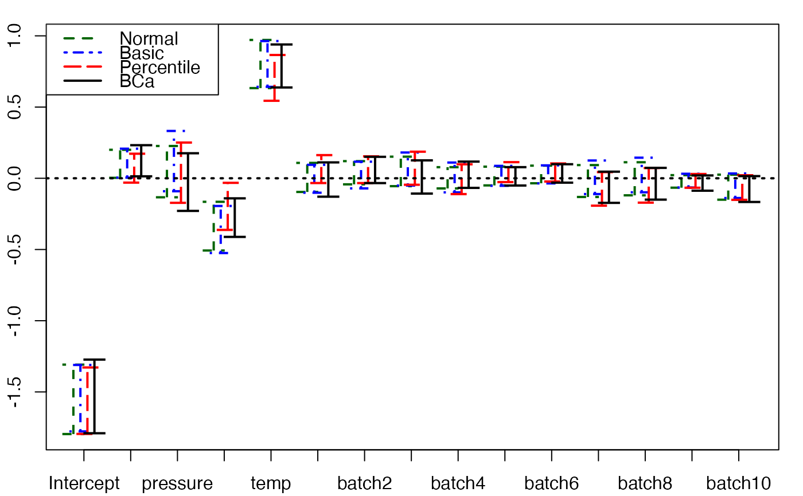
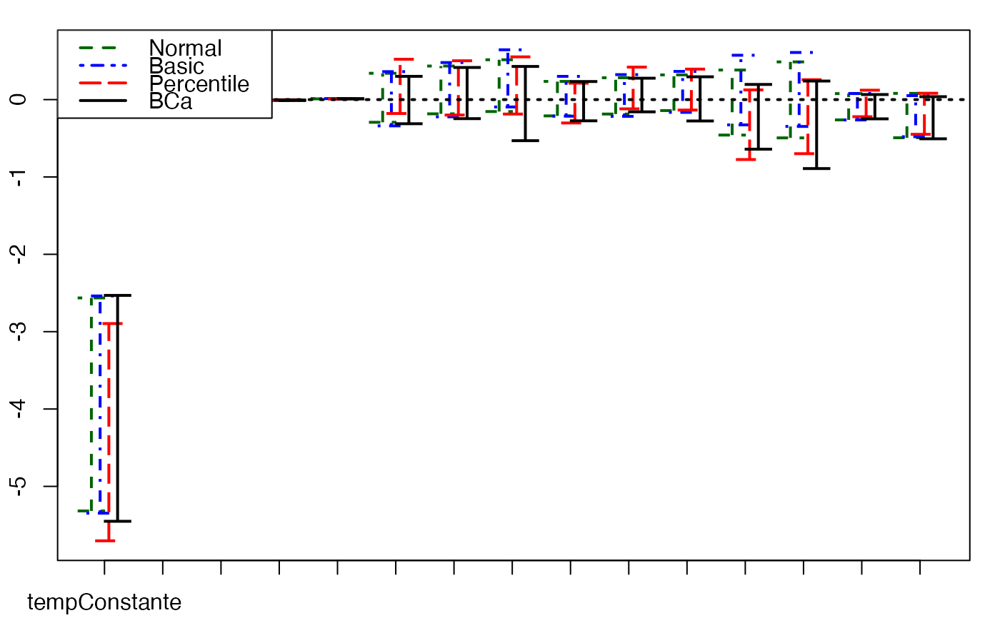
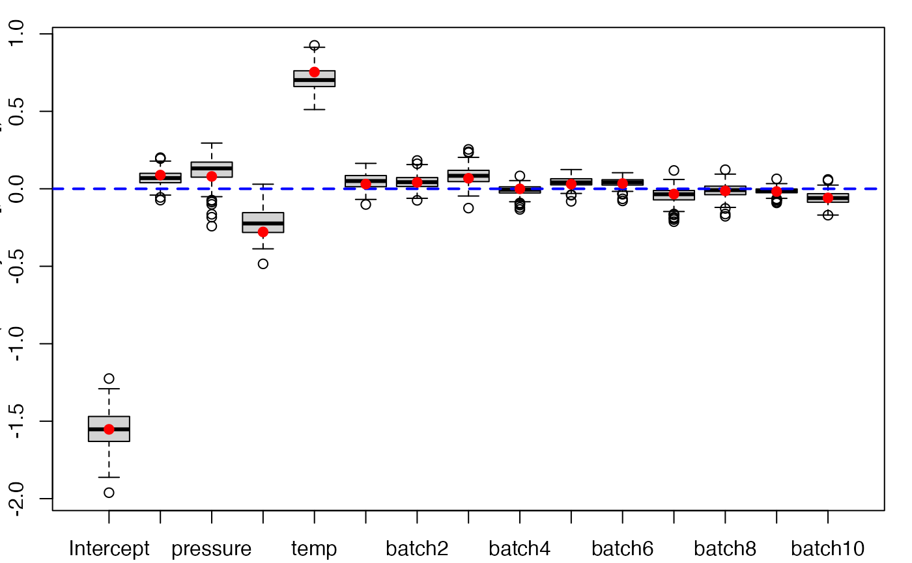

Non-parametric Bootstrap for PLS beta regression models
bootplsbeta.RdProvides a wrapper for the bootstrap function boot from the boot R package.
Implements non-parametric bootstrap for PLS beta regression models by case resampling.
bootplsbeta(object, typeboot="plsmodel", R=250, statistic=coefs.plsRbeta, sim="ordinary", stype="i", ...)
Arguments
| object | An object of class |
|---|---|
| typeboot | The type of bootstrap. Either (Y,X) boostrap ( |
| R | The number of bootstrap replicates. Usually this will be a single positive integer. For importance resampling, some resamples may use one set of weights and others use a different set of weights. In this case |
| statistic | A function which when applied to data returns a vector containing the statistic(s) of interest. |
| sim | A character string indicating the type of simulation required. Possible values are |
| stype | A character string indicating what the second argument of |
| … | Other named arguments for |
Details
More details on bootstrap techniques are available in the help of the boot function.
Value
An object of class "boot". See the Value part of the help of the function boot.
References
Frédéric Bertrand, Nicolas Meyer, Michèle Beau-Faller, Karim El Bayed, Izzie-Jacques Namer, Myriam Maumy-Bertrand (2013). Régression Bêta PLS. Journal de la Société Française de Statistique, 154(3):143-159. http://publications-sfds.math.cnrs.fr/index.php/J-SFdS/article/view/215
See also
Examples
data("GasolineYield",package="betareg") GazYield.boot <- bootplsbeta(plsRbeta(yield~.,data=GasolineYield,nt=3, modele="pls-beta"), sim="ordinary", stype="i", R=250)#> ____************************************************____ #> #> Model: pls-beta #> #> Link: logit #> #> Link.phi: #> #> Type: ML #> #> ____Component____ 1 ____ #> ____Component____ 2 ____ #> ____Component____ 3 ____ #> ____Predicting X without NA neither in X or Y____ #> ****________________________________________________**** #> #> ____************************************************____ #> #> Model: pls-beta #> #> Link: logit #> #> Link.phi: #> #> Type: ML #> #> ____Predicting X without NA neither in X nor in Y____ #> ____Component____ 1 ____ #> ____Component____ 2 ____ #> ____Component____ 3 ____ #> ****________________________________________________**** #> #> ____************************************************____ #> #> Model: pls-beta #> #> Link: logit #> #> Link.phi: #> #> Type: ML #> #> ____Predicting X without NA neither in X nor in Y____ #> ____Component____ 1 ____ #> ____Component____ 2 ____ #> ____Component____ 3 ____ #> ****________________________________________________**** #> #> ____************************************************____ #> #> Model: pls-beta #> #> Link: logit #> #> Link.phi: #> #> Type: ML #> #> ____Predicting X without NA neither in X nor in Y____ #> ____Component____ 1 ____ #> ____Component____ 2 ____ #> ____Component____ 3 ____ #> ****________________________________________________**** #> #> ____************************************************____ #> #> Model: pls-beta #> #> Link: logit #> #> Link.phi: #> #> Type: ML #> #> Warning : 13 < 10^{-12} #> Warning only 0 components could thus be extracted #> ****________________________________________________**** #> #> ____************************************************____ #> #> Model: pls-beta #> #> Link: logit #> #> Link.phi: #> #> Type: ML #> #> Warning : 7 13 < 10^{-12} #> Warning only 0 components could thus be extracted #> ****________________________________________________**** #> #> ____************************************************____ #> #> Model: pls-beta #> #> Link: logit #> #> Link.phi: #> #> Type: ML #> #> ____Predicting X without NA neither in X nor in Y____ #> ____Component____ 1 ____ #> ____Component____ 2 ____ #> ____Component____ 3 ____ #> ****________________________________________________**** #> #> ____************************************************____ #> #> Model: pls-beta #> #> Link: logit #> #> Link.phi: #> #> Type: ML #> #> Warning : 13 < 10^{-12} #> Warning only 0 components could thus be extracted #> ****________________________________________________**** #> #> ____************************************************____ #> #> Model: pls-beta #> #> Link: logit #> #> Link.phi: #> #> Type: ML #> #> Warning : 14 < 10^{-12} #> Warning only 0 components could thus be extracted #> ****________________________________________________**** #> #> ____************************************************____ #> #> Model: pls-beta #> #> Link: logit #> #> Link.phi: #> #> Type: ML #> #> ____Predicting X without NA neither in X nor in Y____ #> ____Component____ 1 ____ #> ____Component____ 2 ____ #> ____Component____ 3 ____ #> ****________________________________________________**** #> #> ____************************************************____ #> #> Model: pls-beta #> #> Link: logit #> #> Link.phi: #> #> Type: ML #> #> Warning : 9 < 10^{-12} #> Warning only 0 components could thus be extracted #> ****________________________________________________**** #> #> ____************************************************____ #> #> Model: pls-beta #> #> Link: logit #> #> Link.phi: #> #> Type: ML #> #> ____Predicting X without NA neither in X nor in Y____ #> ____Component____ 1 ____ #> ____Component____ 2 ____ #> ____Component____ 3 ____ #> ****________________________________________________**** #> #> ____************************************************____ #> #> Model: pls-beta #> #> Link: logit #> #> Link.phi: #> #> Type: ML #> #> Warning : 12 < 10^{-12} #> Warning only 0 components could thus be extracted #> ****________________________________________________**** #> #> ____************************************************____ #> #> Model: pls-beta #> #> Link: logit #> #> Link.phi: #> #> Type: ML #> #> Warning : 13 < 10^{-12} #> Warning only 0 components could thus be extracted #> ****________________________________________________**** #> #> ____************************************************____ #> #> Model: pls-beta #> #> Link: logit #> #> Link.phi: #> #> Type: ML #> #> ____Predicting X without NA neither in X nor in Y____ #> ____Component____ 1 ____ #> ____Component____ 2 ____ #> ____Component____ 3 ____ #> ****________________________________________________**** #> #> ____************************************************____ #> #> Model: pls-beta #> #> Link: logit #> #> Link.phi: #> #> Type: ML #> #> Warning : 13 < 10^{-12} #> Warning only 0 components could thus be extracted #> ****________________________________________________**** #> #> ____************************************************____ #> #> Model: pls-beta #> #> Link: logit #> #> Link.phi: #> #> Type: ML #> #> ____Predicting X without NA neither in X nor in Y____ #> ____Component____ 1 ____ #> ____Component____ 2 ____ #> ____Component____ 3 ____ #> ****________________________________________________**** #> #> ____************************************************____ #> #> Model: pls-beta #> #> Link: logit #> #> Link.phi: #> #> Type: ML #> #> Warning : 7 < 10^{-12} #> Warning only 0 components could thus be extracted #> ****________________________________________________**** #> #> ____************************************************____ #> #> Model: pls-beta #> #> Link: logit #> #> Link.phi: #> #> Type: ML #> #> ____Predicting X without NA neither in X nor in Y____ #> ____Component____ 1 ____ #> ____Component____ 2 ____ #> ____Component____ 3 ____ #> ****________________________________________________**** #> #> ____************************************************____ #> #> Model: pls-beta #> #> Link: logit #> #> Link.phi: #> #> Type: ML #> #> ____Predicting X without NA neither in X nor in Y____ #> ____Component____ 1 ____ #> ____Component____ 2 ____ #> ____Component____ 3 ____ #> ****________________________________________________**** #> #> ____************************************************____ #> #> Model: pls-beta #> #> Link: logit #> #> Link.phi: #> #> Type: ML #> #> ____Predicting X without NA neither in X nor in Y____ #> ____Component____ 1 ____ #> ____Component____ 2 ____ #> ____Component____ 3 ____ #> ****________________________________________________**** #> #> ____************************************************____ #> #> Model: pls-beta #> #> Link: logit #> #> Link.phi: #> #> Type: ML #> #> ____Predicting X without NA neither in X nor in Y____ #> ____Component____ 1 ____ #> ____Component____ 2 ____ #> ____Component____ 3 ____ #> ****________________________________________________**** #> #> ____************************************************____ #> #> Model: pls-beta #> #> Link: logit #> #> Link.phi: #> #> Type: ML #> #> Warning : 12 < 10^{-12} #> Warning only 0 components could thus be extracted #> ****________________________________________________**** #> #> ____************************************************____ #> #> Model: pls-beta #> #> Link: logit #> #> Link.phi: #> #> Type: ML #> #> ____Predicting X without NA neither in X nor in Y____ #> ____Component____ 1 ____ #> ____Component____ 2 ____ #> ____Component____ 3 ____ #> ****________________________________________________**** #> #> ____************************************************____ #> #> Model: pls-beta #> #> Link: logit #> #> Link.phi: #> #> Type: ML #> #> Warning : 13 < 10^{-12} #> Warning only 0 components could thus be extracted #> ****________________________________________________**** #> #> ____************************************************____ #> #> Model: pls-beta #> #> Link: logit #> #> Link.phi: #> #> Type: ML #> #> ____Predicting X without NA neither in X nor in Y____ #> ____Component____ 1 ____ #> ____Component____ 2 ____ #> ____Component____ 3 ____ #> ****________________________________________________**** #> #> ____************************************************____ #> #> Model: pls-beta #> #> Link: logit #> #> Link.phi: #> #> Type: ML #> #> ____Predicting X without NA neither in X nor in Y____ #> ____Component____ 1 ____ #> ____Component____ 2 ____ #> ____Component____ 3 ____ #> ****________________________________________________**** #> #> ____************************************************____ #> #> Model: pls-beta #> #> Link: logit #> #> Link.phi: #> #> Type: ML #> #> Warning : 13 < 10^{-12} #> Warning only 0 components could thus be extracted #> ****________________________________________________**** #> #> ____************************************************____ #> #> Model: pls-beta #> #> Link: logit #> #> Link.phi: #> #> Type: ML #> #> ____Predicting X without NA neither in X nor in Y____ #> ____Component____ 1 ____ #> ____Component____ 2 ____ #> ____Component____ 3 ____ #> ****________________________________________________**** #> #> ____************************************************____ #> #> Model: pls-beta #> #> Link: logit #> #> Link.phi: #> #> Type: ML #> #> ____Predicting X without NA neither in X nor in Y____ #> ____Component____ 1 ____ #> ____Component____ 2 ____ #> ____Component____ 3 ____ #> ****________________________________________________**** #> #> ____************************************************____ #> #> Model: pls-beta #> #> Link: logit #> #> Link.phi: #> #> Type: ML #> #> Warning : 13 < 10^{-12} #> Warning only 0 components could thus be extracted #> ****________________________________________________**** #> #> ____************************************************____ #> #> Model: pls-beta #> #> Link: logit #> #> Link.phi: #> #> Type: ML #> #> ____Predicting X without NA neither in X nor in Y____ #> ____Component____ 1 ____ #> ____Component____ 2 ____ #> ____Component____ 3 ____ #> ****________________________________________________**** #> #> ____************************************************____ #> #> Model: pls-beta #> #> Link: logit #> #> Link.phi: #> #> Type: ML #> #> Warning : 13 < 10^{-12} #> Warning only 0 components could thus be extracted #> ****________________________________________________**** #> #> ____************************************************____ #> #> Model: pls-beta #> #> Link: logit #> #> Link.phi: #> #> Type: ML #> #> Warning : 14 < 10^{-12} #> Warning only 0 components could thus be extracted #> ****________________________________________________**** #> #> ____************************************************____ #> #> Model: pls-beta #> #> Link: logit #> #> Link.phi: #> #> Type: ML #> #> Warning : 13 < 10^{-12} #> Warning only 0 components could thus be extracted #> ****________________________________________________**** #> #> ____************************************************____ #> #> Model: pls-beta #> #> Link: logit #> #> Link.phi: #> #> Type: ML #> #> Warning : 13 < 10^{-12} #> Warning only 0 components could thus be extracted #> ****________________________________________________**** #> #> ____************************************************____ #> #> Model: pls-beta #> #> Link: logit #> #> Link.phi: #> #> Type: ML #> #> Warning : 7 < 10^{-12} #> Warning only 0 components could thus be extracted #> ****________________________________________________**** #> #> ____************************************************____ #> #> Model: pls-beta #> #> Link: logit #> #> Link.phi: #> #> Type: ML #> #> ____Predicting X without NA neither in X nor in Y____ #> ____Component____ 1 ____ #> ____Component____ 2 ____ #> ____Component____ 3 ____ #> ****________________________________________________**** #> #> ____************************************************____ #> #> Model: pls-beta #> #> Link: logit #> #> Link.phi: #> #> Type: ML #> #> Warning : 10 < 10^{-12} #> Warning only 0 components could thus be extracted #> ****________________________________________________**** #> #> ____************************************************____ #> #> Model: pls-beta #> #> Link: logit #> #> Link.phi: #> #> Type: ML #> #> ____Predicting X without NA neither in X nor in Y____ #> ____Component____ 1 ____ #> ____Component____ 2 ____ #> ____Component____ 3 ____ #> ****________________________________________________**** #> #> ____************************************************____ #> #> Model: pls-beta #> #> Link: logit #> #> Link.phi: #> #> Type: ML #> #> Warning : 5 < 10^{-12} #> Warning only 0 components could thus be extracted #> ****________________________________________________**** #> #> ____************************************************____ #> #> Model: pls-beta #> #> Link: logit #> #> Link.phi: #> #> Type: ML #> #> Warning : 14 < 10^{-12} #> Warning only 0 components could thus be extracted #> ****________________________________________________**** #> #> ____************************************************____ #> #> Model: pls-beta #> #> Link: logit #> #> Link.phi: #> #> Type: ML #> #> ____Predicting X without NA neither in X nor in Y____ #> ____Component____ 1 ____ #> ____Component____ 2 ____ #> ____Component____ 3 ____ #> ****________________________________________________**** #> #> ____************************************************____ #> #> Model: pls-beta #> #> Link: logit #> #> Link.phi: #> #> Type: ML #> #> ____Predicting X without NA neither in X nor in Y____ #> ____Component____ 1 ____ #> ____Component____ 2 ____ #> ____Component____ 3 ____ #> ****________________________________________________**** #> #> ____************************************************____ #> #> Model: pls-beta #> #> Link: logit #> #> Link.phi: #> #> Type: ML #> #> Warning : 13 < 10^{-12} #> Warning only 0 components could thus be extracted #> ****________________________________________________**** #> #> ____************************************************____ #> #> Model: pls-beta #> #> Link: logit #> #> Link.phi: #> #> Type: ML #> #> Warning : 9 < 10^{-12} #> Warning only 0 components could thus be extracted #> ****________________________________________________**** #> #> ____************************************************____ #> #> Model: pls-beta #> #> Link: logit #> #> Link.phi: #> #> Type: ML #> #> ____Predicting X without NA neither in X nor in Y____ #> ____Component____ 1 ____ #> ____Component____ 2 ____ #> ____Component____ 3 ____ #> ****________________________________________________**** #> #> ____************************************************____ #> #> Model: pls-beta #> #> Link: logit #> #> Link.phi: #> #> Type: ML #> #> Warning : 5 < 10^{-12} #> Warning only 0 components could thus be extracted #> ****________________________________________________**** #> #> ____************************************************____ #> #> Model: pls-beta #> #> Link: logit #> #> Link.phi: #> #> Type: ML #> #> Warning : 6 < 10^{-12} #> Warning only 0 components could thus be extracted #> ****________________________________________________**** #> #> ____************************************************____ #> #> Model: pls-beta #> #> Link: logit #> #> Link.phi: #> #> Type: ML #> #> Warning : 13 < 10^{-12} #> Warning only 0 components could thus be extracted #> ****________________________________________________**** #> #> ____************************************************____ #> #> Model: pls-beta #> #> Link: logit #> #> Link.phi: #> #> Type: ML #> #> Warning : 13 < 10^{-12} #> Warning only 0 components could thus be extracted #> ****________________________________________________**** #> #> ____************************************************____ #> #> Model: pls-beta #> #> Link: logit #> #> Link.phi: #> #> Type: ML #> #> Warning : 14 < 10^{-12} #> Warning only 0 components could thus be extracted #> ****________________________________________________**** #> #> ____************************************************____ #> #> Model: pls-beta #> #> Link: logit #> #> Link.phi: #> #> Type: ML #> #> ____Predicting X without NA neither in X nor in Y____ #> ____Component____ 1 ____ #> ____Component____ 2 ____ #> ____Component____ 3 ____ #> ****________________________________________________**** #> #> ____************************************************____ #> #> Model: pls-beta #> #> Link: logit #> #> Link.phi: #> #> Type: ML #> #> ____Predicting X without NA neither in X nor in Y____ #> ____Component____ 1 ____ #> ____Component____ 2 ____ #> ____Component____ 3 ____ #> ****________________________________________________**** #> #> ____************************************************____ #> #> Model: pls-beta #> #> Link: logit #> #> Link.phi: #> #> Type: ML #> #> ____Predicting X without NA neither in X nor in Y____ #> ____Component____ 1 ____ #> ____Component____ 2 ____ #> ____Component____ 3 ____ #> ****________________________________________________**** #> #> ____************************************************____ #> #> Model: pls-beta #> #> Link: logit #> #> Link.phi: #> #> Type: ML #> #> Warning : 9 < 10^{-12} #> Warning only 0 components could thus be extracted #> ****________________________________________________**** #> #> ____************************************************____ #> #> Model: pls-beta #> #> Link: logit #> #> Link.phi: #> #> Type: ML #> #> ____Predicting X without NA neither in X nor in Y____ #> ____Component____ 1 ____ #> ____Component____ 2 ____ #> ____Component____ 3 ____ #> ****________________________________________________**** #> #> ____************************************************____ #> #> Model: pls-beta #> #> Link: logit #> #> Link.phi: #> #> Type: ML #> #> Warning : 14 < 10^{-12} #> Warning only 0 components could thus be extracted #> ****________________________________________________**** #> #> ____************************************************____ #> #> Model: pls-beta #> #> Link: logit #> #> Link.phi: #> #> Type: ML #> #> ____Predicting X without NA neither in X nor in Y____ #> ____Component____ 1 ____ #> ____Component____ 2 ____ #> ____Component____ 3 ____ #> ****________________________________________________**** #> #> ____************************************************____ #> #> Model: pls-beta #> #> Link: logit #> #> Link.phi: #> #> Type: ML #> #> Warning : 13 < 10^{-12} #> Warning only 0 components could thus be extracted #> ****________________________________________________**** #> #> ____************************************************____ #> #> Model: pls-beta #> #> Link: logit #> #> Link.phi: #> #> Type: ML #> #> ____Predicting X without NA neither in X nor in Y____ #> ____Component____ 1 ____ #> ____Component____ 2 ____ #> ____Component____ 3 ____ #> ****________________________________________________**** #> #> ____************************************************____ #> #> Model: pls-beta #> #> Link: logit #> #> Link.phi: #> #> Type: ML #> #> ____Predicting X without NA neither in X nor in Y____ #> ____Component____ 1 ____ #> ____Component____ 2 ____ #> ____Component____ 3 ____ #> ****________________________________________________**** #> #> ____************************************************____ #> #> Model: pls-beta #> #> Link: logit #> #> Link.phi: #> #> Type: ML #> #> ____Predicting X without NA neither in X nor in Y____ #> ____Component____ 1 ____ #> ____Component____ 2 ____ #> ____Component____ 3 ____ #> ****________________________________________________**** #> #> ____************************************************____ #> #> Model: pls-beta #> #> Link: logit #> #> Link.phi: #> #> Type: ML #> #> Warning : 6 13 < 10^{-12} #> Warning only 0 components could thus be extracted #> ****________________________________________________**** #> #> ____************************************************____ #> #> Model: pls-beta #> #> Link: logit #> #> Link.phi: #> #> Type: ML #> #> Warning : 13 < 10^{-12} #> Warning only 0 components could thus be extracted #> ****________________________________________________**** #> #> ____************************************************____ #> #> Model: pls-beta #> #> Link: logit #> #> Link.phi: #> #> Type: ML #> #> Warning : 13 < 10^{-12} #> Warning only 0 components could thus be extracted #> ****________________________________________________**** #> #> ____************************************************____ #> #> Model: pls-beta #> #> Link: logit #> #> Link.phi: #> #> Type: ML #> #> ____Predicting X without NA neither in X nor in Y____ #> ____Component____ 1 ____ #> ____Component____ 2 ____ #> ____Component____ 3 ____ #> ****________________________________________________**** #> #> ____************************************************____ #> #> Model: pls-beta #> #> Link: logit #> #> Link.phi: #> #> Type: ML #> #> ____Predicting X without NA neither in X nor in Y____ #> ____Component____ 1 ____ #> ____Component____ 2 ____ #> ____Component____ 3 ____ #> ****________________________________________________**** #> #> ____************************************************____ #> #> Model: pls-beta #> #> Link: logit #> #> Link.phi: #> #> Type: ML #> #> ____Predicting X without NA neither in X nor in Y____ #> ____Component____ 1 ____ #> ____Component____ 2 ____ #> ____Component____ 3 ____ #> ****________________________________________________**** #> #> ____************************************************____ #> #> Model: pls-beta #> #> Link: logit #> #> Link.phi: #> #> Type: ML #> #> ____Predicting X without NA neither in X nor in Y____ #> ____Component____ 1 ____ #> ____Component____ 2 ____ #> ____Component____ 3 ____ #> ****________________________________________________**** #> #> ____************************************************____ #> #> Model: pls-beta #> #> Link: logit #> #> Link.phi: #> #> Type: ML #> #> Warning : 7 < 10^{-12} #> Warning only 0 components could thus be extracted #> ****________________________________________________**** #> #> ____************************************************____ #> #> Model: pls-beta #> #> Link: logit #> #> Link.phi: #> #> Type: ML #> #> ____Predicting X without NA neither in X nor in Y____ #> ____Component____ 1 ____ #> ____Component____ 2 ____ #> ____Component____ 3 ____ #> ****________________________________________________**** #> #> ____************************************************____ #> #> Model: pls-beta #> #> Link: logit #> #> Link.phi: #> #> Type: ML #> #> ____Predicting X without NA neither in X nor in Y____ #> ____Component____ 1 ____ #> ____Component____ 2 ____ #> ____Component____ 3 ____ #> ****________________________________________________**** #> #> ____************************************************____ #> #> Model: pls-beta #> #> Link: logit #> #> Link.phi: #> #> Type: ML #> #> ____Predicting X without NA neither in X nor in Y____ #> ____Component____ 1 ____ #> ____Component____ 2 ____ #> ____Component____ 3 ____ #> ****________________________________________________**** #> #> ____************************************************____ #> #> Model: pls-beta #> #> Link: logit #> #> Link.phi: #> #> Type: ML #> #> Warning : 9 < 10^{-12} #> Warning only 0 components could thus be extracted #> ****________________________________________________**** #> #> ____************************************************____ #> #> Model: pls-beta #> #> Link: logit #> #> Link.phi: #> #> Type: ML #> #> Warning : 13 < 10^{-12} #> Warning only 0 components could thus be extracted #> ****________________________________________________**** #> #> ____************************************************____ #> #> Model: pls-beta #> #> Link: logit #> #> Link.phi: #> #> Type: ML #> #> Warning : 9 14 < 10^{-12} #> Warning only 0 components could thus be extracted #> ****________________________________________________**** #> #> ____************************************************____ #> #> Model: pls-beta #> #> Link: logit #> #> Link.phi: #> #> Type: ML #> #> ____Predicting X without NA neither in X nor in Y____ #> ____Component____ 1 ____ #> ____Component____ 2 ____ #> ____Component____ 3 ____ #> ****________________________________________________**** #> #> ____************************************************____ #> #> Model: pls-beta #> #> Link: logit #> #> Link.phi: #> #> Type: ML #> #> ____Predicting X without NA neither in X nor in Y____ #> ____Component____ 1 ____ #> ____Component____ 2 ____ #> ____Component____ 3 ____ #> ****________________________________________________**** #> #> ____************************************************____ #> #> Model: pls-beta #> #> Link: logit #> #> Link.phi: #> #> Type: ML #> #> Warning : 9 < 10^{-12} #> Warning only 0 components could thus be extracted #> ****________________________________________________**** #> #> ____************************************************____ #> #> Model: pls-beta #> #> Link: logit #> #> Link.phi: #> #> Type: ML #> #> ____Predicting X without NA neither in X nor in Y____ #> ____Component____ 1 ____ #> ____Component____ 2 ____ #> ____Component____ 3 ____ #> ****________________________________________________**** #> #> ____************************************************____ #> #> Model: pls-beta #> #> Link: logit #> #> Link.phi: #> #> Type: ML #> #> ____Predicting X without NA neither in X nor in Y____ #> ____Component____ 1 ____ #> ____Component____ 2 ____ #> ____Component____ 3 ____ #> ****________________________________________________**** #> #> ____************************************************____ #> #> Model: pls-beta #> #> Link: logit #> #> Link.phi: #> #> Type: ML #> #> ____Predicting X without NA neither in X nor in Y____ #> ____Component____ 1 ____ #> ____Component____ 2 ____ #> ____Component____ 3 ____ #> ****________________________________________________**** #> #> ____************************************************____ #> #> Model: pls-beta #> #> Link: logit #> #> Link.phi: #> #> Type: ML #> #> ____Predicting X without NA neither in X nor in Y____ #> ____Component____ 1 ____ #> ____Component____ 2 ____ #> ____Component____ 3 ____ #> ****________________________________________________**** #> #> ____************************************************____ #> #> Model: pls-beta #> #> Link: logit #> #> Link.phi: #> #> Type: ML #> #> ____Predicting X without NA neither in X nor in Y____ #> ____Component____ 1 ____ #> ____Component____ 2 ____ #> ____Component____ 3 ____ #> ****________________________________________________**** #> #> ____************************************************____ #> #> Model: pls-beta #> #> Link: logit #> #> Link.phi: #> #> Type: ML #> #> Warning : 13 14 < 10^{-12} #> Warning only 0 components could thus be extracted #> ****________________________________________________**** #> #> ____************************************************____ #> #> Model: pls-beta #> #> Link: logit #> #> Link.phi: #> #> Type: ML #> #> ____Predicting X without NA neither in X nor in Y____ #> ____Component____ 1 ____ #> ____Component____ 2 ____ #> ____Component____ 3 ____ #> ****________________________________________________**** #> #> ____************************************************____ #> #> Model: pls-beta #> #> Link: logit #> #> Link.phi: #> #> Type: ML #> #> Warning : 9 10 < 10^{-12} #> Warning only 0 components could thus be extracted #> ****________________________________________________**** #> #> ____************************************************____ #> #> Model: pls-beta #> #> Link: logit #> #> Link.phi: #> #> Type: ML #> #> ____Predicting X without NA neither in X nor in Y____ #> ____Component____ 1 ____ #> ____Component____ 2 ____ #> ____Component____ 3 ____ #> ****________________________________________________**** #> #> ____************************************************____ #> #> Model: pls-beta #> #> Link: logit #> #> Link.phi: #> #> Type: ML #> #> ____Predicting X without NA neither in X nor in Y____ #> ____Component____ 1 ____ #> ____Component____ 2 ____ #> ____Component____ 3 ____ #> ****________________________________________________**** #> #> ____************************************************____ #> #> Model: pls-beta #> #> Link: logit #> #> Link.phi: #> #> Type: ML #> #> ____Predicting X without NA neither in X nor in Y____ #> ____Component____ 1 ____ #> ____Component____ 2 ____ #> ____Component____ 3 ____ #> ****________________________________________________**** #> #> ____************************************************____ #> #> Model: pls-beta #> #> Link: logit #> #> Link.phi: #> #> Type: ML #> #> ____Predicting X without NA neither in X nor in Y____ #> ____Component____ 1 ____ #> ____Component____ 2 ____ #> ____Component____ 3 ____ #> ****________________________________________________**** #> #> ____************************************************____ #> #> Model: pls-beta #> #> Link: logit #> #> Link.phi: #> #> Type: ML #> #> Warning : 13 < 10^{-12} #> Warning only 0 components could thus be extracted #> ****________________________________________________**** #> #> ____************************************************____ #> #> Model: pls-beta #> #> Link: logit #> #> Link.phi: #> #> Type: ML #> #> Warning : 13 < 10^{-12} #> Warning only 0 components could thus be extracted #> ****________________________________________________**** #> #> ____************************************************____ #> #> Model: pls-beta #> #> Link: logit #> #> Link.phi: #> #> Type: ML #> #> Warning : 10 < 10^{-12} #> Warning only 0 components could thus be extracted #> ****________________________________________________**** #> #> ____************************************************____ #> #> Model: pls-beta #> #> Link: logit #> #> Link.phi: #> #> Type: ML #> #> ____Predicting X without NA neither in X nor in Y____ #> ____Component____ 1 ____ #> ____Component____ 2 ____ #> ____Component____ 3 ____ #> ****________________________________________________**** #> #> ____************************************************____ #> #> Model: pls-beta #> #> Link: logit #> #> Link.phi: #> #> Type: ML #> #> ____Predicting X without NA neither in X nor in Y____ #> ____Component____ 1 ____ #> ____Component____ 2 ____ #> ____Component____ 3 ____ #> ****________________________________________________**** #> #> ____************************************************____ #> #> Model: pls-beta #> #> Link: logit #> #> Link.phi: #> #> Type: ML #> #> Warning : 5 < 10^{-12} #> Warning only 0 components could thus be extracted #> ****________________________________________________**** #> #> ____************************************************____ #> #> Model: pls-beta #> #> Link: logit #> #> Link.phi: #> #> Type: ML #> #> ____Predicting X without NA neither in X nor in Y____ #> ____Component____ 1 ____ #> ____Component____ 2 ____ #> ____Component____ 3 ____ #> ****________________________________________________**** #> #> ____************************************************____ #> #> Model: pls-beta #> #> Link: logit #> #> Link.phi: #> #> Type: ML #> #> ____Predicting X without NA neither in X nor in Y____ #> ____Component____ 1 ____ #> ____Component____ 2 ____ #> ____Component____ 3 ____ #> ****________________________________________________**** #> #> ____************************************************____ #> #> Model: pls-beta #> #> Link: logit #> #> Link.phi: #> #> Type: ML #> #> ____Predicting X without NA neither in X nor in Y____ #> ____Component____ 1 ____ #> ____Component____ 2 ____ #> ____Component____ 3 ____ #> ****________________________________________________**** #> #> ____************************************************____ #> #> Model: pls-beta #> #> Link: logit #> #> Link.phi: #> #> Type: ML #> #> ____Predicting X without NA neither in X nor in Y____ #> ____Component____ 1 ____ #> ____Component____ 2 ____ #> ____Component____ 3 ____ #> ****________________________________________________**** #> #> ____************************************************____ #> #> Model: pls-beta #> #> Link: logit #> #> Link.phi: #> #> Type: ML #> #> ____Predicting X without NA neither in X nor in Y____ #> ____Component____ 1 ____ #> ____Component____ 2 ____ #> ____Component____ 3 ____ #> ****________________________________________________**** #> #> ____************************************************____ #> #> Model: pls-beta #> #> Link: logit #> #> Link.phi: #> #> Type: ML #> #> ____Predicting X without NA neither in X nor in Y____ #> ____Component____ 1 ____ #> ____Component____ 2 ____ #> ____Component____ 3 ____ #> ****________________________________________________**** #> #> ____************************************************____ #> #> Model: pls-beta #> #> Link: logit #> #> Link.phi: #> #> Type: ML #> #> ____Predicting X without NA neither in X nor in Y____ #> ____Component____ 1 ____ #> ____Component____ 2 ____ #> ____Component____ 3 ____ #> ****________________________________________________**** #> #> ____************************************************____ #> #> Model: pls-beta #> #> Link: logit #> #> Link.phi: #> #> Type: ML #> #> Warning : 10 13 < 10^{-12} #> Warning only 0 components could thus be extracted #> ****________________________________________________**** #> #> ____************************************************____ #> #> Model: pls-beta #> #> Link: logit #> #> Link.phi: #> #> Type: ML #> #> Warning : 9 < 10^{-12} #> Warning only 0 components could thus be extracted #> ****________________________________________________**** #> #> ____************************************************____ #> #> Model: pls-beta #> #> Link: logit #> #> Link.phi: #> #> Type: ML #> #> ____Predicting X without NA neither in X nor in Y____ #> ____Component____ 1 ____ #> ____Component____ 2 ____ #> ____Component____ 3 ____ #> ****________________________________________________**** #> #> ____************************************************____ #> #> Model: pls-beta #> #> Link: logit #> #> Link.phi: #> #> Type: ML #> #> Warning : 14 < 10^{-12} #> Warning only 0 components could thus be extracted #> ****________________________________________________**** #> #> ____************************************************____ #> #> Model: pls-beta #> #> Link: logit #> #> Link.phi: #> #> Type: ML #> #> ____Predicting X without NA neither in X nor in Y____ #> ____Component____ 1 ____ #> ____Component____ 2 ____ #> ____Component____ 3 ____ #> ****________________________________________________**** #> #> ____************************************************____ #> #> Model: pls-beta #> #> Link: logit #> #> Link.phi: #> #> Type: ML #> #> Warning : 6 < 10^{-12} #> Warning only 0 components could thus be extracted #> ****________________________________________________**** #> #> ____************************************************____ #> #> Model: pls-beta #> #> Link: logit #> #> Link.phi: #> #> Type: ML #> #> ____Predicting X without NA neither in X nor in Y____ #> ____Component____ 1 ____ #> ____Component____ 2 ____ #> ____Component____ 3 ____ #> ****________________________________________________**** #> #> ____************************************************____ #> #> Model: pls-beta #> #> Link: logit #> #> Link.phi: #> #> Type: ML #> #> ____Predicting X without NA neither in X nor in Y____ #> ____Component____ 1 ____ #> ____Component____ 2 ____ #> ____Component____ 3 ____ #> ****________________________________________________**** #> #> ____************************************************____ #> #> Model: pls-beta #> #> Link: logit #> #> Link.phi: #> #> Type: ML #> #> ____Predicting X without NA neither in X nor in Y____ #> ____Component____ 1 ____ #> ____Component____ 2 ____ #> ____Component____ 3 ____ #> ****________________________________________________**** #> #> ____************************************************____ #> #> Model: pls-beta #> #> Link: logit #> #> Link.phi: #> #> Type: ML #> #> Warning : 9 < 10^{-12} #> Warning only 0 components could thus be extracted #> ****________________________________________________**** #> #> ____************************************************____ #> #> Model: pls-beta #> #> Link: logit #> #> Link.phi: #> #> Type: ML #> #> ____Predicting X without NA neither in X nor in Y____ #> ____Component____ 1 ____ #> ____Component____ 2 ____ #> ____Component____ 3 ____ #> ****________________________________________________**** #> #> ____************************************************____ #> #> Model: pls-beta #> #> Link: logit #> #> Link.phi: #> #> Type: ML #> #> Warning : 6 13 < 10^{-12} #> Warning only 0 components could thus be extracted #> ****________________________________________________**** #> #> ____************************************************____ #> #> Model: pls-beta #> #> Link: logit #> #> Link.phi: #> #> Type: ML #> #> ____Predicting X without NA neither in X nor in Y____ #> ____Component____ 1 ____ #> ____Component____ 2 ____ #> ____Component____ 3 ____ #> ****________________________________________________**** #> #> ____************************************************____ #> #> Model: pls-beta #> #> Link: logit #> #> Link.phi: #> #> Type: ML #> #> ____Predicting X without NA neither in X nor in Y____ #> ____Component____ 1 ____ #> ____Component____ 2 ____ #> ____Component____ 3 ____ #> ****________________________________________________**** #> #> ____************************************************____ #> #> Model: pls-beta #> #> Link: logit #> #> Link.phi: #> #> Type: ML #> #> Warning : 10 < 10^{-12} #> Warning only 0 components could thus be extracted #> ****________________________________________________**** #> #> ____************************************************____ #> #> Model: pls-beta #> #> Link: logit #> #> Link.phi: #> #> Type: ML #> #> ____Predicting X without NA neither in X nor in Y____ #> ____Component____ 1 ____ #> ____Component____ 2 ____ #> ____Component____ 3 ____ #> ****________________________________________________**** #> #> ____************************************************____ #> #> Model: pls-beta #> #> Link: logit #> #> Link.phi: #> #> Type: ML #> #> ____Predicting X without NA neither in X nor in Y____ #> ____Component____ 1 ____ #> ____Component____ 2 ____ #> ____Component____ 3 ____ #> ****________________________________________________**** #> #> ____************************************************____ #> #> Model: pls-beta #> #> Link: logit #> #> Link.phi: #> #> Type: ML #> #> ____Predicting X without NA neither in X nor in Y____ #> ____Component____ 1 ____ #> ____Component____ 2 ____ #> ____Component____ 3 ____ #> ****________________________________________________**** #> #> ____************************************************____ #> #> Model: pls-beta #> #> Link: logit #> #> Link.phi: #> #> Type: ML #> #> ____Predicting X without NA neither in X nor in Y____ #> ____Component____ 1 ____ #> ____Component____ 2 ____ #> ____Component____ 3 ____ #> ****________________________________________________**** #> #> ____************************************************____ #> #> Model: pls-beta #> #> Link: logit #> #> Link.phi: #> #> Type: ML #> #> ____Predicting X without NA neither in X nor in Y____ #> ____Component____ 1 ____ #> ____Component____ 2 ____ #> ____Component____ 3 ____ #> ****________________________________________________**** #> #> ____************************************************____ #> #> Model: pls-beta #> #> Link: logit #> #> Link.phi: #> #> Type: ML #> #> Warning : 12 < 10^{-12} #> Warning only 0 components could thus be extracted #> ****________________________________________________**** #> #> ____************************************************____ #> #> Model: pls-beta #> #> Link: logit #> #> Link.phi: #> #> Type: ML #> #> ____Predicting X without NA neither in X nor in Y____ #> ____Component____ 1 ____ #> ____Component____ 2 ____ #> ____Component____ 3 ____ #> ****________________________________________________**** #> #> ____************************************************____ #> #> Model: pls-beta #> #> Link: logit #> #> Link.phi: #> #> Type: ML #> #> ____Predicting X without NA neither in X nor in Y____ #> ____Component____ 1 ____ #> ____Component____ 2 ____ #> ____Component____ 3 ____ #> ****________________________________________________**** #> #> ____************************************************____ #> #> Model: pls-beta #> #> Link: logit #> #> Link.phi: #> #> Type: ML #> #> ____Predicting X without NA neither in X nor in Y____ #> ____Component____ 1 ____ #> ____Component____ 2 ____ #> ____Component____ 3 ____ #> ****________________________________________________**** #> #> ____************************************************____ #> #> Model: pls-beta #> #> Link: logit #> #> Link.phi: #> #> Type: ML #> #> Warning : 13 < 10^{-12} #> Warning only 0 components could thus be extracted #> ****________________________________________________**** #> #> ____************************************************____ #> #> Model: pls-beta #> #> Link: logit #> #> Link.phi: #> #> Type: ML #> #> Warning : 6 < 10^{-12} #> Warning only 0 components could thus be extracted #> ****________________________________________________**** #> #> ____************************************************____ #> #> Model: pls-beta #> #> Link: logit #> #> Link.phi: #> #> Type: ML #> #> ____Predicting X without NA neither in X nor in Y____ #> ____Component____ 1 ____ #> ____Component____ 2 ____ #> ____Component____ 3 ____ #> ****________________________________________________**** #> #> ____************************************************____ #> #> Model: pls-beta #> #> Link: logit #> #> Link.phi: #> #> Type: ML #> #> Warning : 14 < 10^{-12} #> Warning only 0 components could thus be extracted #> ****________________________________________________**** #> #> ____************************************************____ #> #> Model: pls-beta #> #> Link: logit #> #> Link.phi: #> #> Type: ML #> #> Warning : 10 14 < 10^{-12} #> Warning only 0 components could thus be extracted #> ****________________________________________________**** #> #> ____************************************************____ #> #> Model: pls-beta #> #> Link: logit #> #> Link.phi: #> #> Type: ML #> #> ____Predicting X without NA neither in X nor in Y____ #> ____Component____ 1 ____ #> ____Component____ 2 ____ #> ____Component____ 3 ____ #> ****________________________________________________**** #> #> ____************************************************____ #> #> Model: pls-beta #> #> Link: logit #> #> Link.phi: #> #> Type: ML #> #> ____Predicting X without NA neither in X nor in Y____ #> ____Component____ 1 ____ #> ____Component____ 2 ____ #> ____Component____ 3 ____ #> ****________________________________________________**** #> #> ____************************************************____ #> #> Model: pls-beta #> #> Link: logit #> #> Link.phi: #> #> Type: ML #> #> Warning : 11 14 < 10^{-12} #> Warning only 0 components could thus be extracted #> ****________________________________________________**** #> #> ____************************************************____ #> #> Model: pls-beta #> #> Link: logit #> #> Link.phi: #> #> Type: ML #> #> Warning : 6 < 10^{-12} #> Warning only 0 components could thus be extracted #> ****________________________________________________**** #> #> ____************************************************____ #> #> Model: pls-beta #> #> Link: logit #> #> Link.phi: #> #> Type: ML #> #> Warning : 10 < 10^{-12} #> Warning only 0 components could thus be extracted #> ****________________________________________________**** #> #> ____************************************************____ #> #> Model: pls-beta #> #> Link: logit #> #> Link.phi: #> #> Type: ML #> #> Warning : 14 < 10^{-12} #> Warning only 0 components could thus be extracted #> ****________________________________________________**** #> #> ____************************************************____ #> #> Model: pls-beta #> #> Link: logit #> #> Link.phi: #> #> Type: ML #> #> ____Predicting X without NA neither in X nor in Y____ #> ____Component____ 1 ____ #> ____Component____ 2 ____ #> ____Component____ 3 ____ #> ****________________________________________________**** #> #> ____************************************************____ #> #> Model: pls-beta #> #> Link: logit #> #> Link.phi: #> #> Type: ML #> #> Warning : 10 < 10^{-12} #> Warning only 0 components could thus be extracted #> ****________________________________________________**** #> #> ____************************************************____ #> #> Model: pls-beta #> #> Link: logit #> #> Link.phi: #> #> Type: ML #> #> Warning : 13 < 10^{-12} #> Warning only 0 components could thus be extracted #> ****________________________________________________**** #> #> ____************************************************____ #> #> Model: pls-beta #> #> Link: logit #> #> Link.phi: #> #> Type: ML #> #> ____Predicting X without NA neither in X nor in Y____ #> ____Component____ 1 ____ #> ____Component____ 2 ____ #> ____Component____ 3 ____ #> ****________________________________________________**** #> #> ____************************************************____ #> #> Model: pls-beta #> #> Link: logit #> #> Link.phi: #> #> Type: ML #> #> Warning : 13 < 10^{-12} #> Warning only 0 components could thus be extracted #> ****________________________________________________**** #> #> ____************************************************____ #> #> Model: pls-beta #> #> Link: logit #> #> Link.phi: #> #> Type: ML #> #> Warning : 13 < 10^{-12} #> Warning only 0 components could thus be extracted #> ****________________________________________________**** #> #> ____************************************************____ #> #> Model: pls-beta #> #> Link: logit #> #> Link.phi: #> #> Type: ML #> #> ____Predicting X without NA neither in X nor in Y____ #> ____Component____ 1 ____ #> ____Component____ 2 ____ #> ____Component____ 3 ____ #> ****________________________________________________**** #> #> ____************************************************____ #> #> Model: pls-beta #> #> Link: logit #> #> Link.phi: #> #> Type: ML #> #> ____Predicting X without NA neither in X nor in Y____ #> ____Component____ 1 ____ #> ____Component____ 2 ____ #> ____Component____ 3 ____ #> ****________________________________________________**** #> #> ____************************************************____ #> #> Model: pls-beta #> #> Link: logit #> #> Link.phi: #> #> Type: ML #> #> Warning : 6 < 10^{-12} #> Warning only 0 components could thus be extracted #> ****________________________________________________**** #> #> ____************************************************____ #> #> Model: pls-beta #> #> Link: logit #> #> Link.phi: #> #> Type: ML #> #> ____Predicting X without NA neither in X nor in Y____ #> ____Component____ 1 ____ #> ____Component____ 2 ____ #> ____Component____ 3 ____ #> ****________________________________________________**** #> #> ____************************************************____ #> #> Model: pls-beta #> #> Link: logit #> #> Link.phi: #> #> Type: ML #> #> Warning : 10 < 10^{-12} #> Warning only 0 components could thus be extracted #> ****________________________________________________**** #> #> ____************************************************____ #> #> Model: pls-beta #> #> Link: logit #> #> Link.phi: #> #> Type: ML #> #> ____Predicting X without NA neither in X nor in Y____ #> ____Component____ 1 ____ #> ____Component____ 2 ____ #> ____Component____ 3 ____ #> ****________________________________________________**** #> #> ____************************************************____ #> #> Model: pls-beta #> #> Link: logit #> #> Link.phi: #> #> Type: ML #> #> Warning : 9 < 10^{-12} #> Warning only 0 components could thus be extracted #> ****________________________________________________**** #> #> ____************************************************____ #> #> Model: pls-beta #> #> Link: logit #> #> Link.phi: #> #> Type: ML #> #> Warning : 13 < 10^{-12} #> Warning only 0 components could thus be extracted #> ****________________________________________________**** #> #> ____************************************************____ #> #> Model: pls-beta #> #> Link: logit #> #> Link.phi: #> #> Type: ML #> #> Warning : 12 < 10^{-12} #> Warning only 0 components could thus be extracted #> ****________________________________________________**** #> #> ____************************************************____ #> #> Model: pls-beta #> #> Link: logit #> #> Link.phi: #> #> Type: ML #> #> ____Predicting X without NA neither in X nor in Y____ #> ____Component____ 1 ____ #> ____Component____ 2 ____ #> ____Component____ 3 ____ #> ****________________________________________________**** #> #> ____************************************************____ #> #> Model: pls-beta #> #> Link: logit #> #> Link.phi: #> #> Type: ML #> #> ____Predicting X without NA neither in X nor in Y____ #> ____Component____ 1 ____ #> ____Component____ 2 ____ #> ____Component____ 3 ____ #> ****________________________________________________**** #> #> ____************************************************____ #> #> Model: pls-beta #> #> Link: logit #> #> Link.phi: #> #> Type: ML #> #> ____Predicting X without NA neither in X nor in Y____ #> ____Component____ 1 ____ #> ____Component____ 2 ____ #> ____Component____ 3 ____ #> ****________________________________________________**** #> #> ____************************************************____ #> #> Model: pls-beta #> #> Link: logit #> #> Link.phi: #> #> Type: ML #> #> ____Predicting X without NA neither in X nor in Y____ #> ____Component____ 1 ____ #> ____Component____ 2 ____ #> ____Component____ 3 ____ #> ****________________________________________________**** #> #> ____************************************************____ #> #> Model: pls-beta #> #> Link: logit #> #> Link.phi: #> #> Type: ML #> #> Warning : 12 < 10^{-12} #> Warning only 0 components could thus be extracted #> ****________________________________________________**** #> #> ____************************************************____ #> #> Model: pls-beta #> #> Link: logit #> #> Link.phi: #> #> Type: ML #> #> Warning : 10 < 10^{-12} #> Warning only 0 components could thus be extracted #> ****________________________________________________**** #> #> ____************************************************____ #> #> Model: pls-beta #> #> Link: logit #> #> Link.phi: #> #> Type: ML #> #> ____Predicting X without NA neither in X nor in Y____ #> ____Component____ 1 ____ #> ____Component____ 2 ____ #> ____Component____ 3 ____ #> ****________________________________________________**** #> #> ____************************************************____ #> #> Model: pls-beta #> #> Link: logit #> #> Link.phi: #> #> Type: ML #> #> ____Predicting X without NA neither in X nor in Y____ #> ____Component____ 1 ____ #> ____Component____ 2 ____ #> ____Component____ 3 ____ #> ****________________________________________________**** #> #> ____************************************************____ #> #> Model: pls-beta #> #> Link: logit #> #> Link.phi: #> #> Type: ML #> #> Warning : 7 < 10^{-12} #> Warning only 0 components could thus be extracted #> ****________________________________________________**** #> #> ____************************************************____ #> #> Model: pls-beta #> #> Link: logit #> #> Link.phi: #> #> Type: ML #> #> ____Predicting X without NA neither in X nor in Y____ #> ____Component____ 1 ____ #> ____Component____ 2 ____ #> ____Component____ 3 ____ #> ****________________________________________________**** #> #> ____************************************************____ #> #> Model: pls-beta #> #> Link: logit #> #> Link.phi: #> #> Type: ML #> #> ____Predicting X without NA neither in X nor in Y____ #> ____Component____ 1 ____ #> ____Component____ 2 ____ #> ____Component____ 3 ____ #> ****________________________________________________**** #> #> ____************************************************____ #> #> Model: pls-beta #> #> Link: logit #> #> Link.phi: #> #> Type: ML #> #> Warning : 6 < 10^{-12} #> Warning only 0 components could thus be extracted #> ****________________________________________________**** #> #> ____************************************************____ #> #> Model: pls-beta #> #> Link: logit #> #> Link.phi: #> #> Type: ML #> #> Warning : 12 < 10^{-12} #> Warning only 0 components could thus be extracted #> ****________________________________________________**** #> #> ____************************************************____ #> #> Model: pls-beta #> #> Link: logit #> #> Link.phi: #> #> Type: ML #> #> ____Predicting X without NA neither in X nor in Y____ #> ____Component____ 1 ____ #> ____Component____ 2 ____ #> ____Component____ 3 ____ #> ****________________________________________________**** #> #> ____************************************************____ #> #> Model: pls-beta #> #> Link: logit #> #> Link.phi: #> #> Type: ML #> #> ____Predicting X without NA neither in X nor in Y____ #> ____Component____ 1 ____ #> ____Component____ 2 ____ #> ____Component____ 3 ____ #> ****________________________________________________**** #> #> ____************************************************____ #> #> Model: pls-beta #> #> Link: logit #> #> Link.phi: #> #> Type: ML #> #> Warning : 13 < 10^{-12} #> Warning only 0 components could thus be extracted #> ****________________________________________________**** #> #> ____************************************************____ #> #> Model: pls-beta #> #> Link: logit #> #> Link.phi: #> #> Type: ML #> #> ____Predicting X without NA neither in X nor in Y____ #> ____Component____ 1 ____ #> ____Component____ 2 ____ #> ____Component____ 3 ____ #> ****________________________________________________**** #> #> ____************************************************____ #> #> Model: pls-beta #> #> Link: logit #> #> Link.phi: #> #> Type: ML #> #> Warning : 12 < 10^{-12} #> Warning only 0 components could thus be extracted #> ****________________________________________________**** #> #> ____************************************************____ #> #> Model: pls-beta #> #> Link: logit #> #> Link.phi: #> #> Type: ML #> #> ____Predicting X without NA neither in X nor in Y____ #> ____Component____ 1 ____ #> ____Component____ 2 ____ #> ____Component____ 3 ____ #> ****________________________________________________**** #> #> ____************************************************____ #> #> Model: pls-beta #> #> Link: logit #> #> Link.phi: #> #> Type: ML #> #> ____Predicting X without NA neither in X nor in Y____ #> ____Component____ 1 ____ #> ____Component____ 2 ____ #> ____Component____ 3 ____ #> ****________________________________________________**** #> #> ____************************************************____ #> #> Model: pls-beta #> #> Link: logit #> #> Link.phi: #> #> Type: ML #> #> ____Predicting X without NA neither in X nor in Y____ #> ____Component____ 1 ____ #> ____Component____ 2 ____ #> ____Component____ 3 ____ #> ****________________________________________________**** #> #> ____************************************************____ #> #> Model: pls-beta #> #> Link: logit #> #> Link.phi: #> #> Type: ML #> #> Warning : 10 < 10^{-12} #> Warning only 0 components could thus be extracted #> ****________________________________________________**** #> #> ____************************************************____ #> #> Model: pls-beta #> #> Link: logit #> #> Link.phi: #> #> Type: ML #> #> Warning : 7 8 < 10^{-12} #> Warning only 0 components could thus be extracted #> ****________________________________________________**** #> #> ____************************************************____ #> #> Model: pls-beta #> #> Link: logit #> #> Link.phi: #> #> Type: ML #> #> Warning : 6 < 10^{-12} #> Warning only 0 components could thus be extracted #> ****________________________________________________**** #> #> ____************************************************____ #> #> Model: pls-beta #> #> Link: logit #> #> Link.phi: #> #> Type: ML #> #> ____Predicting X without NA neither in X nor in Y____ #> ____Component____ 1 ____ #> ____Component____ 2 ____ #> ____Component____ 3 ____ #> ****________________________________________________**** #> #> ____************************************************____ #> #> Model: pls-beta #> #> Link: logit #> #> Link.phi: #> #> Type: ML #> #> Warning : 13 < 10^{-12} #> Warning only 0 components could thus be extracted #> ****________________________________________________**** #> #> ____************************************************____ #> #> Model: pls-beta #> #> Link: logit #> #> Link.phi: #> #> Type: ML #> #> Warning : 6 < 10^{-12} #> Warning only 0 components could thus be extracted #> ****________________________________________________**** #> #> ____************************************************____ #> #> Model: pls-beta #> #> Link: logit #> #> Link.phi: #> #> Type: ML #> #> Warning : 6 < 10^{-12} #> Warning only 0 components could thus be extracted #> ****________________________________________________**** #> #> ____************************************************____ #> #> Model: pls-beta #> #> Link: logit #> #> Link.phi: #> #> Type: ML #> #> ____Predicting X without NA neither in X nor in Y____ #> ____Component____ 1 ____ #> ____Component____ 2 ____ #> ____Component____ 3 ____ #> ****________________________________________________**** #> #> ____************************************************____ #> #> Model: pls-beta #> #> Link: logit #> #> Link.phi: #> #> Type: ML #> #> ____Predicting X without NA neither in X nor in Y____ #> ____Component____ 1 ____ #> ____Component____ 2 ____ #> ____Component____ 3 ____ #> ****________________________________________________**** #> #> ____************************************************____ #> #> Model: pls-beta #> #> Link: logit #> #> Link.phi: #> #> Type: ML #> #> ____Predicting X without NA neither in X nor in Y____ #> ____Component____ 1 ____ #> ____Component____ 2 ____ #> ____Component____ 3 ____ #> ****________________________________________________**** #> #> ____************************************************____ #> #> Model: pls-beta #> #> Link: logit #> #> Link.phi: #> #> Type: ML #> #> ____Predicting X without NA neither in X nor in Y____ #> ____Component____ 1 ____ #> ____Component____ 2 ____ #> ____Component____ 3 ____ #> ****________________________________________________**** #> #> ____************************************************____ #> #> Model: pls-beta #> #> Link: logit #> #> Link.phi: #> #> Type: ML #> #> ____Predicting X without NA neither in X nor in Y____ #> ____Component____ 1 ____ #> ____Component____ 2 ____ #> ____Component____ 3 ____ #> ****________________________________________________**** #> #> ____************************************************____ #> #> Model: pls-beta #> #> Link: logit #> #> Link.phi: #> #> Type: ML #> #> Warning : 8 < 10^{-12} #> Warning only 0 components could thus be extracted #> ****________________________________________________**** #> #> ____************************************************____ #> #> Model: pls-beta #> #> Link: logit #> #> Link.phi: #> #> Type: ML #> #> Warning : 14 < 10^{-12} #> Warning only 0 components could thus be extracted #> ****________________________________________________**** #> #> ____************************************************____ #> #> Model: pls-beta #> #> Link: logit #> #> Link.phi: #> #> Type: ML #> #> ____Predicting X without NA neither in X nor in Y____ #> ____Component____ 1 ____ #> ____Component____ 2 ____ #> ____Component____ 3 ____ #> ****________________________________________________**** #> #> ____************************************************____ #> #> Model: pls-beta #> #> Link: logit #> #> Link.phi: #> #> Type: ML #> #> Warning : 13 < 10^{-12} #> Warning only 0 components could thus be extracted #> ****________________________________________________**** #> #> ____************************************************____ #> #> Model: pls-beta #> #> Link: logit #> #> Link.phi: #> #> Type: ML #> #> Warning : 13 < 10^{-12} #> Warning only 0 components could thus be extracted #> ****________________________________________________**** #> #> ____************************************************____ #> #> Model: pls-beta #> #> Link: logit #> #> Link.phi: #> #> Type: ML #> #> ____Predicting X without NA neither in X nor in Y____ #> ____Component____ 1 ____ #> ____Component____ 2 ____ #> ____Component____ 3 ____ #> ****________________________________________________**** #> #> ____************************************************____ #> #> Model: pls-beta #> #> Link: logit #> #> Link.phi: #> #> Type: ML #> #> ____Predicting X without NA neither in X nor in Y____ #> ____Component____ 1 ____ #> ____Component____ 2 ____ #> ____Component____ 3 ____ #> ****________________________________________________**** #> #> ____************************************************____ #> #> Model: pls-beta #> #> Link: logit #> #> Link.phi: #> #> Type: ML #> #> ____Predicting X without NA neither in X nor in Y____ #> ____Component____ 1 ____ #> ____Component____ 2 ____ #> ____Component____ 3 ____ #> ****________________________________________________**** #> #> ____************************************************____ #> #> Model: pls-beta #> #> Link: logit #> #> Link.phi: #> #> Type: ML #> #> ____Predicting X without NA neither in X nor in Y____ #> ____Component____ 1 ____ #> ____Component____ 2 ____ #> ____Component____ 3 ____ #> ****________________________________________________**** #> #> ____************************************************____ #> #> Model: pls-beta #> #> Link: logit #> #> Link.phi: #> #> Type: ML #> #> ____Predicting X without NA neither in X nor in Y____ #> ____Component____ 1 ____ #> ____Component____ 2 ____ #> ____Component____ 3 ____ #> ****________________________________________________**** #> #> ____************************************************____ #> #> Model: pls-beta #> #> Link: logit #> #> Link.phi: #> #> Type: ML #> #> ____Predicting X without NA neither in X nor in Y____ #> ____Component____ 1 ____ #> ____Component____ 2 ____ #> ____Component____ 3 ____ #> ****________________________________________________**** #> #> ____************************************************____ #> #> Model: pls-beta #> #> Link: logit #> #> Link.phi: #> #> Type: ML #> #> ____Predicting X without NA neither in X nor in Y____ #> ____Component____ 1 ____ #> ____Component____ 2 ____ #> ____Component____ 3 ____ #> ****________________________________________________**** #> #> ____************************************************____ #> #> Model: pls-beta #> #> Link: logit #> #> Link.phi: #> #> Type: ML #> #> ____Predicting X without NA neither in X nor in Y____ #> ____Component____ 1 ____ #> ____Component____ 2 ____ #> ____Component____ 3 ____ #> ****________________________________________________**** #> #> ____************************************************____ #> #> Model: pls-beta #> #> Link: logit #> #> Link.phi: #> #> Type: ML #> #> ____Predicting X without NA neither in X nor in Y____ #> ____Component____ 1 ____ #> ____Component____ 2 ____ #> ____Component____ 3 ____ #> ****________________________________________________**** #> #> ____************************************************____ #> #> Model: pls-beta #> #> Link: logit #> #> Link.phi: #> #> Type: ML #> #> ____Predicting X without NA neither in X nor in Y____ #> ____Component____ 1 ____ #> ____Component____ 2 ____ #> ____Component____ 3 ____ #> ****________________________________________________**** #> #> ____************************************************____ #> #> Model: pls-beta #> #> Link: logit #> #> Link.phi: #> #> Type: ML #> #> Warning : 5 9 < 10^{-12} #> Warning only 0 components could thus be extracted #> ****________________________________________________**** #> #> ____************************************************____ #> #> Model: pls-beta #> #> Link: logit #> #> Link.phi: #> #> Type: ML #> #> ____Predicting X without NA neither in X nor in Y____ #> ____Component____ 1 ____ #> ____Component____ 2 ____ #> ____Component____ 3 ____ #> ****________________________________________________**** #> #> ____************************************************____ #> #> Model: pls-beta #> #> Link: logit #> #> Link.phi: #> #> Type: ML #> #> Warning : 14 < 10^{-12} #> Warning only 0 components could thus be extracted #> ****________________________________________________**** #> #> ____************************************************____ #> #> Model: pls-beta #> #> Link: logit #> #> Link.phi: #> #> Type: ML #> #> Warning : 13 < 10^{-12} #> Warning only 0 components could thus be extracted #> ****________________________________________________**** #> #> ____************************************************____ #> #> Model: pls-beta #> #> Link: logit #> #> Link.phi: #> #> Type: ML #> #> Warning : 9 < 10^{-12} #> Warning only 0 components could thus be extracted #> ****________________________________________________**** #> #> ____************************************************____ #> #> Model: pls-beta #> #> Link: logit #> #> Link.phi: #> #> Type: ML #> #> ____Predicting X without NA neither in X nor in Y____ #> ____Component____ 1 ____ #> ____Component____ 2 ____ #> ____Component____ 3 ____ #> ****________________________________________________**** #> #> ____************************************************____ #> #> Model: pls-beta #> #> Link: logit #> #> Link.phi: #> #> Type: ML #> #> Warning : 8 < 10^{-12} #> Warning only 0 components could thus be extracted #> ****________________________________________________**** #> #> ____************************************************____ #> #> Model: pls-beta #> #> Link: logit #> #> Link.phi: #> #> Type: ML #> #> ____Predicting X without NA neither in X nor in Y____ #> ____Component____ 1 ____ #> ____Component____ 2 ____ #> ____Component____ 3 ____ #> ****________________________________________________**** #> #> ____************************************************____ #> #> Model: pls-beta #> #> Link: logit #> #> Link.phi: #> #> Type: ML #> #> Warning : 6 13 < 10^{-12} #> Warning only 0 components could thus be extracted #> ****________________________________________________**** #> #> ____************************************************____ #> #> Model: pls-beta #> #> Link: logit #> #> Link.phi: #> #> Type: ML #> #> Warning : 9 13 < 10^{-12} #> Warning only 0 components could thus be extracted #> ****________________________________________________**** #> #> ____************************************************____ #> #> Model: pls-beta #> #> Link: logit #> #> Link.phi: #> #> Type: ML #> #> ____Predicting X without NA neither in X nor in Y____ #> ____Component____ 1 ____ #> ____Component____ 2 ____ #> ____Component____ 3 ____ #> ****________________________________________________**** #> #> ____************************************************____ #> #> Model: pls-beta #> #> Link: logit #> #> Link.phi: #> #> Type: ML #> #> ____Predicting X without NA neither in X nor in Y____ #> ____Component____ 1 ____ #> ____Component____ 2 ____ #> ____Component____ 3 ____ #> ****________________________________________________**** #> #> ____************************************************____ #> #> Model: pls-beta #> #> Link: logit #> #> Link.phi: #> #> Type: ML #> #> Warning : 11 < 10^{-12} #> Warning only 0 components could thus be extracted #> ****________________________________________________**** #> #> ____************************************************____ #> #> Model: pls-beta #> #> Link: logit #> #> Link.phi: #> #> Type: ML #> #> ____Predicting X without NA neither in X nor in Y____ #> ____Component____ 1 ____ #> ____Component____ 2 ____ #> ____Component____ 3 ____ #> ****________________________________________________**** #> #> ____************************************************____ #> #> Model: pls-beta #> #> Link: logit #> #> Link.phi: #> #> Type: ML #> #> ____Predicting X without NA neither in X nor in Y____ #> ____Component____ 1 ____ #> ____Component____ 2 ____ #> ____Component____ 3 ____ #> ****________________________________________________**** #> #> ____************************************************____ #> #> Model: pls-beta #> #> Link: logit #> #> Link.phi: #> #> Type: ML #> #> ____Predicting X without NA neither in X nor in Y____ #> ____Component____ 1 ____ #> ____Component____ 2 ____ #> ____Component____ 3 ____ #> ****________________________________________________**** #> #> ____************************************************____ #> #> Model: pls-beta #> #> Link: logit #> #> Link.phi: #> #> Type: ML #> #> ____Predicting X without NA neither in X nor in Y____ #> ____Component____ 1 ____ #> ____Component____ 2 ____ #> ____Component____ 3 ____ #> ****________________________________________________**** #> #> ____************************************************____ #> #> Model: pls-beta #> #> Link: logit #> #> Link.phi: #> #> Type: ML #> #> ____Predicting X without NA neither in X nor in Y____ #> ____Component____ 1 ____ #> ____Component____ 2 ____ #> ____Component____ 3 ____ #> ****________________________________________________**** #> #> ____************************************************____ #> #> Model: pls-beta #> #> Link: logit #> #> Link.phi: #> #> Type: ML #> #> ____Predicting X without NA neither in X nor in Y____ #> ____Component____ 1 ____ #> ____Component____ 2 ____ #> ____Component____ 3 ____ #> ****________________________________________________**** #> #> ____************************************************____ #> #> Model: pls-beta #> #> Link: logit #> #> Link.phi: #> #> Type: ML #> #> ____Predicting X without NA neither in X nor in Y____ #> ____Component____ 1 ____ #> ____Component____ 2 ____ #> ____Component____ 3 ____ #> ****________________________________________________**** #> #> ____************************************************____ #> #> Model: pls-beta #> #> Link: logit #> #> Link.phi: #> #> Type: ML #> #> Warning : 12 < 10^{-12} #> Warning only 0 components could thus be extracted #> ****________________________________________________**** #> #> ____************************************************____ #> #> Model: pls-beta #> #> Link: logit #> #> Link.phi: #> #> Type: ML #> #> Warning : 14 < 10^{-12} #> Warning only 0 components could thus be extracted #> ****________________________________________________**** #> #> ____************************************************____ #> #> Model: pls-beta #> #> Link: logit #> #> Link.phi: #> #> Type: ML #> #> ____Predicting X without NA neither in X nor in Y____ #> ____Component____ 1 ____ #> ____Component____ 2 ____ #> ____Component____ 3 ____ #> ****________________________________________________**** #> #> ____************************************************____ #> #> Model: pls-beta #> #> Link: logit #> #> Link.phi: #> #> Type: ML #> #> ____Predicting X without NA neither in X nor in Y____ #> ____Component____ 1 ____ #> ____Component____ 2 ____ #> ____Component____ 3 ____ #> ****________________________________________________**** #> #> ____************************************************____ #> #> Model: pls-beta #> #> Link: logit #> #> Link.phi: #> #> Type: ML #> #> Warning : 5 < 10^{-12} #> Warning only 0 components could thus be extracted #> ****________________________________________________**** #> #> ____************************************************____ #> #> Model: pls-beta #> #> Link: logit #> #> Link.phi: #> #> Type: ML #> #> ____Predicting X without NA neither in X nor in Y____ #> ____Component____ 1 ____ #> ____Component____ 2 ____ #> ____Component____ 3 ____ #> ****________________________________________________**** #> #> ____************************************************____ #> #> Model: pls-beta #> #> Link: logit #> #> Link.phi: #> #> Type: ML #> #> Warning : 10 < 10^{-12} #> Warning only 0 components could thus be extracted #> ****________________________________________________**** #> #> ____************************************************____ #> #> Model: pls-beta #> #> Link: logit #> #> Link.phi: #> #> Type: ML #> #> ____Predicting X without NA neither in X nor in Y____ #> ____Component____ 1 ____ #> ____Component____ 2 ____ #> ____Component____ 3 ____ #> ****________________________________________________**** #> #> ____************************************************____ #> #> Model: pls-beta #> #> Link: logit #> #> Link.phi: #> #> Type: ML #> #> ____Predicting X without NA neither in X nor in Y____ #> ____Component____ 1 ____ #> ____Component____ 2 ____ #> ____Component____ 3 ____ #> ****________________________________________________**** #> #> ____************************************************____ #> #> Model: pls-beta #> #> Link: logit #> #> Link.phi: #> #> Type: ML #> #> ____Predicting X without NA neither in X nor in Y____ #> ____Component____ 1 ____ #> ____Component____ 2 ____ #> ____Component____ 3 ____ #> ****________________________________________________**** #> #> ____************************************************____ #> #> Model: pls-beta #> #> Link: logit #> #> Link.phi: #> #> Type: ML #> #> ____Predicting X without NA neither in X nor in Y____ #> ____Component____ 1 ____ #> ____Component____ 2 ____ #> ____Component____ 3 ____ #> ****________________________________________________**** #> #> ____************************************************____ #> #> Model: pls-beta #> #> Link: logit #> #> Link.phi: #> #> Type: ML #> #> ____Predicting X without NA neither in X nor in Y____ #> ____Component____ 1 ____ #> ____Component____ 2 ____ #> ____Component____ 3 ____ #> ****________________________________________________**** #> #> ____************************************************____ #> #> Model: pls-beta #> #> Link: logit #> #> Link.phi: #> #> Type: ML #> #> ____Predicting X without NA neither in X nor in Y____ #> ____Component____ 1 ____ #> ____Component____ 2 ____ #> ____Component____ 3 ____ #> ****________________________________________________**** #> #> ____************************************************____ #> #> Model: pls-beta #> #> Link: logit #> #> Link.phi: #> #> Type: ML #> #> Warning : 7 10 < 10^{-12} #> Warning only 0 components could thus be extracted #> ****________________________________________________**** #> #> ____************************************************____ #> #> Model: pls-beta #> #> Link: logit #> #> Link.phi: #> #> Type: ML #> #> ____Predicting X without NA neither in X nor in Y____ #> ____Component____ 1 ____ #> ____Component____ 2 ____ #> ____Component____ 3 ____ #> ****________________________________________________**** #> #> ____************************************************____ #> #> Model: pls-beta #> #> Link: logit #> #> Link.phi: #> #> Type: ML #> #> Warning : 7 < 10^{-12} #> Warning only 0 components could thus be extracted #> ****________________________________________________**** #> #> ____************************************************____ #> #> Model: pls-beta #> #> Link: logit #> #> Link.phi: #> #> Type: ML #> #> Warning : 6 < 10^{-12} #> Warning only 0 components could thus be extracted #> ****________________________________________________**** #> #> ____************************************************____ #> #> Model: pls-beta #> #> Link: logit #> #> Link.phi: #> #> Type: ML #> #> Warning : 12 < 10^{-12} #> Warning only 0 components could thus be extracted #> ****________________________________________________**** #> #> ____************************************************____ #> #> Model: pls-beta #> #> Link: logit #> #> Link.phi: #> #> Type: ML #> #> Warning : 8 < 10^{-12} #> Warning only 0 components could thus be extracted #> ****________________________________________________**** #> #> ____************************************************____ #> #> Model: pls-beta #> #> Link: logit #> #> Link.phi: #> #> Type: ML #> #> ____Predicting X without NA neither in X nor in Y____ #> ____Component____ 1 ____ #> ____Component____ 2 ____ #> ____Component____ 3 ____ #> ****________________________________________________**** #> #> ____************************************************____ #> #> Model: pls-beta #> #> Link: logit #> #> Link.phi: #> #> Type: ML #> #> ____Predicting X without NA neither in X nor in Y____ #> ____Component____ 1 ____ #> ____Component____ 2 ____ #> ____Component____ 3 ____ #> ****________________________________________________**** #> #> ____************************************************____ #> #> Model: pls-beta #> #> Link: logit #> #> Link.phi: #> #> Type: ML #> #> ____Predicting X without NA neither in X nor in Y____ #> ____Component____ 1 ____ #> ____Component____ 2 ____ #> ____Component____ 3 ____ #> ****________________________________________________**** #> #> ____************************************************____ #> #> Model: pls-beta #> #> Link: logit #> #> Link.phi: #> #> Type: ML #> #> ____Predicting X without NA neither in X nor in Y____ #> ____Component____ 1 ____ #> ____Component____ 2 ____ #> ____Component____ 3 ____ #> ****________________________________________________**** #> #> ____************************************************____ #> #> Model: pls-beta #> #> Link: logit #> #> Link.phi: #> #> Type: ML #> #> ____Predicting X without NA neither in X nor in Y____ #> ____Component____ 1 ____ #> ____Component____ 2 ____ #> ____Component____ 3 ____ #> ****________________________________________________**** #> #> ____************************************************____ #> #> Model: pls-beta #> #> Link: logit #> #> Link.phi: #> #> Type: ML #> #> ____Predicting X without NA neither in X nor in Y____ #> ____Component____ 1 ____ #> ____Component____ 2 ____ #> ____Component____ 3 ____ #> ****________________________________________________**** #> #> ____************************************************____ #> #> Model: pls-beta #> #> Link: logit #> #> Link.phi: #> #> Type: ML #> #> ____Predicting X without NA neither in X nor in Y____ #> ____Component____ 1 ____ #> ____Component____ 2 ____ #> ____Component____ 3 ____ #> ****________________________________________________**** #> #> ____************************************************____ #> #> Model: pls-beta #> #> Link: logit #> #> Link.phi: #> #> Type: ML #> #> ____Predicting X without NA neither in X nor in Y____ #> ____Component____ 1 ____ #> ____Component____ 2 ____ #> ____Component____ 3 ____ #> ****________________________________________________**** #> #> ____************************************************____ #> #> Model: pls-beta #> #> Link: logit #> #> Link.phi: #> #> Type: ML #> #> Warning : 13 < 10^{-12} #> Warning only 0 components could thus be extracted #> ****________________________________________________**** #> #> ____************************************************____ #> #> Model: pls-beta #> #> Link: logit #> #> Link.phi: #> #> Type: ML #> #> Warning : 12 < 10^{-12} #> Warning only 0 components could thus be extracted #> ****________________________________________________**** #>#> BOOTSTRAP CONFIDENCE INTERVAL CALCULATIONS #> Based on 144 bootstrap replicates #> #> CALL : #> boot::boot.ci(boot.out = GazYield.boot, conf = c(0.9, 0.95), #> type = c("norm", "basic", "perc", "bca"), index = 1) #> #> Intervals : #> Level Normal Basic #> 90% (-1.724, -1.334 ) (-1.711, -1.317 ) #> 95% (-1.761, -1.296 ) (-1.756, -1.273 ) #> #> Level Percentile BCa #> 90% (-1.788, -1.395 ) (-1.771, -1.379 ) #> 95% (-1.832, -1.349 ) (-1.815, -1.308 ) #> Calculations and Intervals on Original Scale #> Some basic intervals may be unstable #> Some percentile intervals may be unstable #> Some BCa intervals may be unstable#> Warning: extreme order statistics used as endpoints#> BOOTSTRAP CONFIDENCE INTERVAL CALCULATIONS #> Based on 144 bootstrap replicates #> #> CALL : #> boot::boot.ci(boot.out = GazYield.boot, conf = c(0.9, 0.95), #> type = c("norm", "basic", "perc", "bca"), index = 2) #> #> Intervals : #> Level Normal Basic #> 90% ( 0.0375, 0.1839 ) ( 0.0318, 0.1881 ) #> 95% ( 0.0235, 0.1979 ) ( 0.0193, 0.1976 ) #> #> Level Percentile BCa #> 90% (-0.0109, 0.1454 ) ( 0.0467, 0.1767 ) #> 95% (-0.0204, 0.1579 ) ( 0.0355, 0.1767 ) #> Calculations and Intervals on Original Scale #> Some basic intervals may be unstable #> Some percentile intervals may be unstable #> Warning : BCa Intervals used Extreme Quantiles #> Some BCa intervals may be unstable#> Warning: extreme order statistics used as endpoints#> BOOTSTRAP CONFIDENCE INTERVAL CALCULATIONS #> Based on 144 bootstrap replicates #> #> CALL : #> boot::boot.ci(boot.out = GazYield.boot, conf = c(0.9, 0.95), #> type = c("norm", "basic", "perc", "bca"), index = 3) #> #> Intervals : #> Level Normal Basic #> 90% (-0.1106, 0.1698 ) (-0.0731, 0.2017 ) #> 95% (-0.1374, 0.1967 ) (-0.1159, 0.2954 ) #> #> Level Percentile BCa #> 90% (-0.0418, 0.2330 ) (-0.2733, 0.1268 ) #> 95% (-0.1355, 0.2758 ) (-0.2733, 0.1487 ) #> Calculations and Intervals on Original Scale #> Some basic intervals may be unstable #> Some percentile intervals may be unstable #> Warning : BCa Intervals used Extreme Quantiles #> Some BCa intervals may be unstable#> Warning: extreme order statistics used as endpoints#> BOOTSTRAP CONFIDENCE INTERVAL CALCULATIONS #> Based on 144 bootstrap replicates #> #> CALL : #> boot::boot.ci(boot.out = GazYield.boot, conf = c(0.9, 0.95), #> type = c("norm", "basic", "perc", "bca"), index = 4) #> #> Intervals : #> Level Normal Basic #> 90% (-0.4612, -0.2026 ) (-0.4502, -0.1781 ) #> 95% (-0.4860, -0.1779 ) (-0.4982, -0.1632 ) #> #> Level Percentile BCa #> 90% (-0.3788, -0.1067 ) (-0.4260, -0.2094 ) #> 95% (-0.3937, -0.0586 ) (-0.4260, -0.1726 ) #> Calculations and Intervals on Original Scale #> Some basic intervals may be unstable #> Some percentile intervals may be unstable #> Warning : BCa Intervals used Extreme Quantiles #> Some BCa intervals may be unstable#> Warning: extreme order statistics used as endpoints#> BOOTSTRAP CONFIDENCE INTERVAL CALCULATIONS #> Based on 144 bootstrap replicates #> #> CALL : #> boot::boot.ci(boot.out = GazYield.boot, conf = c(0.9, 0.95), #> type = c("norm", "basic", "perc", "bca"), index = 5) #> #> Intervals : #> Level Normal Basic #> 90% ( 0.6595, 0.9507 ) ( 0.6550, 0.9577 ) #> 95% ( 0.6316, 0.9786 ) ( 0.6470, 0.9724 ) #> #> Level Percentile BCa #> 90% ( 0.5499, 0.8525 ) ( 0.6632, 0.9153 ) #> 95% ( 0.5351, 0.8606 ) ( 0.6319, 0.9153 ) #> Calculations and Intervals on Original Scale #> Some basic intervals may be unstable #> Some percentile intervals may be unstable #> Warning : BCa Intervals used Extreme Quantiles #> Some BCa intervals may be unstable#> Warning: extreme order statistics used as endpoints#> BOOTSTRAP CONFIDENCE INTERVAL CALCULATIONS #> Based on 144 bootstrap replicates #> #> CALL : #> boot::boot.ci(boot.out = GazYield.boot, conf = c(0.9, 0.95), #> type = c("norm", "basic", "perc", "bca"), index = 6) #> #> Intervals : #> Level Normal Basic #> 90% (-0.0779, 0.0998 ) (-0.0819, 0.0946 ) #> 95% (-0.0949, 0.1168 ) (-0.0973, 0.1327 ) #> #> Level Percentile BCa #> 90% (-0.0334, 0.1431 ) (-0.1422, 0.0943 ) #> 95% (-0.0715, 0.1585 ) (-0.1422, 0.1048 ) #> Calculations and Intervals on Original Scale #> Some basic intervals may be unstable #> Some percentile intervals may be unstable #> Warning : BCa Intervals used Extreme Quantiles #> Some BCa intervals may be unstable#> Warning: extreme order statistics used as endpoints#> Warning: extreme order statistics used as endpoints#> Warning: extreme order statistics used as endpoints#> Warning: extreme order statistics used as endpoints#> Warning: extreme order statistics used as endpoints#> Warning: extreme order statistics used as endpoints#> Warning: extreme order statistics used as endpoints#> Warning: extreme order statistics used as endpoints#> Warning: extreme order statistics used as endpoints#> Warning: extreme order statistics used as endpoints#> #> Intercept -1.76096864 -1.29635300 -1.75593007 -1.27347441 -1.83188339 #> gravity 0.02347993 0.19790604 0.01928763 0.19759478 -0.02040710 #> pressure -0.13741151 0.19668944 -0.11590140 0.29536009 -0.13546683 #> temp10 -0.48601414 -0.17786141 -0.49822318 -0.16317623 -0.39369576 #> temp 0.63163756 0.97857306 0.64696838 0.97242037 0.53511681 #> batch1 -0.09486530 0.11678031 -0.09734172 0.13267306 -0.07149996 #> batch2 -0.04759015 0.11951670 -0.06753484 0.10715929 -0.02432544 #> batch3 -0.04422309 0.15755245 -0.04174071 0.16971650 -0.03425579 #> batch4 -0.06618430 0.06807371 -0.06580683 0.08620177 -0.08674774 #> batch5 -0.05067645 0.07885312 -0.06344596 0.09401577 -0.03368051 #> batch6 -0.02718038 0.08332867 -0.03510273 0.09621138 -0.02821825 #> batch7 -0.13984464 0.08536583 -0.12148843 0.11228204 -0.17985176 #> batch8 -0.13261437 0.10003076 -0.11289639 0.11184827 -0.13837734 #> batch9 -0.06473714 0.01217164 -0.06353646 0.01260433 -0.04734469 #> batch10 -0.14174137 0.01631573 -0.14346546 0.03041757 -0.14796941 #> #> Intercept -1.34942773 -1.81542085 -1.308053e+00 #> gravity 0.15790005 0.03548910 1.767153e-01 #> pressure 0.27579466 -0.27333749 1.487129e-01 #> temp10 -0.05864880 -0.42602605 -1.726291e-01 #> temp 0.86056880 0.63194217 9.152879e-01 #> batch1 0.15851482 -0.14216548 1.047502e-01 #> batch2 0.15036869 -0.02830599 1.447002e-01 #> batch3 0.17720141 -0.05315679 1.491808e-01 #> batch4 0.06526086 -0.09616098 6.202450e-02 #> batch5 0.12378122 -0.06322401 5.720140e-02 #> batch6 0.10309586 -0.06396479 7.388593e-02 #> batch7 0.05391871 -0.18713097 5.209046e-02 #> batch8 0.08636732 -0.22905745 5.216405e-02 #> batch9 0.02879610 -0.06072086 8.239187e-03 #> batch10 0.02591363 -0.16177585 -4.018794e-05 #> attr(,"typeBCa") #> [1] TRUE#> Warning: extreme order statistics used as endpoints#> Warning: extreme order statistics used as endpoints#> Warning: extreme order statistics used as endpoints#> Warning: extreme order statistics used as endpoints#> Warning: extreme order statistics used as endpoints#> Warning: extreme order statistics used as endpoints#> Warning: extreme order statistics used as endpoints#> Warning: extreme order statistics used as endpoints#> Warning: extreme order statistics used as endpoints#> Warning: extreme order statistics used as endpoints# PLS bootstrap balanced GazYield.boot <- bootplsbeta(plsRbeta(yield~.,data=GasolineYield,nt=3, modele="pls-beta"), sim="balanced", stype="i", R=250)#> ____************************************************____ #> #> Model: pls-beta #> #> Link: logit #> #> Link.phi: #> #> Type: ML #> #> ____Component____ 1 ____ #> ____Component____ 2 ____ #> ____Component____ 3 ____ #> ____Predicting X without NA neither in X or Y____ #> ****________________________________________________**** #> #> ____************************************************____ #> #> Model: pls-beta #> #> Link: logit #> #> Link.phi: #> #> Type: ML #> #> ____Predicting X without NA neither in X nor in Y____ #> ____Component____ 1 ____ #> ____Component____ 2 ____ #> ____Component____ 3 ____ #> ****________________________________________________**** #> #> ____************************************************____ #> #> Model: pls-beta #> #> Link: logit #> #> Link.phi: #> #> Type: ML #> #> ____Predicting X without NA neither in X nor in Y____ #> ____Component____ 1 ____ #> ____Component____ 2 ____ #> ____Component____ 3 ____ #> ****________________________________________________**** #> #> ____************************************************____ #> #> Model: pls-beta #> #> Link: logit #> #> Link.phi: #> #> Type: ML #> #> ____Predicting X without NA neither in X nor in Y____ #> ____Component____ 1 ____ #> ____Component____ 2 ____ #> ____Component____ 3 ____ #> ****________________________________________________**** #> #> ____************************************************____ #> #> Model: pls-beta #> #> Link: logit #> #> Link.phi: #> #> Type: ML #> #> ____Predicting X without NA neither in X nor in Y____ #> ____Component____ 1 ____ #> ____Component____ 2 ____ #> ____Component____ 3 ____ #> ****________________________________________________**** #> #> ____************************************************____ #> #> Model: pls-beta #> #> Link: logit #> #> Link.phi: #> #> Type: ML #> #> ____Predicting X without NA neither in X nor in Y____ #> ____Component____ 1 ____ #> ____Component____ 2 ____ #> ____Component____ 3 ____ #> ****________________________________________________**** #> #> ____************************************************____ #> #> Model: pls-beta #> #> Link: logit #> #> Link.phi: #> #> Type: ML #> #> ____Predicting X without NA neither in X nor in Y____ #> ____Component____ 1 ____ #> ____Component____ 2 ____ #> ____Component____ 3 ____ #> ****________________________________________________**** #> #> ____************************************************____ #> #> Model: pls-beta #> #> Link: logit #> #> Link.phi: #> #> Type: ML #> #> ____Predicting X without NA neither in X nor in Y____ #> ____Component____ 1 ____ #> ____Component____ 2 ____ #> ____Component____ 3 ____ #> ****________________________________________________**** #> #> ____************************************************____ #> #> Model: pls-beta #> #> Link: logit #> #> Link.phi: #> #> Type: ML #> #> Warning : 13 < 10^{-12} #> Warning only 0 components could thus be extracted #> ****________________________________________________**** #> #> ____************************************************____ #> #> Model: pls-beta #> #> Link: logit #> #> Link.phi: #> #> Type: ML #> #> Warning : 14 < 10^{-12} #> Warning only 0 components could thus be extracted #> ****________________________________________________**** #> #> ____************************************************____ #> #> Model: pls-beta #> #> Link: logit #> #> Link.phi: #> #> Type: ML #> #> Warning : 11 < 10^{-12} #> Warning only 0 components could thus be extracted #> ****________________________________________________**** #> #> ____************************************************____ #> #> Model: pls-beta #> #> Link: logit #> #> Link.phi: #> #> Type: ML #> #> ____Predicting X without NA neither in X nor in Y____ #> ____Component____ 1 ____ #> ____Component____ 2 ____ #> ____Component____ 3 ____ #> ****________________________________________________**** #> #> ____************************************************____ #> #> Model: pls-beta #> #> Link: logit #> #> Link.phi: #> #> Type: ML #> #> Warning : 10 13 < 10^{-12} #> Warning only 0 components could thus be extracted #> ****________________________________________________**** #> #> ____************************************************____ #> #> Model: pls-beta #> #> Link: logit #> #> Link.phi: #> #> Type: ML #> #> Warning : 13 < 10^{-12} #> Warning only 0 components could thus be extracted #> ****________________________________________________**** #> #> ____************************************************____ #> #> Model: pls-beta #> #> Link: logit #> #> Link.phi: #> #> Type: ML #> #> Warning : 14 < 10^{-12} #> Warning only 0 components could thus be extracted #> ****________________________________________________**** #> #> ____************************************************____ #> #> Model: pls-beta #> #> Link: logit #> #> Link.phi: #> #> Type: ML #> #> Warning : 9 < 10^{-12} #> Warning only 0 components could thus be extracted #> ****________________________________________________**** #> #> ____************************************************____ #> #> Model: pls-beta #> #> Link: logit #> #> Link.phi: #> #> Type: ML #> #> ____Predicting X without NA neither in X nor in Y____ #> ____Component____ 1 ____ #> ____Component____ 2 ____ #> ____Component____ 3 ____ #> ****________________________________________________**** #> #> ____************************************************____ #> #> Model: pls-beta #> #> Link: logit #> #> Link.phi: #> #> Type: ML #> #> ____Predicting X without NA neither in X nor in Y____ #> ____Component____ 1 ____ #> ____Component____ 2 ____ #> ____Component____ 3 ____ #> ****________________________________________________**** #> #> ____************************************************____ #> #> Model: pls-beta #> #> Link: logit #> #> Link.phi: #> #> Type: ML #> #> ____Predicting X without NA neither in X nor in Y____ #> ____Component____ 1 ____ #> ____Component____ 2 ____ #> ____Component____ 3 ____ #> ****________________________________________________**** #> #> ____************************************************____ #> #> Model: pls-beta #> #> Link: logit #> #> Link.phi: #> #> Type: ML #> #> Warning : 6 < 10^{-12} #> Warning only 0 components could thus be extracted #> ****________________________________________________**** #> #> ____************************************************____ #> #> Model: pls-beta #> #> Link: logit #> #> Link.phi: #> #> Type: ML #> #> ____Predicting X without NA neither in X nor in Y____ #> ____Component____ 1 ____ #> ____Component____ 2 ____ #> ____Component____ 3 ____ #> ****________________________________________________**** #> #> ____************************************************____ #> #> Model: pls-beta #> #> Link: logit #> #> Link.phi: #> #> Type: ML #> #> Warning : 13 < 10^{-12} #> Warning only 0 components could thus be extracted #> ****________________________________________________**** #> #> ____************************************************____ #> #> Model: pls-beta #> #> Link: logit #> #> Link.phi: #> #> Type: ML #> #> Warning : 10 < 10^{-12} #> Warning only 0 components could thus be extracted #> ****________________________________________________**** #> #> ____************************************************____ #> #> Model: pls-beta #> #> Link: logit #> #> Link.phi: #> #> Type: ML #> #> ____Predicting X without NA neither in X nor in Y____ #> ____Component____ 1 ____ #> ____Component____ 2 ____ #> ____Component____ 3 ____ #> ****________________________________________________**** #> #> ____************************************************____ #> #> Model: pls-beta #> #> Link: logit #> #> Link.phi: #> #> Type: ML #> #> Warning : 10 < 10^{-12} #> Warning only 0 components could thus be extracted #> ****________________________________________________**** #> #> ____************************************************____ #> #> Model: pls-beta #> #> Link: logit #> #> Link.phi: #> #> Type: ML #> #> Warning : 13 < 10^{-12} #> Warning only 0 components could thus be extracted #> ****________________________________________________**** #> #> ____************************************************____ #> #> Model: pls-beta #> #> Link: logit #> #> Link.phi: #> #> Type: ML #> #> Warning : 11 < 10^{-12} #> Warning only 0 components could thus be extracted #> ****________________________________________________**** #> #> ____************************************************____ #> #> Model: pls-beta #> #> Link: logit #> #> Link.phi: #> #> Type: ML #> #> ____Predicting X without NA neither in X nor in Y____ #> ____Component____ 1 ____ #> ____Component____ 2 ____ #> ____Component____ 3 ____ #> ****________________________________________________**** #> #> ____************************************************____ #> #> Model: pls-beta #> #> Link: logit #> #> Link.phi: #> #> Type: ML #> #> ____Predicting X without NA neither in X nor in Y____ #> ____Component____ 1 ____ #> ____Component____ 2 ____ #> ____Component____ 3 ____ #> ****________________________________________________**** #> #> ____************************************************____ #> #> Model: pls-beta #> #> Link: logit #> #> Link.phi: #> #> Type: ML #> #> ____Predicting X without NA neither in X nor in Y____ #> ____Component____ 1 ____ #> ____Component____ 2 ____ #> ____Component____ 3 ____ #> ****________________________________________________**** #> #> ____************************************************____ #> #> Model: pls-beta #> #> Link: logit #> #> Link.phi: #> #> Type: ML #> #> Warning : 13 14 < 10^{-12} #> Warning only 0 components could thus be extracted #> ****________________________________________________**** #> #> ____************************************************____ #> #> Model: pls-beta #> #> Link: logit #> #> Link.phi: #> #> Type: ML #> #> ____Predicting X without NA neither in X nor in Y____ #> ____Component____ 1 ____ #> ____Component____ 2 ____ #> ____Component____ 3 ____ #> ****________________________________________________**** #> #> ____************************************************____ #> #> Model: pls-beta #> #> Link: logit #> #> Link.phi: #> #> Type: ML #> #> Warning : 9 < 10^{-12} #> Warning only 0 components could thus be extracted #> ****________________________________________________**** #> #> ____************************************************____ #> #> Model: pls-beta #> #> Link: logit #> #> Link.phi: #> #> Type: ML #> #> ____Predicting X without NA neither in X nor in Y____ #> ____Component____ 1 ____ #> ____Component____ 2 ____ #> ____Component____ 3 ____ #> ****________________________________________________**** #> #> ____************************************************____ #> #> Model: pls-beta #> #> Link: logit #> #> Link.phi: #> #> Type: ML #> #> ____Predicting X without NA neither in X nor in Y____ #> ____Component____ 1 ____ #> ____Component____ 2 ____ #> ____Component____ 3 ____ #> ****________________________________________________**** #> #> ____************************************************____ #> #> Model: pls-beta #> #> Link: logit #> #> Link.phi: #> #> Type: ML #> #> ____Predicting X without NA neither in X nor in Y____ #> ____Component____ 1 ____ #> ____Component____ 2 ____ #> ____Component____ 3 ____ #> ****________________________________________________**** #> #> ____************************************************____ #> #> Model: pls-beta #> #> Link: logit #> #> Link.phi: #> #> Type: ML #> #> ____Predicting X without NA neither in X nor in Y____ #> ____Component____ 1 ____ #> ____Component____ 2 ____ #> ____Component____ 3 ____ #> ****________________________________________________**** #> #> ____************************************************____ #> #> Model: pls-beta #> #> Link: logit #> #> Link.phi: #> #> Type: ML #> #> Warning : 11 < 10^{-12} #> Warning only 0 components could thus be extracted #> ****________________________________________________**** #> #> ____************************************************____ #> #> Model: pls-beta #> #> Link: logit #> #> Link.phi: #> #> Type: ML #> #> ____Predicting X without NA neither in X nor in Y____ #> ____Component____ 1 ____ #> ____Component____ 2 ____ #> ____Component____ 3 ____ #> ****________________________________________________**** #> #> ____************************************************____ #> #> Model: pls-beta #> #> Link: logit #> #> Link.phi: #> #> Type: ML #> #> Warning : 9 12 < 10^{-12} #> Warning only 0 components could thus be extracted #> ****________________________________________________**** #> #> ____************************************************____ #> #> Model: pls-beta #> #> Link: logit #> #> Link.phi: #> #> Type: ML #> #> ____Predicting X without NA neither in X nor in Y____ #> ____Component____ 1 ____ #> ____Component____ 2 ____ #> ____Component____ 3 ____ #> ****________________________________________________**** #> #> ____************************************************____ #> #> Model: pls-beta #> #> Link: logit #> #> Link.phi: #> #> Type: ML #> #> ____Predicting X without NA neither in X nor in Y____ #> ____Component____ 1 ____ #> ____Component____ 2 ____ #> ____Component____ 3 ____ #> ****________________________________________________**** #> #> ____************************************************____ #> #> Model: pls-beta #> #> Link: logit #> #> Link.phi: #> #> Type: ML #> #> Warning : 14 < 10^{-12} #> Warning only 0 components could thus be extracted #> ****________________________________________________**** #> #> ____************************************************____ #> #> Model: pls-beta #> #> Link: logit #> #> Link.phi: #> #> Type: ML #> #> Warning : 6 < 10^{-12} #> Warning only 0 components could thus be extracted #> ****________________________________________________**** #> #> ____************************************************____ #> #> Model: pls-beta #> #> Link: logit #> #> Link.phi: #> #> Type: ML #> #> ____Predicting X without NA neither in X nor in Y____ #> ____Component____ 1 ____ #> ____Component____ 2 ____ #> ____Component____ 3 ____ #> ****________________________________________________**** #> #> ____************************************************____ #> #> Model: pls-beta #> #> Link: logit #> #> Link.phi: #> #> Type: ML #> #> ____Predicting X without NA neither in X nor in Y____ #> ____Component____ 1 ____ #> ____Component____ 2 ____ #> ____Component____ 3 ____ #> ****________________________________________________**** #> #> ____************************************************____ #> #> Model: pls-beta #> #> Link: logit #> #> Link.phi: #> #> Type: ML #> #> ____Predicting X without NA neither in X nor in Y____ #> ____Component____ 1 ____ #> ____Component____ 2 ____ #> ____Component____ 3 ____ #> ****________________________________________________**** #> #> ____************************************************____ #> #> Model: pls-beta #> #> Link: logit #> #> Link.phi: #> #> Type: ML #> #> Warning : 8 < 10^{-12} #> Warning only 0 components could thus be extracted #> ****________________________________________________**** #> #> ____************************************************____ #> #> Model: pls-beta #> #> Link: logit #> #> Link.phi: #> #> Type: ML #> #> ____Predicting X without NA neither in X nor in Y____ #> ____Component____ 1 ____ #> ____Component____ 2 ____ #> ____Component____ 3 ____ #> ****________________________________________________**** #> #> ____************************************************____ #> #> Model: pls-beta #> #> Link: logit #> #> Link.phi: #> #> Type: ML #> #> Warning : 13 < 10^{-12} #> Warning only 0 components could thus be extracted #> ****________________________________________________**** #> #> ____************************************************____ #> #> Model: pls-beta #> #> Link: logit #> #> Link.phi: #> #> Type: ML #> #> ____Predicting X without NA neither in X nor in Y____ #> ____Component____ 1 ____ #> ____Component____ 2 ____ #> ____Component____ 3 ____ #> ****________________________________________________**** #> #> ____************************************************____ #> #> Model: pls-beta #> #> Link: logit #> #> Link.phi: #> #> Type: ML #> #> Warning : 10 < 10^{-12} #> Warning only 0 components could thus be extracted #> ****________________________________________________**** #> #> ____************************************************____ #> #> Model: pls-beta #> #> Link: logit #> #> Link.phi: #> #> Type: ML #> #> Warning : 10 < 10^{-12} #> Warning only 0 components could thus be extracted #> ****________________________________________________**** #> #> ____************************************************____ #> #> Model: pls-beta #> #> Link: logit #> #> Link.phi: #> #> Type: ML #> #> ____Predicting X without NA neither in X nor in Y____ #> ____Component____ 1 ____ #> ____Component____ 2 ____ #> ____Component____ 3 ____ #> ****________________________________________________**** #> #> ____************************************************____ #> #> Model: pls-beta #> #> Link: logit #> #> Link.phi: #> #> Type: ML #> #> ____Predicting X without NA neither in X nor in Y____ #> ____Component____ 1 ____ #> ____Component____ 2 ____ #> ____Component____ 3 ____ #> ****________________________________________________**** #> #> ____************************************************____ #> #> Model: pls-beta #> #> Link: logit #> #> Link.phi: #> #> Type: ML #> #> ____Predicting X without NA neither in X nor in Y____ #> ____Component____ 1 ____ #> ____Component____ 2 ____ #> ____Component____ 3 ____ #> ****________________________________________________**** #> #> ____************************************************____ #> #> Model: pls-beta #> #> Link: logit #> #> Link.phi: #> #> Type: ML #> #> Warning : 14 < 10^{-12} #> Warning only 0 components could thus be extracted #> ****________________________________________________**** #> #> ____************************************************____ #> #> Model: pls-beta #> #> Link: logit #> #> Link.phi: #> #> Type: ML #> #> ____Predicting X without NA neither in X nor in Y____ #> ____Component____ 1 ____ #> ____Component____ 2 ____ #> ____Component____ 3 ____ #> ****________________________________________________**** #> #> ____************************************************____ #> #> Model: pls-beta #> #> Link: logit #> #> Link.phi: #> #> Type: ML #> #> ____Predicting X without NA neither in X nor in Y____ #> ____Component____ 1 ____ #> ____Component____ 2 ____ #> ____Component____ 3 ____ #> ****________________________________________________**** #> #> ____************************************************____ #> #> Model: pls-beta #> #> Link: logit #> #> Link.phi: #> #> Type: ML #> #> ____Predicting X without NA neither in X nor in Y____ #> ____Component____ 1 ____ #> ____Component____ 2 ____ #> ____Component____ 3 ____ #> ****________________________________________________**** #> #> ____************************************************____ #> #> Model: pls-beta #> #> Link: logit #> #> Link.phi: #> #> Type: ML #> #> ____Predicting X without NA neither in X nor in Y____ #> ____Component____ 1 ____ #> ____Component____ 2 ____ #> ____Component____ 3 ____ #> ****________________________________________________**** #> #> ____************************************************____ #> #> Model: pls-beta #> #> Link: logit #> #> Link.phi: #> #> Type: ML #> #> Warning : 13 < 10^{-12} #> Warning only 0 components could thus be extracted #> ****________________________________________________**** #> #> ____************************************************____ #> #> Model: pls-beta #> #> Link: logit #> #> Link.phi: #> #> Type: ML #> #> ____Predicting X without NA neither in X nor in Y____ #> ____Component____ 1 ____ #> ____Component____ 2 ____ #> ____Component____ 3 ____ #> ****________________________________________________**** #> #> ____************************************************____ #> #> Model: pls-beta #> #> Link: logit #> #> Link.phi: #> #> Type: ML #> #> ____Predicting X without NA neither in X nor in Y____ #> ____Component____ 1 ____ #> ____Component____ 2 ____ #> ____Component____ 3 ____ #> ****________________________________________________**** #> #> ____************************************************____ #> #> Model: pls-beta #> #> Link: logit #> #> Link.phi: #> #> Type: ML #> #> ____Predicting X without NA neither in X nor in Y____ #> ____Component____ 1 ____ #> ____Component____ 2 ____ #> ____Component____ 3 ____ #> ****________________________________________________**** #> #> ____************************************************____ #> #> Model: pls-beta #> #> Link: logit #> #> Link.phi: #> #> Type: ML #> #> ____Predicting X without NA neither in X nor in Y____ #> ____Component____ 1 ____ #> ____Component____ 2 ____ #> ____Component____ 3 ____ #> ****________________________________________________**** #> #> ____************************************************____ #> #> Model: pls-beta #> #> Link: logit #> #> Link.phi: #> #> Type: ML #> #> Warning : 13 < 10^{-12} #> Warning only 0 components could thus be extracted #> ****________________________________________________**** #> #> ____************************************************____ #> #> Model: pls-beta #> #> Link: logit #> #> Link.phi: #> #> Type: ML #> #> Warning : 7 < 10^{-12} #> Warning only 0 components could thus be extracted #> ****________________________________________________**** #> #> ____************************************************____ #> #> Model: pls-beta #> #> Link: logit #> #> Link.phi: #> #> Type: ML #> #> Warning : 13 < 10^{-12} #> Warning only 0 components could thus be extracted #> ****________________________________________________**** #> #> ____************************************************____ #> #> Model: pls-beta #> #> Link: logit #> #> Link.phi: #> #> Type: ML #> #> ____Predicting X without NA neither in X nor in Y____ #> ____Component____ 1 ____ #> ____Component____ 2 ____ #> ____Component____ 3 ____ #> ****________________________________________________**** #> #> ____************************************************____ #> #> Model: pls-beta #> #> Link: logit #> #> Link.phi: #> #> Type: ML #> #> ____Predicting X without NA neither in X nor in Y____ #> ____Component____ 1 ____ #> ____Component____ 2 ____ #> ____Component____ 3 ____ #> ****________________________________________________**** #> #> ____************************************************____ #> #> Model: pls-beta #> #> Link: logit #> #> Link.phi: #> #> Type: ML #> #> ____Predicting X without NA neither in X nor in Y____ #> ____Component____ 1 ____ #> ____Component____ 2 ____ #> ____Component____ 3 ____ #> ****________________________________________________**** #> #> ____************************************************____ #> #> Model: pls-beta #> #> Link: logit #> #> Link.phi: #> #> Type: ML #> #> Warning : 5 < 10^{-12} #> Warning only 0 components could thus be extracted #> ****________________________________________________**** #> #> ____************************************************____ #> #> Model: pls-beta #> #> Link: logit #> #> Link.phi: #> #> Type: ML #> #> Warning : 10 13 < 10^{-12} #> Warning only 0 components could thus be extracted #> ****________________________________________________**** #> #> ____************************************************____ #> #> Model: pls-beta #> #> Link: logit #> #> Link.phi: #> #> Type: ML #> #> Warning : 7 < 10^{-12} #> Warning only 0 components could thus be extracted #> ****________________________________________________**** #> #> ____************************************************____ #> #> Model: pls-beta #> #> Link: logit #> #> Link.phi: #> #> Type: ML #> #> ____Predicting X without NA neither in X nor in Y____ #> ____Component____ 1 ____ #> ____Component____ 2 ____ #> ____Component____ 3 ____ #> ****________________________________________________**** #> #> ____************************************************____ #> #> Model: pls-beta #> #> Link: logit #> #> Link.phi: #> #> Type: ML #> #> Warning : 9 < 10^{-12} #> Warning only 0 components could thus be extracted #> ****________________________________________________**** #> #> ____************************************************____ #> #> Model: pls-beta #> #> Link: logit #> #> Link.phi: #> #> Type: ML #> #> ____Predicting X without NA neither in X nor in Y____ #> ____Component____ 1 ____ #> ____Component____ 2 ____ #> ____Component____ 3 ____ #> ****________________________________________________**** #> #> ____************************************************____ #> #> Model: pls-beta #> #> Link: logit #> #> Link.phi: #> #> Type: ML #> #> ____Predicting X without NA neither in X nor in Y____ #> ____Component____ 1 ____ #> ____Component____ 2 ____ #> ____Component____ 3 ____ #> ****________________________________________________**** #> #> ____************************************************____ #> #> Model: pls-beta #> #> Link: logit #> #> Link.phi: #> #> Type: ML #> #> ____Predicting X without NA neither in X nor in Y____ #> ____Component____ 1 ____ #> ____Component____ 2 ____ #> ____Component____ 3 ____ #> ****________________________________________________**** #> #> ____************************************************____ #> #> Model: pls-beta #> #> Link: logit #> #> Link.phi: #> #> Type: ML #> #> Warning : 6 < 10^{-12} #> Warning only 0 components could thus be extracted #> ****________________________________________________**** #> #> ____************************************************____ #> #> Model: pls-beta #> #> Link: logit #> #> Link.phi: #> #> Type: ML #> #> ____Predicting X without NA neither in X nor in Y____ #> ____Component____ 1 ____ #> ____Component____ 2 ____ #> ____Component____ 3 ____ #> ****________________________________________________**** #> #> ____************************************************____ #> #> Model: pls-beta #> #> Link: logit #> #> Link.phi: #> #> Type: ML #> #> ____Predicting X without NA neither in X nor in Y____ #> ____Component____ 1 ____ #> ____Component____ 2 ____ #> ____Component____ 3 ____ #> ****________________________________________________**** #> #> ____************************************************____ #> #> Model: pls-beta #> #> Link: logit #> #> Link.phi: #> #> Type: ML #> #> ____Predicting X without NA neither in X nor in Y____ #> ____Component____ 1 ____ #> ____Component____ 2 ____ #> ____Component____ 3 ____ #> ****________________________________________________**** #> #> ____************************************************____ #> #> Model: pls-beta #> #> Link: logit #> #> Link.phi: #> #> Type: ML #> #> ____Predicting X without NA neither in X nor in Y____ #> ____Component____ 1 ____ #> ____Component____ 2 ____ #> ____Component____ 3 ____ #> ****________________________________________________**** #> #> ____************************************************____ #> #> Model: pls-beta #> #> Link: logit #> #> Link.phi: #> #> Type: ML #> #> ____Predicting X without NA neither in X nor in Y____ #> ____Component____ 1 ____ #> ____Component____ 2 ____ #> ____Component____ 3 ____ #> ****________________________________________________**** #> #> ____************************************************____ #> #> Model: pls-beta #> #> Link: logit #> #> Link.phi: #> #> Type: ML #> #> ____Predicting X without NA neither in X nor in Y____ #> ____Component____ 1 ____ #> ____Component____ 2 ____ #> ____Component____ 3 ____ #> ****________________________________________________**** #> #> ____************************************************____ #> #> Model: pls-beta #> #> Link: logit #> #> Link.phi: #> #> Type: ML #> #> Warning : 10 < 10^{-12} #> Warning only 0 components could thus be extracted #> ****________________________________________________**** #> #> ____************************************************____ #> #> Model: pls-beta #> #> Link: logit #> #> Link.phi: #> #> Type: ML #> #> Warning : 6 < 10^{-12} #> Warning only 0 components could thus be extracted #> ****________________________________________________**** #> #> ____************************************************____ #> #> Model: pls-beta #> #> Link: logit #> #> Link.phi: #> #> Type: ML #> #> ____Predicting X without NA neither in X nor in Y____ #> ____Component____ 1 ____ #> ____Component____ 2 ____ #> ____Component____ 3 ____ #> ****________________________________________________**** #> #> ____************************************************____ #> #> Model: pls-beta #> #> Link: logit #> #> Link.phi: #> #> Type: ML #> #> ____Predicting X without NA neither in X nor in Y____ #> ____Component____ 1 ____ #> ____Component____ 2 ____ #> ____Component____ 3 ____ #> ****________________________________________________**** #> #> ____************************************************____ #> #> Model: pls-beta #> #> Link: logit #> #> Link.phi: #> #> Type: ML #> #> ____Predicting X without NA neither in X nor in Y____ #> ____Component____ 1 ____ #> ____Component____ 2 ____ #> ____Component____ 3 ____ #> ****________________________________________________**** #> #> ____************************************************____ #> #> Model: pls-beta #> #> Link: logit #> #> Link.phi: #> #> Type: ML #> #> Warning : 13 < 10^{-12} #> Warning only 0 components could thus be extracted #> ****________________________________________________**** #> #> ____************************************************____ #> #> Model: pls-beta #> #> Link: logit #> #> Link.phi: #> #> Type: ML #> #> Warning : 11 < 10^{-12} #> Warning only 0 components could thus be extracted #> ****________________________________________________**** #> #> ____************************************************____ #> #> Model: pls-beta #> #> Link: logit #> #> Link.phi: #> #> Type: ML #> #> Warning : 13 < 10^{-12} #> Warning only 0 components could thus be extracted #> ****________________________________________________**** #> #> ____************************************************____ #> #> Model: pls-beta #> #> Link: logit #> #> Link.phi: #> #> Type: ML #> #> ____Predicting X without NA neither in X nor in Y____ #> ____Component____ 1 ____ #> ____Component____ 2 ____ #> ____Component____ 3 ____ #> ****________________________________________________**** #> #> ____************************************************____ #> #> Model: pls-beta #> #> Link: logit #> #> Link.phi: #> #> Type: ML #> #> ____Predicting X without NA neither in X nor in Y____ #> ____Component____ 1 ____ #> ____Component____ 2 ____ #> ____Component____ 3 ____ #> ****________________________________________________**** #> #> ____************************************************____ #> #> Model: pls-beta #> #> Link: logit #> #> Link.phi: #> #> Type: ML #> #> Warning : 6 < 10^{-12} #> Warning only 0 components could thus be extracted #> ****________________________________________________**** #> #> ____************************************************____ #> #> Model: pls-beta #> #> Link: logit #> #> Link.phi: #> #> Type: ML #> #> Warning : 13 < 10^{-12} #> Warning only 0 components could thus be extracted #> ****________________________________________________**** #> #> ____************************************************____ #> #> Model: pls-beta #> #> Link: logit #> #> Link.phi: #> #> Type: ML #> #> Warning : 13 < 10^{-12} #> Warning only 0 components could thus be extracted #> ****________________________________________________**** #> #> ____************************************************____ #> #> Model: pls-beta #> #> Link: logit #> #> Link.phi: #> #> Type: ML #> #> Warning : 10 < 10^{-12} #> Warning only 0 components could thus be extracted #> ****________________________________________________**** #> #> ____************************************************____ #> #> Model: pls-beta #> #> Link: logit #> #> Link.phi: #> #> Type: ML #> #> ____Predicting X without NA neither in X nor in Y____ #> ____Component____ 1 ____ #> ____Component____ 2 ____ #> ____Component____ 3 ____ #> ****________________________________________________**** #> #> ____************************************************____ #> #> Model: pls-beta #> #> Link: logit #> #> Link.phi: #> #> Type: ML #> #> ____Predicting X without NA neither in X nor in Y____ #> ____Component____ 1 ____ #> ____Component____ 2 ____ #> ____Component____ 3 ____ #> ****________________________________________________**** #> #> ____************************************************____ #> #> Model: pls-beta #> #> Link: logit #> #> Link.phi: #> #> Type: ML #> #> Warning : 8 < 10^{-12} #> Warning only 0 components could thus be extracted #> ****________________________________________________**** #> #> ____************************************************____ #> #> Model: pls-beta #> #> Link: logit #> #> Link.phi: #> #> Type: ML #> #> Warning : 7 < 10^{-12} #> Warning only 0 components could thus be extracted #> ****________________________________________________**** #> #> ____************************************************____ #> #> Model: pls-beta #> #> Link: logit #> #> Link.phi: #> #> Type: ML #> #> ____Predicting X without NA neither in X nor in Y____ #> ____Component____ 1 ____ #> ____Component____ 2 ____ #> ____Component____ 3 ____ #> ****________________________________________________**** #> #> ____************************************************____ #> #> Model: pls-beta #> #> Link: logit #> #> Link.phi: #> #> Type: ML #> #> Warning : 13 < 10^{-12} #> Warning only 0 components could thus be extracted #> ****________________________________________________**** #> #> ____************************************************____ #> #> Model: pls-beta #> #> Link: logit #> #> Link.phi: #> #> Type: ML #> #> Warning : 10 < 10^{-12} #> Warning only 0 components could thus be extracted #> ****________________________________________________**** #> #> ____************************************************____ #> #> Model: pls-beta #> #> Link: logit #> #> Link.phi: #> #> Type: ML #> #> ____Predicting X without NA neither in X nor in Y____ #> ____Component____ 1 ____ #> ____Component____ 2 ____ #> ____Component____ 3 ____ #> ****________________________________________________**** #> #> ____************************************************____ #> #> Model: pls-beta #> #> Link: logit #> #> Link.phi: #> #> Type: ML #> #> Warning : 13 < 10^{-12} #> Warning only 0 components could thus be extracted #> ****________________________________________________**** #> #> ____************************************************____ #> #> Model: pls-beta #> #> Link: logit #> #> Link.phi: #> #> Type: ML #> #> ____Predicting X without NA neither in X nor in Y____ #> ____Component____ 1 ____ #> ____Component____ 2 ____ #> ____Component____ 3 ____ #> ****________________________________________________**** #> #> ____************************************************____ #> #> Model: pls-beta #> #> Link: logit #> #> Link.phi: #> #> Type: ML #> #> ____Predicting X without NA neither in X nor in Y____ #> ____Component____ 1 ____ #> ____Component____ 2 ____ #> ____Component____ 3 ____ #> ****________________________________________________**** #> #> ____************************************************____ #> #> Model: pls-beta #> #> Link: logit #> #> Link.phi: #> #> Type: ML #> #> ____Predicting X without NA neither in X nor in Y____ #> ____Component____ 1 ____ #> ____Component____ 2 ____ #> ____Component____ 3 ____ #> ****________________________________________________**** #> #> ____************************************************____ #> #> Model: pls-beta #> #> Link: logit #> #> Link.phi: #> #> Type: ML #> #> ____Predicting X without NA neither in X nor in Y____ #> ____Component____ 1 ____ #> ____Component____ 2 ____ #> ____Component____ 3 ____ #> ****________________________________________________**** #> #> ____************************************************____ #> #> Model: pls-beta #> #> Link: logit #> #> Link.phi: #> #> Type: ML #> #> Warning : 13 < 10^{-12} #> Warning only 0 components could thus be extracted #> ****________________________________________________**** #> #> ____************************************************____ #> #> Model: pls-beta #> #> Link: logit #> #> Link.phi: #> #> Type: ML #> #> Warning : 7 < 10^{-12} #> Warning only 0 components could thus be extracted #> ****________________________________________________**** #> #> ____************************************************____ #> #> Model: pls-beta #> #> Link: logit #> #> Link.phi: #> #> Type: ML #> #> Warning : 6 < 10^{-12} #> Warning only 0 components could thus be extracted #> ****________________________________________________**** #> #> ____************************************************____ #> #> Model: pls-beta #> #> Link: logit #> #> Link.phi: #> #> Type: ML #> #> ____Predicting X without NA neither in X nor in Y____ #> ____Component____ 1 ____ #> ____Component____ 2 ____ #> ____Component____ 3 ____ #> ****________________________________________________**** #> #> ____************************************************____ #> #> Model: pls-beta #> #> Link: logit #> #> Link.phi: #> #> Type: ML #> #> ____Predicting X without NA neither in X nor in Y____ #> ____Component____ 1 ____ #> ____Component____ 2 ____ #> ____Component____ 3 ____ #> ****________________________________________________**** #> #> ____************************************************____ #> #> Model: pls-beta #> #> Link: logit #> #> Link.phi: #> #> Type: ML #> #> ____Predicting X without NA neither in X nor in Y____ #> ____Component____ 1 ____ #> ____Component____ 2 ____ #> ____Component____ 3 ____ #> ****________________________________________________**** #> #> ____************************************************____ #> #> Model: pls-beta #> #> Link: logit #> #> Link.phi: #> #> Type: ML #> #> ____Predicting X without NA neither in X nor in Y____ #> ____Component____ 1 ____ #> ____Component____ 2 ____ #> ____Component____ 3 ____ #> ****________________________________________________**** #> #> ____************************************************____ #> #> Model: pls-beta #> #> Link: logit #> #> Link.phi: #> #> Type: ML #> #> Warning : 6 < 10^{-12} #> Warning only 0 components could thus be extracted #> ****________________________________________________**** #> #> ____************************************************____ #> #> Model: pls-beta #> #> Link: logit #> #> Link.phi: #> #> Type: ML #> #> ____Predicting X without NA neither in X nor in Y____ #> ____Component____ 1 ____ #> ____Component____ 2 ____ #> ____Component____ 3 ____ #> ****________________________________________________**** #> #> ____************************************************____ #> #> Model: pls-beta #> #> Link: logit #> #> Link.phi: #> #> Type: ML #> #> ____Predicting X without NA neither in X nor in Y____ #> ____Component____ 1 ____ #> ____Component____ 2 ____ #> ____Component____ 3 ____ #> ****________________________________________________**** #> #> ____************************************************____ #> #> Model: pls-beta #> #> Link: logit #> #> Link.phi: #> #> Type: ML #> #> ____Predicting X without NA neither in X nor in Y____ #> ____Component____ 1 ____ #> ____Component____ 2 ____ #> ____Component____ 3 ____ #> ****________________________________________________**** #> #> ____************************************************____ #> #> Model: pls-beta #> #> Link: logit #> #> Link.phi: #> #> Type: ML #> #> Warning : 13 < 10^{-12} #> Warning only 0 components could thus be extracted #> ****________________________________________________**** #> #> ____************************************************____ #> #> Model: pls-beta #> #> Link: logit #> #> Link.phi: #> #> Type: ML #> #> ____Predicting X without NA neither in X nor in Y____ #> ____Component____ 1 ____ #> ____Component____ 2 ____ #> ____Component____ 3 ____ #> ****________________________________________________**** #> #> ____************************************************____ #> #> Model: pls-beta #> #> Link: logit #> #> Link.phi: #> #> Type: ML #> #> ____Predicting X without NA neither in X nor in Y____ #> ____Component____ 1 ____ #> ____Component____ 2 ____ #> ____Component____ 3 ____ #> ****________________________________________________**** #> #> ____************************************************____ #> #> Model: pls-beta #> #> Link: logit #> #> Link.phi: #> #> Type: ML #> #> Warning : 10 < 10^{-12} #> Warning only 0 components could thus be extracted #> ****________________________________________________**** #> #> ____************************************************____ #> #> Model: pls-beta #> #> Link: logit #> #> Link.phi: #> #> Type: ML #> #> ____Predicting X without NA neither in X nor in Y____ #> ____Component____ 1 ____ #> ____Component____ 2 ____ #> ____Component____ 3 ____ #> ****________________________________________________**** #> #> ____************************************************____ #> #> Model: pls-beta #> #> Link: logit #> #> Link.phi: #> #> Type: ML #> #> Warning : 13 < 10^{-12} #> Warning only 0 components could thus be extracted #> ****________________________________________________**** #> #> ____************************************************____ #> #> Model: pls-beta #> #> Link: logit #> #> Link.phi: #> #> Type: ML #> #> ____Predicting X without NA neither in X nor in Y____ #> ____Component____ 1 ____ #> ____Component____ 2 ____ #> ____Component____ 3 ____ #> ****________________________________________________**** #> #> ____************************************************____ #> #> Model: pls-beta #> #> Link: logit #> #> Link.phi: #> #> Type: ML #> #> ____Predicting X without NA neither in X nor in Y____ #> ____Component____ 1 ____ #> ____Component____ 2 ____ #> ____Component____ 3 ____ #> ****________________________________________________**** #> #> ____************************************************____ #> #> Model: pls-beta #> #> Link: logit #> #> Link.phi: #> #> Type: ML #> #> ____Predicting X without NA neither in X nor in Y____ #> ____Component____ 1 ____ #> ____Component____ 2 ____ #> ____Component____ 3 ____ #> ****________________________________________________**** #> #> ____************************************************____ #> #> Model: pls-beta #> #> Link: logit #> #> Link.phi: #> #> Type: ML #> #> Warning : 13 < 10^{-12} #> Warning only 0 components could thus be extracted #> ****________________________________________________**** #> #> ____************************************************____ #> #> Model: pls-beta #> #> Link: logit #> #> Link.phi: #> #> Type: ML #> #> Warning : 12 < 10^{-12} #> Warning only 0 components could thus be extracted #> ****________________________________________________**** #> #> ____************************************************____ #> #> Model: pls-beta #> #> Link: logit #> #> Link.phi: #> #> Type: ML #> #> Warning : 6 13 < 10^{-12} #> Warning only 0 components could thus be extracted #> ****________________________________________________**** #> #> ____************************************************____ #> #> Model: pls-beta #> #> Link: logit #> #> Link.phi: #> #> Type: ML #> #> ____Predicting X without NA neither in X nor in Y____ #> ____Component____ 1 ____ #> ____Component____ 2 ____ #> ____Component____ 3 ____ #> ****________________________________________________**** #> #> ____************************************************____ #> #> Model: pls-beta #> #> Link: logit #> #> Link.phi: #> #> Type: ML #> #> ____Predicting X without NA neither in X nor in Y____ #> ____Component____ 1 ____ #> ____Component____ 2 ____ #> ____Component____ 3 ____ #> ****________________________________________________**** #> #> ____************************************************____ #> #> Model: pls-beta #> #> Link: logit #> #> Link.phi: #> #> Type: ML #> #> ____Predicting X without NA neither in X nor in Y____ #> ____Component____ 1 ____ #> ____Component____ 2 ____ #> ____Component____ 3 ____ #> ****________________________________________________**** #> #> ____************************************************____ #> #> Model: pls-beta #> #> Link: logit #> #> Link.phi: #> #> Type: ML #> #> ____Predicting X without NA neither in X nor in Y____ #> ____Component____ 1 ____ #> ____Component____ 2 ____ #> ____Component____ 3 ____ #> ****________________________________________________**** #> #> ____************************************************____ #> #> Model: pls-beta #> #> Link: logit #> #> Link.phi: #> #> Type: ML #> #> ____Predicting X without NA neither in X nor in Y____ #> ____Component____ 1 ____ #> ____Component____ 2 ____ #> ____Component____ 3 ____ #> ****________________________________________________**** #> #> ____************************************************____ #> #> Model: pls-beta #> #> Link: logit #> #> Link.phi: #> #> Type: ML #> #> ____Predicting X without NA neither in X nor in Y____ #> ____Component____ 1 ____ #> ____Component____ 2 ____ #> ____Component____ 3 ____ #> ****________________________________________________**** #> #> ____************************************************____ #> #> Model: pls-beta #> #> Link: logit #> #> Link.phi: #> #> Type: ML #> #> Warning : 9 13 < 10^{-12} #> Warning only 0 components could thus be extracted #> ****________________________________________________**** #> #> ____************************************************____ #> #> Model: pls-beta #> #> Link: logit #> #> Link.phi: #> #> Type: ML #> #> ____Predicting X without NA neither in X nor in Y____ #> ____Component____ 1 ____ #> ____Component____ 2 ____ #> ____Component____ 3 ____ #> ****________________________________________________**** #> #> ____************************************************____ #> #> Model: pls-beta #> #> Link: logit #> #> Link.phi: #> #> Type: ML #> #> ____Predicting X without NA neither in X nor in Y____ #> ____Component____ 1 ____ #> ____Component____ 2 ____ #> ____Component____ 3 ____ #> ****________________________________________________**** #> #> ____************************************************____ #> #> Model: pls-beta #> #> Link: logit #> #> Link.phi: #> #> Type: ML #> #> ____Predicting X without NA neither in X nor in Y____ #> ____Component____ 1 ____ #> ____Component____ 2 ____ #> ____Component____ 3 ____ #> ****________________________________________________**** #> #> ____************************************************____ #> #> Model: pls-beta #> #> Link: logit #> #> Link.phi: #> #> Type: ML #> #> ____Predicting X without NA neither in X nor in Y____ #> ____Component____ 1 ____ #> ____Component____ 2 ____ #> ____Component____ 3 ____ #> ****________________________________________________**** #> #> ____************************************************____ #> #> Model: pls-beta #> #> Link: logit #> #> Link.phi: #> #> Type: ML #> #> ____Predicting X without NA neither in X nor in Y____ #> ____Component____ 1 ____ #> ____Component____ 2 ____ #> ____Component____ 3 ____ #> ****________________________________________________**** #> #> ____************************************************____ #> #> Model: pls-beta #> #> Link: logit #> #> Link.phi: #> #> Type: ML #> #> ____Predicting X without NA neither in X nor in Y____ #> ____Component____ 1 ____ #> ____Component____ 2 ____ #> ____Component____ 3 ____ #> ****________________________________________________**** #> #> ____************************************************____ #> #> Model: pls-beta #> #> Link: logit #> #> Link.phi: #> #> Type: ML #> #> ____Predicting X without NA neither in X nor in Y____ #> ____Component____ 1 ____ #> ____Component____ 2 ____ #> ____Component____ 3 ____ #> ****________________________________________________**** #> #> ____************************************************____ #> #> Model: pls-beta #> #> Link: logit #> #> Link.phi: #> #> Type: ML #> #> Warning : 11 < 10^{-12} #> Warning only 0 components could thus be extracted #> ****________________________________________________**** #> #> ____************************************************____ #> #> Model: pls-beta #> #> Link: logit #> #> Link.phi: #> #> Type: ML #> #> Warning : 11 < 10^{-12} #> Warning only 0 components could thus be extracted #> ****________________________________________________**** #> #> ____************************************************____ #> #> Model: pls-beta #> #> Link: logit #> #> Link.phi: #> #> Type: ML #> #> ____Predicting X without NA neither in X nor in Y____ #> ____Component____ 1 ____ #> ____Component____ 2 ____ #> ____Component____ 3 ____ #> ****________________________________________________**** #> #> ____************************************************____ #> #> Model: pls-beta #> #> Link: logit #> #> Link.phi: #> #> Type: ML #> #> ____Predicting X without NA neither in X nor in Y____ #> ____Component____ 1 ____ #> ____Component____ 2 ____ #> ____Component____ 3 ____ #> ****________________________________________________**** #> #> ____************************************************____ #> #> Model: pls-beta #> #> Link: logit #> #> Link.phi: #> #> Type: ML #> #> ____Predicting X without NA neither in X nor in Y____ #> ____Component____ 1 ____ #> ____Component____ 2 ____ #> ____Component____ 3 ____ #> ****________________________________________________**** #> #> ____************************************************____ #> #> Model: pls-beta #> #> Link: logit #> #> Link.phi: #> #> Type: ML #> #> ____Predicting X without NA neither in X nor in Y____ #> ____Component____ 1 ____ #> ____Component____ 2 ____ #> ____Component____ 3 ____ #> ****________________________________________________**** #> #> ____************************************************____ #> #> Model: pls-beta #> #> Link: logit #> #> Link.phi: #> #> Type: ML #> #> ____Predicting X without NA neither in X nor in Y____ #> ____Component____ 1 ____ #> ____Component____ 2 ____ #> ____Component____ 3 ____ #> ****________________________________________________**** #> #> ____************************************************____ #> #> Model: pls-beta #> #> Link: logit #> #> Link.phi: #> #> Type: ML #> #> ____Predicting X without NA neither in X nor in Y____ #> ____Component____ 1 ____ #> ____Component____ 2 ____ #> ____Component____ 3 ____ #> ****________________________________________________**** #> #> ____************************************************____ #> #> Model: pls-beta #> #> Link: logit #> #> Link.phi: #> #> Type: ML #> #> Warning : 6 9 < 10^{-12} #> Warning only 0 components could thus be extracted #> ****________________________________________________**** #> #> ____************************************************____ #> #> Model: pls-beta #> #> Link: logit #> #> Link.phi: #> #> Type: ML #> #> ____Predicting X without NA neither in X nor in Y____ #> ____Component____ 1 ____ #> ____Component____ 2 ____ #> ____Component____ 3 ____ #> ****________________________________________________**** #> #> ____************************************************____ #> #> Model: pls-beta #> #> Link: logit #> #> Link.phi: #> #> Type: ML #> #> ____Predicting X without NA neither in X nor in Y____ #> ____Component____ 1 ____ #> ____Component____ 2 ____ #> ____Component____ 3 ____ #> ****________________________________________________**** #> #> ____************************************************____ #> #> Model: pls-beta #> #> Link: logit #> #> Link.phi: #> #> Type: ML #> #> ____Predicting X without NA neither in X nor in Y____ #> ____Component____ 1 ____ #> ____Component____ 2 ____ #> ____Component____ 3 ____ #> ****________________________________________________**** #> #> ____************************************************____ #> #> Model: pls-beta #> #> Link: logit #> #> Link.phi: #> #> Type: ML #> #> ____Predicting X without NA neither in X nor in Y____ #> ____Component____ 1 ____ #> ____Component____ 2 ____ #> ____Component____ 3 ____ #> ****________________________________________________**** #> #> ____************************************************____ #> #> Model: pls-beta #> #> Link: logit #> #> Link.phi: #> #> Type: ML #> #> ____Predicting X without NA neither in X nor in Y____ #> ____Component____ 1 ____ #> ____Component____ 2 ____ #> ____Component____ 3 ____ #> ****________________________________________________**** #> #> ____************************************************____ #> #> Model: pls-beta #> #> Link: logit #> #> Link.phi: #> #> Type: ML #> #> ____Predicting X without NA neither in X nor in Y____ #> ____Component____ 1 ____ #> ____Component____ 2 ____ #> ____Component____ 3 ____ #> ****________________________________________________**** #> #> ____************************************************____ #> #> Model: pls-beta #> #> Link: logit #> #> Link.phi: #> #> Type: ML #> #> ____Predicting X without NA neither in X nor in Y____ #> ____Component____ 1 ____ #> ____Component____ 2 ____ #> ____Component____ 3 ____ #> ****________________________________________________**** #> #> ____************************************************____ #> #> Model: pls-beta #> #> Link: logit #> #> Link.phi: #> #> Type: ML #> #> ____Predicting X without NA neither in X nor in Y____ #> ____Component____ 1 ____ #> ____Component____ 2 ____ #> ____Component____ 3 ____ #> ****________________________________________________**** #> #> ____************************************************____ #> #> Model: pls-beta #> #> Link: logit #> #> Link.phi: #> #> Type: ML #> #> ____Predicting X without NA neither in X nor in Y____ #> ____Component____ 1 ____ #> ____Component____ 2 ____ #> ____Component____ 3 ____ #> ****________________________________________________**** #> #> ____************************************************____ #> #> Model: pls-beta #> #> Link: logit #> #> Link.phi: #> #> Type: ML #> #> Warning : 14 < 10^{-12} #> Warning only 0 components could thus be extracted #> ****________________________________________________**** #> #> ____************************************************____ #> #> Model: pls-beta #> #> Link: logit #> #> Link.phi: #> #> Type: ML #> #> ____Predicting X without NA neither in X nor in Y____ #> ____Component____ 1 ____ #> ____Component____ 2 ____ #> ____Component____ 3 ____ #> ****________________________________________________**** #> #> ____************************************************____ #> #> Model: pls-beta #> #> Link: logit #> #> Link.phi: #> #> Type: ML #> #> Warning : 13 < 10^{-12} #> Warning only 0 components could thus be extracted #> ****________________________________________________**** #> #> ____************************************************____ #> #> Model: pls-beta #> #> Link: logit #> #> Link.phi: #> #> Type: ML #> #> ____Predicting X without NA neither in X nor in Y____ #> ____Component____ 1 ____ #> ____Component____ 2 ____ #> ____Component____ 3 ____ #> ****________________________________________________**** #> #> ____************************************************____ #> #> Model: pls-beta #> #> Link: logit #> #> Link.phi: #> #> Type: ML #> #> ____Predicting X without NA neither in X nor in Y____ #> ____Component____ 1 ____ #> ____Component____ 2 ____ #> ____Component____ 3 ____ #> ****________________________________________________**** #> #> ____************************************************____ #> #> Model: pls-beta #> #> Link: logit #> #> Link.phi: #> #> Type: ML #> #> Warning : 10 < 10^{-12} #> Warning only 0 components could thus be extracted #> ****________________________________________________**** #> #> ____************************************************____ #> #> Model: pls-beta #> #> Link: logit #> #> Link.phi: #> #> Type: ML #> #> Warning : 7 12 < 10^{-12} #> Warning only 0 components could thus be extracted #> ****________________________________________________**** #> #> ____************************************************____ #> #> Model: pls-beta #> #> Link: logit #> #> Link.phi: #> #> Type: ML #> #> ____Predicting X without NA neither in X nor in Y____ #> ____Component____ 1 ____ #> ____Component____ 2 ____ #> ____Component____ 3 ____ #> ****________________________________________________**** #> #> ____************************************************____ #> #> Model: pls-beta #> #> Link: logit #> #> Link.phi: #> #> Type: ML #> #> Warning : 7 < 10^{-12} #> Warning only 0 components could thus be extracted #> ****________________________________________________**** #> #> ____************************************************____ #> #> Model: pls-beta #> #> Link: logit #> #> Link.phi: #> #> Type: ML #> #> Warning : 13 < 10^{-12} #> Warning only 0 components could thus be extracted #> ****________________________________________________**** #> #> ____************************************************____ #> #> Model: pls-beta #> #> Link: logit #> #> Link.phi: #> #> Type: ML #> #> Warning : 6 < 10^{-12} #> Warning only 0 components could thus be extracted #> ****________________________________________________**** #> #> ____************************************************____ #> #> Model: pls-beta #> #> Link: logit #> #> Link.phi: #> #> Type: ML #> #> Warning : 12 < 10^{-12} #> Warning only 0 components could thus be extracted #> ****________________________________________________**** #> #> ____************************************************____ #> #> Model: pls-beta #> #> Link: logit #> #> Link.phi: #> #> Type: ML #> #> ____Predicting X without NA neither in X nor in Y____ #> ____Component____ 1 ____ #> ____Component____ 2 ____ #> ____Component____ 3 ____ #> ****________________________________________________**** #> #> ____************************************************____ #> #> Model: pls-beta #> #> Link: logit #> #> Link.phi: #> #> Type: ML #> #> Warning : 9 < 10^{-12} #> Warning only 0 components could thus be extracted #> ****________________________________________________**** #> #> ____************************************************____ #> #> Model: pls-beta #> #> Link: logit #> #> Link.phi: #> #> Type: ML #> #> Warning : 13 14 < 10^{-12} #> Warning only 0 components could thus be extracted #> ****________________________________________________**** #> #> ____************************************************____ #> #> Model: pls-beta #> #> Link: logit #> #> Link.phi: #> #> Type: ML #> #> Warning : 7 < 10^{-12} #> Warning only 0 components could thus be extracted #> ****________________________________________________**** #> #> ____************************************************____ #> #> Model: pls-beta #> #> Link: logit #> #> Link.phi: #> #> Type: ML #> #> Warning : 9 < 10^{-12} #> Warning only 0 components could thus be extracted #> ****________________________________________________**** #> #> ____************************************************____ #> #> Model: pls-beta #> #> Link: logit #> #> Link.phi: #> #> Type: ML #> #> Warning : 13 < 10^{-12} #> Warning only 0 components could thus be extracted #> ****________________________________________________**** #> #> ____************************************************____ #> #> Model: pls-beta #> #> Link: logit #> #> Link.phi: #> #> Type: ML #> #> ____Predicting X without NA neither in X nor in Y____ #> ____Component____ 1 ____ #> ____Component____ 2 ____ #> ____Component____ 3 ____ #> ****________________________________________________**** #> #> ____************************************************____ #> #> Model: pls-beta #> #> Link: logit #> #> Link.phi: #> #> Type: ML #> #> Warning : 6 < 10^{-12} #> Warning only 0 components could thus be extracted #> ****________________________________________________**** #> #> ____************************************************____ #> #> Model: pls-beta #> #> Link: logit #> #> Link.phi: #> #> Type: ML #> #> ____Predicting X without NA neither in X nor in Y____ #> ____Component____ 1 ____ #> ____Component____ 2 ____ #> ____Component____ 3 ____ #> ****________________________________________________**** #> #> ____************************************************____ #> #> Model: pls-beta #> #> Link: logit #> #> Link.phi: #> #> Type: ML #> #> ____Predicting X without NA neither in X nor in Y____ #> ____Component____ 1 ____ #> ____Component____ 2 ____ #> ____Component____ 3 ____ #> ****________________________________________________**** #> #> ____************************************************____ #> #> Model: pls-beta #> #> Link: logit #> #> Link.phi: #> #> Type: ML #> #> ____Predicting X without NA neither in X nor in Y____ #> ____Component____ 1 ____ #> ____Component____ 2 ____ #> ____Component____ 3 ____ #> ****________________________________________________**** #> #> ____************************************************____ #> #> Model: pls-beta #> #> Link: logit #> #> Link.phi: #> #> Type: ML #> #> ____Predicting X without NA neither in X nor in Y____ #> ____Component____ 1 ____ #> ____Component____ 2 ____ #> ____Component____ 3 ____ #> ****________________________________________________**** #> #> ____************************************************____ #> #> Model: pls-beta #> #> Link: logit #> #> Link.phi: #> #> Type: ML #> #> ____Predicting X without NA neither in X nor in Y____ #> ____Component____ 1 ____ #> ____Component____ 2 ____ #> ____Component____ 3 ____ #> ****________________________________________________**** #> #> ____************************************************____ #> #> Model: pls-beta #> #> Link: logit #> #> Link.phi: #> #> Type: ML #> #> Warning : 7 12 < 10^{-12} #> Warning only 0 components could thus be extracted #> ****________________________________________________**** #> #> ____************************************************____ #> #> Model: pls-beta #> #> Link: logit #> #> Link.phi: #> #> Type: ML #> #> ____Predicting X without NA neither in X nor in Y____ #> ____Component____ 1 ____ #> ____Component____ 2 ____ #> ____Component____ 3 ____ #> ****________________________________________________**** #> #> ____************************************************____ #> #> Model: pls-beta #> #> Link: logit #> #> Link.phi: #> #> Type: ML #> #> Warning : 13 < 10^{-12} #> Warning only 0 components could thus be extracted #> ****________________________________________________**** #> #> ____************************************************____ #> #> Model: pls-beta #> #> Link: logit #> #> Link.phi: #> #> Type: ML #> #> ____Predicting X without NA neither in X nor in Y____ #> ____Component____ 1 ____ #> ____Component____ 2 ____ #> ____Component____ 3 ____ #> ****________________________________________________**** #> #> ____************************************************____ #> #> Model: pls-beta #> #> Link: logit #> #> Link.phi: #> #> Type: ML #> #> ____Predicting X without NA neither in X nor in Y____ #> ____Component____ 1 ____ #> ____Component____ 2 ____ #> ____Component____ 3 ____ #> ****________________________________________________**** #> #> ____************************************************____ #> #> Model: pls-beta #> #> Link: logit #> #> Link.phi: #> #> Type: ML #> #> ____Predicting X without NA neither in X nor in Y____ #> ____Component____ 1 ____ #> ____Component____ 2 ____ #> ____Component____ 3 ____ #> ****________________________________________________**** #> #> ____************************************************____ #> #> Model: pls-beta #> #> Link: logit #> #> Link.phi: #> #> Type: ML #> #> ____Predicting X without NA neither in X nor in Y____ #> ____Component____ 1 ____ #> ____Component____ 2 ____ #> ____Component____ 3 ____ #> ****________________________________________________**** #> #> ____************************************************____ #> #> Model: pls-beta #> #> Link: logit #> #> Link.phi: #> #> Type: ML #> #> ____Predicting X without NA neither in X nor in Y____ #> ____Component____ 1 ____ #> ____Component____ 2 ____ #> ____Component____ 3 ____ #> ****________________________________________________**** #> #> ____************************************************____ #> #> Model: pls-beta #> #> Link: logit #> #> Link.phi: #> #> Type: ML #> #> ____Predicting X without NA neither in X nor in Y____ #> ____Component____ 1 ____ #> ____Component____ 2 ____ #> ____Component____ 3 ____ #> ****________________________________________________**** #> #> ____************************************************____ #> #> Model: pls-beta #> #> Link: logit #> #> Link.phi: #> #> Type: ML #> #> Warning : 6 < 10^{-12} #> Warning only 0 components could thus be extracted #> ****________________________________________________**** #> #> ____************************************************____ #> #> Model: pls-beta #> #> Link: logit #> #> Link.phi: #> #> Type: ML #> #> Warning : 6 < 10^{-12} #> Warning only 0 components could thus be extracted #> ****________________________________________________**** #> #> ____************************************************____ #> #> Model: pls-beta #> #> Link: logit #> #> Link.phi: #> #> Type: ML #> #> Warning : 6 < 10^{-12} #> Warning only 0 components could thus be extracted #> ****________________________________________________**** #> #> ____************************************************____ #> #> Model: pls-beta #> #> Link: logit #> #> Link.phi: #> #> Type: ML #> #> ____Predicting X without NA neither in X nor in Y____ #> ____Component____ 1 ____ #> ____Component____ 2 ____ #> ____Component____ 3 ____ #> ****________________________________________________**** #> #> ____************************************************____ #> #> Model: pls-beta #> #> Link: logit #> #> Link.phi: #> #> Type: ML #> #> ____Predicting X without NA neither in X nor in Y____ #> ____Component____ 1 ____ #> ____Component____ 2 ____ #> ____Component____ 3 ____ #> ****________________________________________________**** #> #> ____************************************************____ #> #> Model: pls-beta #> #> Link: logit #> #> Link.phi: #> #> Type: ML #> #> ____Predicting X without NA neither in X nor in Y____ #> ____Component____ 1 ____ #> ____Component____ 2 ____ #> ____Component____ 3 ____ #> ****________________________________________________**** #> #> ____************************************************____ #> #> Model: pls-beta #> #> Link: logit #> #> Link.phi: #> #> Type: ML #> #> ____Predicting X without NA neither in X nor in Y____ #> ____Component____ 1 ____ #> ____Component____ 2 ____ #> ____Component____ 3 ____ #> ****________________________________________________**** #> #> ____************************************************____ #> #> Model: pls-beta #> #> Link: logit #> #> Link.phi: #> #> Type: ML #> #> ____Predicting X without NA neither in X nor in Y____ #> ____Component____ 1 ____ #> ____Component____ 2 ____ #> ____Component____ 3 ____ #> ****________________________________________________**** #> #> ____************************************************____ #> #> Model: pls-beta #> #> Link: logit #> #> Link.phi: #> #> Type: ML #> #> Warning : 13 < 10^{-12} #> Warning only 0 components could thus be extracted #> ****________________________________________________**** #> #> ____************************************************____ #> #> Model: pls-beta #> #> Link: logit #> #> Link.phi: #> #> Type: ML #> #> Warning : 10 < 10^{-12} #> Warning only 0 components could thus be extracted #> ****________________________________________________**** #> #> ____************************************************____ #> #> Model: pls-beta #> #> Link: logit #> #> Link.phi: #> #> Type: ML #> #> Warning : 7 < 10^{-12} #> Warning only 0 components could thus be extracted #> ****________________________________________________**** #> #> ____************************************************____ #> #> Model: pls-beta #> #> Link: logit #> #> Link.phi: #> #> Type: ML #> #> Warning : 6 < 10^{-12} #> Warning only 0 components could thus be extracted #> ****________________________________________________**** #> #> ____************************************************____ #> #> Model: pls-beta #> #> Link: logit #> #> Link.phi: #> #> Type: ML #> #> ____Predicting X without NA neither in X nor in Y____ #> ____Component____ 1 ____ #> ____Component____ 2 ____ #> ____Component____ 3 ____ #> ****________________________________________________**** #> #> ____************************************************____ #> #> Model: pls-beta #> #> Link: logit #> #> Link.phi: #> #> Type: ML #> #> ____Predicting X without NA neither in X nor in Y____ #> ____Component____ 1 ____ #> ____Component____ 2 ____ #> ____Component____ 3 ____ #> ****________________________________________________**** #> #> ____************************************************____ #> #> Model: pls-beta #> #> Link: logit #> #> Link.phi: #> #> Type: ML #> #> ____Predicting X without NA neither in X nor in Y____ #> ____Component____ 1 ____ #> ____Component____ 2 ____ #> ____Component____ 3 ____ #> ****________________________________________________**** #> #> ____************************************************____ #> #> Model: pls-beta #> #> Link: logit #> #> Link.phi: #> #> Type: ML #> #> Warning : 13 < 10^{-12} #> Warning only 0 components could thus be extracted #> ****________________________________________________**** #> #> ____************************************************____ #> #> Model: pls-beta #> #> Link: logit #> #> Link.phi: #> #> Type: ML #> #> Warning : 12 < 10^{-12} #> Warning only 0 components could thus be extracted #> ****________________________________________________**** #> #> ____************************************************____ #> #> Model: pls-beta #> #> Link: logit #> #> Link.phi: #> #> Type: ML #> #> Warning : 14 < 10^{-12} #> Warning only 0 components could thus be extracted #> ****________________________________________________**** #> #> ____************************************************____ #> #> Model: pls-beta #> #> Link: logit #> #> Link.phi: #> #> Type: ML #> #> ____Predicting X without NA neither in X nor in Y____ #> ____Component____ 1 ____ #> ____Component____ 2 ____ #> ____Component____ 3 ____ #> ****________________________________________________**** #> #> ____************************************************____ #> #> Model: pls-beta #> #> Link: logit #> #> Link.phi: #> #> Type: ML #> #> ____Predicting X without NA neither in X nor in Y____ #> ____Component____ 1 ____ #> ____Component____ 2 ____ #> ____Component____ 3 ____ #> ****________________________________________________**** #> #> ____************************************************____ #> #> Model: pls-beta #> #> Link: logit #> #> Link.phi: #> #> Type: ML #> #> ____Predicting X without NA neither in X nor in Y____ #> ____Component____ 1 ____ #> ____Component____ 2 ____ #> ____Component____ 3 ____ #> ****________________________________________________**** #> #> ____************************************************____ #> #> Model: pls-beta #> #> Link: logit #> #> Link.phi: #> #> Type: ML #> #> Warning : 13 < 10^{-12} #> Warning only 0 components could thus be extracted #> ****________________________________________________**** #> #> ____************************************************____ #> #> Model: pls-beta #> #> Link: logit #> #> Link.phi: #> #> Type: ML #> #> ____Predicting X without NA neither in X nor in Y____ #> ____Component____ 1 ____ #> ____Component____ 2 ____ #> ____Component____ 3 ____ #> ****________________________________________________**** #> #> ____************************************************____ #> #> Model: pls-beta #> #> Link: logit #> #> Link.phi: #> #> Type: ML #> #> Warning : 13 < 10^{-12} #> Warning only 0 components could thus be extracted #> ****________________________________________________**** #> #> ____************************************************____ #> #> Model: pls-beta #> #> Link: logit #> #> Link.phi: #> #> Type: ML #> #> Warning : 13 < 10^{-12} #> Warning only 0 components could thus be extracted #> ****________________________________________________**** #> #> ____************************************************____ #> #> Model: pls-beta #> #> Link: logit #> #> Link.phi: #> #> Type: ML #> #> Warning : 14 < 10^{-12} #> Warning only 0 components could thus be extracted #> ****________________________________________________**** #> #> ____************************************************____ #> #> Model: pls-beta #> #> Link: logit #> #> Link.phi: #> #> Type: ML #> #> Warning : 13 < 10^{-12} #> Warning only 0 components could thus be extracted #> ****________________________________________________**** #> #> ____************************************************____ #> #> Model: pls-beta #> #> Link: logit #> #> Link.phi: #> #> Type: ML #> #> ____Predicting X without NA neither in X nor in Y____ #> ____Component____ 1 ____ #> ____Component____ 2 ____ #> ____Component____ 3 ____ #> ****________________________________________________**** #> #> ____************************************************____ #> #> Model: pls-beta #> #> Link: logit #> #> Link.phi: #> #> Type: ML #> #> ____Predicting X without NA neither in X nor in Y____ #> ____Component____ 1 ____ #> ____Component____ 2 ____ #> ____Component____ 3 ____ #> ****________________________________________________**** #> #> ____************************************************____ #> #> Model: pls-beta #> #> Link: logit #> #> Link.phi: #> #> Type: ML #> #> Warning : 13 < 10^{-12} #> Warning only 0 components could thus be extracted #> ****________________________________________________**** #> #> ____************************************************____ #> #> Model: pls-beta #> #> Link: logit #> #> Link.phi: #> #> Type: ML #> #> ____Predicting X without NA neither in X nor in Y____ #> ____Component____ 1 ____ #> ____Component____ 2 ____ #> ____Component____ 3 ____ #> ****________________________________________________**** #> #> ____************************************************____ #> #> Model: pls-beta #> #> Link: logit #> #> Link.phi: #> #> Type: ML #> #> Warning : 8 < 10^{-12} #> Warning only 0 components could thus be extracted #> ****________________________________________________**** #> #> ____************************************************____ #> #> Model: pls-beta #> #> Link: logit #> #> Link.phi: #> #> Type: ML #> #> Warning : 13 < 10^{-12} #> Warning only 0 components could thus be extracted #> ****________________________________________________**** #> #> ____************************************************____ #> #> Model: pls-beta #> #> Link: logit #> #> Link.phi: #> #> Type: ML #> #> Warning : 13 < 10^{-12} #> Warning only 0 components could thus be extracted #> ****________________________________________________**** #> #> ____************************************************____ #> #> Model: pls-beta #> #> Link: logit #> #> Link.phi: #> #> Type: ML #> #> Warning : 9 13 < 10^{-12} #> Warning only 0 components could thus be extracted #> ****________________________________________________**** #> #> ____************************************************____ #> #> Model: pls-beta #> #> Link: logit #> #> Link.phi: #> #> Type: ML #> #> Warning : 9 < 10^{-12} #> Warning only 0 components could thus be extracted #> ****________________________________________________**** #> #> ____************************************************____ #> #> Model: pls-beta #> #> Link: logit #> #> Link.phi: #> #> Type: ML #> #> ____Predicting X without NA neither in X nor in Y____ #> ____Component____ 1 ____ #> ____Component____ 2 ____ #> ____Component____ 3 ____ #> ****________________________________________________**** #> #> ____************************************************____ #> #> Model: pls-beta #> #> Link: logit #> #> Link.phi: #> #> Type: ML #> #> ____Predicting X without NA neither in X nor in Y____ #> ____Component____ 1 ____ #> ____Component____ 2 ____ #> ____Component____ 3 ____ #> ****________________________________________________**** #> #> ____************************************************____ #> #> Model: pls-beta #> #> Link: logit #> #> Link.phi: #> #> Type: ML #> #> ____Predicting X without NA neither in X nor in Y____ #> ____Component____ 1 ____ #> ____Component____ 2 ____ #> ____Component____ 3 ____ #> ****________________________________________________**** #> #> ____************************************************____ #> #> Model: pls-beta #> #> Link: logit #> #> Link.phi: #> #> Type: ML #> #> ____Predicting X without NA neither in X nor in Y____ #> ____Component____ 1 ____ #> ____Component____ 2 ____ #> ____Component____ 3 ____ #> ****________________________________________________**** #> #> ____************************************************____ #> #> Model: pls-beta #> #> Link: logit #> #> Link.phi: #> #> Type: ML #> #> ____Predicting X without NA neither in X nor in Y____ #> ____Component____ 1 ____ #> ____Component____ 2 ____ #> ____Component____ 3 ____ #> ****________________________________________________**** #> #> ____************************************************____ #> #> Model: pls-beta #> #> Link: logit #> #> Link.phi: #> #> Type: ML #> #> ____Predicting X without NA neither in X nor in Y____ #> ____Component____ 1 ____ #> ____Component____ 2 ____ #> ____Component____ 3 ____ #> ****________________________________________________**** #> #> ____************************************************____ #> #> Model: pls-beta #> #> Link: logit #> #> Link.phi: #> #> Type: ML #> #> ____Predicting X without NA neither in X nor in Y____ #> ____Component____ 1 ____ #> ____Component____ 2 ____ #> ____Component____ 3 ____ #> ****________________________________________________**** #> #> ____************************************************____ #> #> Model: pls-beta #> #> Link: logit #> #> Link.phi: #> #> Type: ML #> #> ____Predicting X without NA neither in X nor in Y____ #> ____Component____ 1 ____ #> ____Component____ 2 ____ #> ____Component____ 3 ____ #> ****________________________________________________**** #> #> ____************************************************____ #> #> Model: pls-beta #> #> Link: logit #> #> Link.phi: #> #> Type: ML #> #> Warning : 13 < 10^{-12} #> Warning only 0 components could thus be extracted #> ****________________________________________________**** #> #> ____************************************************____ #> #> Model: pls-beta #> #> Link: logit #> #> Link.phi: #> #> Type: ML #> #> Warning : 12 < 10^{-12} #> Warning only 0 components could thus be extracted #> ****________________________________________________**** #> #> ____************************************************____ #> #> Model: pls-beta #> #> Link: logit #> #> Link.phi: #> #> Type: ML #> #> ____Predicting X without NA neither in X nor in Y____ #> ____Component____ 1 ____ #> ____Component____ 2 ____ #> ____Component____ 3 ____ #> ****________________________________________________**** #> #> ____************************************************____ #> #> Model: pls-beta #> #> Link: logit #> #> Link.phi: #> #> Type: ML #> #> Warning : 6 < 10^{-12} #> Warning only 0 components could thus be extracted #> ****________________________________________________**** #> #> ____************************************************____ #> #> Model: pls-beta #> #> Link: logit #> #> Link.phi: #> #> Type: ML #> #> ____Predicting X without NA neither in X nor in Y____ #> ____Component____ 1 ____ #> ____Component____ 2 ____ #> ____Component____ 3 ____ #> ****________________________________________________**** #>#> BOOTSTRAP CONFIDENCE INTERVAL CALCULATIONS #> Based on 149 bootstrap replicates #> #> CALL : #> boot::boot.ci(boot.out = GazYield.boot, conf = c(0.9, 0.95), #> type = c("norm", "basic", "perc", "bca"), index = 1) #> #> Intervals : #> Level Normal Basic #> 90% (-1.780, -1.314 ) (-1.791, -1.315 ) #> 95% (-1.824, -1.270 ) (-1.836, -1.256 ) #> #> Level Percentile BCa #> 90% (-1.791, -1.314 ) (-1.761, -1.275 ) #> 95% (-1.849, -1.269 ) (-1.798, -1.187 ) #> Calculations and Intervals on Original Scale #> Some basic intervals may be unstable #> Some percentile intervals may be unstable #> Some BCa intervals may be unstable#> Warning: extreme order statistics used as endpoints#> BOOTSTRAP CONFIDENCE INTERVAL CALCULATIONS #> Based on 149 bootstrap replicates #> #> CALL : #> boot::boot.ci(boot.out = GazYield.boot, conf = c(0.9, 0.95), #> type = c("norm", "basic", "perc", "bca"), index = 2) #> #> Intervals : #> Level Normal Basic #> 90% ( 0.0214, 0.1815 ) (-0.0005, 0.1691 ) #> 95% ( 0.0061, 0.1969 ) (-0.0121, 0.1861 ) #> #> Level Percentile BCa #> 90% ( 0.0081, 0.1777 ) ( 0.0376, 0.1985 ) #> 95% (-0.0089, 0.1893 ) ( 0.0234, 0.1985 ) #> Calculations and Intervals on Original Scale #> Some basic intervals may be unstable #> Some percentile intervals may be unstable #> Warning : BCa Intervals used Extreme Quantiles #> Some BCa intervals may be unstable#> Warning: extreme order statistics used as endpoints#> BOOTSTRAP CONFIDENCE INTERVAL CALCULATIONS #> Based on 149 bootstrap replicates #> #> CALL : #> boot::boot.ci(boot.out = GazYield.boot, conf = c(0.9, 0.95), #> type = c("norm", "basic", "perc", "bca"), index = 3) #> #> Intervals : #> Level Normal Basic #> 90% (-0.0988, 0.1676 ) (-0.0683, 0.2211 ) #> 95% (-0.1243, 0.1931 ) (-0.0957, 0.2404 ) #> #> Level Percentile BCa #> 90% (-0.0613, 0.2282 ) (-0.1720, 0.1364 ) #> 95% (-0.0805, 0.2556 ) (-0.1720, 0.1570 ) #> Calculations and Intervals on Original Scale #> Some basic intervals may be unstable #> Some percentile intervals may be unstable #> Warning : BCa Intervals used Extreme Quantiles #> Some BCa intervals may be unstable#> Warning: extreme order statistics used as endpoints#> BOOTSTRAP CONFIDENCE INTERVAL CALCULATIONS #> Based on 149 bootstrap replicates #> #> CALL : #> boot::boot.ci(boot.out = GazYield.boot, conf = c(0.9, 0.95), #> type = c("norm", "basic", "perc", "bca"), index = 4) #> #> Intervals : #> Level Normal Basic #> 90% (-0.4517, -0.2102 ) (-0.4612, -0.2271 ) #> 95% (-0.4748, -0.1871 ) (-0.4762, -0.1878 ) #> #> Level Percentile BCa #> 90% (-0.3298, -0.0957 ) (-0.4815, -0.2190 ) #> 95% (-0.3691, -0.0807 ) (-0.4815, -0.1815 ) #> Calculations and Intervals on Original Scale #> Some basic intervals may be unstable #> Some percentile intervals may be unstable #> Warning : BCa Intervals used Extreme Quantiles #> Some BCa intervals may be unstable#> Warning: extreme order statistics used as endpoints#> BOOTSTRAP CONFIDENCE INTERVAL CALCULATIONS #> Based on 149 bootstrap replicates #> #> CALL : #> boot::boot.ci(boot.out = GazYield.boot, conf = c(0.9, 0.95), #> type = c("norm", "basic", "perc", "bca"), index = 5) #> #> Intervals : #> Level Normal Basic #> 90% ( 0.6689, 0.9135 ) ( 0.6728, 0.9204 ) #> 95% ( 0.6455, 0.9369 ) ( 0.6637, 0.9481 ) #> #> Level Percentile BCa #> 90% ( 0.5871, 0.8347 ) ( 0.6756, 0.9614 ) #> 95% ( 0.5595, 0.8439 ) ( 0.6517, 0.9614 ) #> Calculations and Intervals on Original Scale #> Some basic intervals may be unstable #> Some percentile intervals may be unstable #> Warning : BCa Intervals used Extreme Quantiles #> Some BCa intervals may be unstable#> BOOTSTRAP CONFIDENCE INTERVAL CALCULATIONS #> Based on 149 bootstrap replicates #> #> CALL : #> boot::boot.ci(boot.out = GazYield.boot, conf = c(0.9, 0.95), #> type = c("norm", "basic", "perc", "bca"), index = 6) #> #> Intervals : #> Level Normal Basic #> 90% (-0.0682, 0.1043 ) (-0.0623, 0.1108 ) #> 95% (-0.0847, 0.1209 ) (-0.0856, 0.1424 ) #> #> Level Percentile BCa #> 90% (-0.0496, 0.1235 ) (-0.0853, 0.1113 ) #> 95% (-0.0812, 0.1468 ) (-0.0986, 0.1232 ) #> Calculations and Intervals on Original Scale #> Some basic intervals may be unstable #> Some percentile intervals may be unstable #> Some BCa intervals may be unstable#> Warning: extreme order statistics used as endpoints#> Warning: extreme order statistics used as endpoints#> Warning: extreme order statistics used as endpoints#> Warning: extreme order statistics used as endpoints#> Warning: extreme order statistics used as endpoints#> Warning: extreme order statistics used as endpoints#> Warning: extreme order statistics used as endpoints#> #> Intercept -1.82418406 -1.26951755 -1.83611710 -1.25611354 -1.84924426 #> gravity 0.00605120 0.19686152 -0.01214170 0.18611650 -0.00892882 #> pressure -0.12428912 0.19314934 -0.09574570 0.24035817 -0.08046492 #> temp10 -0.47480944 -0.18707053 -0.47620216 -0.18778511 -0.36908687 #> temp 0.64550125 0.93689468 0.66368304 0.94805218 0.55948500 #> batch1 -0.08470348 0.12085712 -0.08563798 0.14236762 -0.08119452 #> batch2 -0.04254775 0.10882900 -0.05412514 0.11091904 -0.02808519 #> batch3 -0.03378145 0.15054677 -0.03568685 0.17336153 -0.03790083 #> batch4 -0.05286962 0.06638748 -0.04457312 0.07436037 -0.07490634 #> batch5 -0.04303944 0.07869168 -0.04714366 0.08007950 -0.01974424 #> batch6 -0.02857154 0.08693350 -0.02901626 0.09253265 -0.02453951 #> batch7 -0.13600964 0.08134525 -0.12446049 0.10035735 -0.16792707 #> batch8 -0.12108829 0.09448917 -0.10742348 0.14749456 -0.17402363 #> batch9 -0.06332471 0.01724476 -0.06172863 0.02730657 -0.06204693 #> batch10 -0.14064281 0.01462314 -0.13563283 0.02855234 -0.14610417 #> #> Intercept -1.26924069 -1.79765663 -1.186819424 #> gravity 0.18932938 0.02342740 0.198527204 #> pressure 0.25563896 -0.17201461 0.157043015 #> temp10 -0.08066982 -0.48151145 -0.181549989 #> temp 0.84385413 0.65173228 0.961405591 #> batch1 0.14681108 -0.09859351 0.123177869 #> batch2 0.13695899 -0.03224183 0.126462929 #> batch3 0.17114756 -0.04719894 0.134791325 #> batch4 0.04402714 -0.06003536 0.089478892 #> batch5 0.10747891 -0.03038698 0.069232570 #> batch6 0.09700940 -0.03727508 0.084303534 #> batch7 0.05689077 -0.15460845 0.084875872 #> batch8 0.08089441 -0.21138243 0.059763390 #> batch9 0.02698827 -0.08574681 0.005502314 #> batch10 0.01808100 -0.17543010 0.002338752 #> attr(,"typeBCa") #> [1] TRUE#> Warning: extreme order statistics used as endpoints#> Warning: extreme order statistics used as endpoints#> Warning: extreme order statistics used as endpoints#> Warning: extreme order statistics used as endpoints#> Warning: extreme order statistics used as endpoints#> Warning: extreme order statistics used as endpoints#> Warning: extreme order statistics used as endpointsplot(GazYield.boot)# PLS permutation bootstrap GazYield.boot <- bootplsbeta(plsRbeta(yield~.,data=GasolineYield,nt=3, modele="pls-beta"), sim="permutation", stype="i", R=250)#> ____************************************************____ #> #> Model: pls-beta #> #> Link: logit #> #> Link.phi: #> #> Type: ML #> #> ____Component____ 1 ____ #> ____Component____ 2 ____ #> ____Component____ 3 ____ #> ____Predicting X without NA neither in X or Y____ #> ****________________________________________________**** #> #> ____************************************************____ #> #> Model: pls-beta #> #> Link: logit #> #> Link.phi: #> #> Type: ML #> #> ____Predicting X without NA neither in X nor in Y____ #> ____Component____ 1 ____ #> ____Component____ 2 ____ #> ____Component____ 3 ____ #> ****________________________________________________**** #> #> ____************************************************____ #> #> Model: pls-beta #> #> Link: logit #> #> Link.phi: #> #> Type: ML #> #> ____Predicting X without NA neither in X nor in Y____ #> ____Component____ 1 ____ #> ____Component____ 2 ____ #> ____Component____ 3 ____ #> ****________________________________________________**** #> #> ____************************************************____ #> #> Model: pls-beta #> #> Link: logit #> #> Link.phi: #> #> Type: ML #> #> ____Predicting X without NA neither in X nor in Y____ #> ____Component____ 1 ____ #> ____Component____ 2 ____ #> ____Component____ 3 ____ #> ****________________________________________________**** #> #> ____************************************************____ #> #> Model: pls-beta #> #> Link: logit #> #> Link.phi: #> #> Type: ML #> #> ____Predicting X without NA neither in X nor in Y____ #> ____Component____ 1 ____ #> ____Component____ 2 ____ #> ____Component____ 3 ____ #> ****________________________________________________**** #> #> ____************************************************____ #> #> Model: pls-beta #> #> Link: logit #> #> Link.phi: #> #> Type: ML #> #> ____Predicting X without NA neither in X nor in Y____ #> ____Component____ 1 ____ #> ____Component____ 2 ____ #> ____Component____ 3 ____ #> ****________________________________________________**** #> #> ____************************************************____ #> #> Model: pls-beta #> #> Link: logit #> #> Link.phi: #> #> Type: ML #> #> ____Predicting X without NA neither in X nor in Y____ #> ____Component____ 1 ____ #> ____Component____ 2 ____ #> ____Component____ 3 ____ #> ****________________________________________________**** #> #> ____************************************************____ #> #> Model: pls-beta #> #> Link: logit #> #> Link.phi: #> #> Type: ML #> #> ____Predicting X without NA neither in X nor in Y____ #> ____Component____ 1 ____ #> ____Component____ 2 ____ #> ____Component____ 3 ____ #> ****________________________________________________**** #> #> ____************************************************____ #> #> Model: pls-beta #> #> Link: logit #> #> Link.phi: #> #> Type: ML #> #> ____Predicting X without NA neither in X nor in Y____ #> ____Component____ 1 ____ #> ____Component____ 2 ____ #> ____Component____ 3 ____ #> ****________________________________________________**** #> #> ____************************************************____ #> #> Model: pls-beta #> #> Link: logit #> #> Link.phi: #> #> Type: ML #> #> ____Predicting X without NA neither in X nor in Y____ #> ____Component____ 1 ____ #> ____Component____ 2 ____ #> ____Component____ 3 ____ #> ****________________________________________________**** #> #> ____************************************************____ #> #> Model: pls-beta #> #> Link: logit #> #> Link.phi: #> #> Type: ML #> #> ____Predicting X without NA neither in X nor in Y____ #> ____Component____ 1 ____ #> ____Component____ 2 ____ #> ____Component____ 3 ____ #> ****________________________________________________**** #> #> ____************************************************____ #> #> Model: pls-beta #> #> Link: logit #> #> Link.phi: #> #> Type: ML #> #> ____Predicting X without NA neither in X nor in Y____ #> ____Component____ 1 ____ #> ____Component____ 2 ____ #> ____Component____ 3 ____ #> ****________________________________________________**** #> #> ____************************************************____ #> #> Model: pls-beta #> #> Link: logit #> #> Link.phi: #> #> Type: ML #> #> ____Predicting X without NA neither in X nor in Y____ #> ____Component____ 1 ____ #> ____Component____ 2 ____ #> ____Component____ 3 ____ #> ****________________________________________________**** #> #> ____************************************************____ #> #> Model: pls-beta #> #> Link: logit #> #> Link.phi: #> #> Type: ML #> #> ____Predicting X without NA neither in X nor in Y____ #> ____Component____ 1 ____ #> ____Component____ 2 ____ #> ____Component____ 3 ____ #> ****________________________________________________**** #> #> ____************************************************____ #> #> Model: pls-beta #> #> Link: logit #> #> Link.phi: #> #> Type: ML #> #> ____Predicting X without NA neither in X nor in Y____ #> ____Component____ 1 ____ #> ____Component____ 2 ____ #> ____Component____ 3 ____ #> ****________________________________________________**** #> #> ____************************************************____ #> #> Model: pls-beta #> #> Link: logit #> #> Link.phi: #> #> Type: ML #> #> ____Predicting X without NA neither in X nor in Y____ #> ____Component____ 1 ____ #> ____Component____ 2 ____ #> ____Component____ 3 ____ #> ****________________________________________________**** #> #> ____************************************************____ #> #> Model: pls-beta #> #> Link: logit #> #> Link.phi: #> #> Type: ML #> #> ____Predicting X without NA neither in X nor in Y____ #> ____Component____ 1 ____ #> ____Component____ 2 ____ #> ____Component____ 3 ____ #> ****________________________________________________**** #> #> ____************************************************____ #> #> Model: pls-beta #> #> Link: logit #> #> Link.phi: #> #> Type: ML #> #> ____Predicting X without NA neither in X nor in Y____ #> ____Component____ 1 ____ #> ____Component____ 2 ____ #> ____Component____ 3 ____ #> ****________________________________________________**** #> #> ____************************************************____ #> #> Model: pls-beta #> #> Link: logit #> #> Link.phi: #> #> Type: ML #> #> ____Predicting X without NA neither in X nor in Y____ #> ____Component____ 1 ____ #> ____Component____ 2 ____ #> ____Component____ 3 ____ #> ****________________________________________________**** #> #> ____************************************************____ #> #> Model: pls-beta #> #> Link: logit #> #> Link.phi: #> #> Type: ML #> #> ____Predicting X without NA neither in X nor in Y____ #> ____Component____ 1 ____ #> ____Component____ 2 ____ #> ____Component____ 3 ____ #> ****________________________________________________**** #> #> ____************************************************____ #> #> Model: pls-beta #> #> Link: logit #> #> Link.phi: #> #> Type: ML #> #> ____Predicting X without NA neither in X nor in Y____ #> ____Component____ 1 ____ #> ____Component____ 2 ____ #> ____Component____ 3 ____ #> ****________________________________________________**** #> #> ____************************************************____ #> #> Model: pls-beta #> #> Link: logit #> #> Link.phi: #> #> Type: ML #> #> ____Predicting X without NA neither in X nor in Y____ #> ____Component____ 1 ____ #> ____Component____ 2 ____ #> ____Component____ 3 ____ #> ****________________________________________________**** #> #> ____************************************************____ #> #> Model: pls-beta #> #> Link: logit #> #> Link.phi: #> #> Type: ML #> #> ____Predicting X without NA neither in X nor in Y____ #> ____Component____ 1 ____ #> ____Component____ 2 ____ #> ____Component____ 3 ____ #> ****________________________________________________**** #> #> ____************************************************____ #> #> Model: pls-beta #> #> Link: logit #> #> Link.phi: #> #> Type: ML #> #> ____Predicting X without NA neither in X nor in Y____ #> ____Component____ 1 ____ #> ____Component____ 2 ____ #> ____Component____ 3 ____ #> ****________________________________________________**** #> #> ____************************************************____ #> #> Model: pls-beta #> #> Link: logit #> #> Link.phi: #> #> Type: ML #> #> ____Predicting X without NA neither in X nor in Y____ #> ____Component____ 1 ____ #> ____Component____ 2 ____ #> ____Component____ 3 ____ #> ****________________________________________________**** #> #> ____************************************************____ #> #> Model: pls-beta #> #> Link: logit #> #> Link.phi: #> #> Type: ML #> #> ____Predicting X without NA neither in X nor in Y____ #> ____Component____ 1 ____ #> ____Component____ 2 ____ #> ____Component____ 3 ____ #> ****________________________________________________**** #> #> ____************************************************____ #> #> Model: pls-beta #> #> Link: logit #> #> Link.phi: #> #> Type: ML #> #> ____Predicting X without NA neither in X nor in Y____ #> ____Component____ 1 ____ #> ____Component____ 2 ____ #> ____Component____ 3 ____ #> ****________________________________________________**** #> #> ____************************************************____ #> #> Model: pls-beta #> #> Link: logit #> #> Link.phi: #> #> Type: ML #> #> ____Predicting X without NA neither in X nor in Y____ #> ____Component____ 1 ____ #> ____Component____ 2 ____ #> ____Component____ 3 ____ #> ****________________________________________________**** #> #> ____************************************************____ #> #> Model: pls-beta #> #> Link: logit #> #> Link.phi: #> #> Type: ML #> #> ____Predicting X without NA neither in X nor in Y____ #> ____Component____ 1 ____ #> ____Component____ 2 ____ #> ____Component____ 3 ____ #> ****________________________________________________**** #> #> ____************************************************____ #> #> Model: pls-beta #> #> Link: logit #> #> Link.phi: #> #> Type: ML #> #> ____Predicting X without NA neither in X nor in Y____ #> ____Component____ 1 ____ #> ____Component____ 2 ____ #> ____Component____ 3 ____ #> ****________________________________________________**** #> #> ____************************************************____ #> #> Model: pls-beta #> #> Link: logit #> #> Link.phi: #> #> Type: ML #> #> ____Predicting X without NA neither in X nor in Y____ #> ____Component____ 1 ____ #> ____Component____ 2 ____ #> ____Component____ 3 ____ #> ****________________________________________________**** #> #> ____************************************************____ #> #> Model: pls-beta #> #> Link: logit #> #> Link.phi: #> #> Type: ML #> #> ____Predicting X without NA neither in X nor in Y____ #> ____Component____ 1 ____ #> ____Component____ 2 ____ #> ____Component____ 3 ____ #> ****________________________________________________**** #> #> ____************************************************____ #> #> Model: pls-beta #> #> Link: logit #> #> Link.phi: #> #> Type: ML #> #> ____Predicting X without NA neither in X nor in Y____ #> ____Component____ 1 ____ #> ____Component____ 2 ____ #> ____Component____ 3 ____ #> ****________________________________________________**** #> #> ____************************************************____ #> #> Model: pls-beta #> #> Link: logit #> #> Link.phi: #> #> Type: ML #> #> ____Predicting X without NA neither in X nor in Y____ #> ____Component____ 1 ____ #> ____Component____ 2 ____ #> ____Component____ 3 ____ #> ****________________________________________________**** #> #> ____************************************************____ #> #> Model: pls-beta #> #> Link: logit #> #> Link.phi: #> #> Type: ML #> #> ____Predicting X without NA neither in X nor in Y____ #> ____Component____ 1 ____ #> ____Component____ 2 ____ #> ____Component____ 3 ____ #> ****________________________________________________**** #> #> ____************************************************____ #> #> Model: pls-beta #> #> Link: logit #> #> Link.phi: #> #> Type: ML #> #> ____Predicting X without NA neither in X nor in Y____ #> ____Component____ 1 ____ #> ____Component____ 2 ____ #> ____Component____ 3 ____ #> ****________________________________________________**** #> #> ____************************************************____ #> #> Model: pls-beta #> #> Link: logit #> #> Link.phi: #> #> Type: ML #> #> ____Predicting X without NA neither in X nor in Y____ #> ____Component____ 1 ____ #> ____Component____ 2 ____ #> ____Component____ 3 ____ #> ****________________________________________________**** #> #> ____************************************************____ #> #> Model: pls-beta #> #> Link: logit #> #> Link.phi: #> #> Type: ML #> #> ____Predicting X without NA neither in X nor in Y____ #> ____Component____ 1 ____ #> ____Component____ 2 ____ #> ____Component____ 3 ____ #> ****________________________________________________**** #> #> ____************************************************____ #> #> Model: pls-beta #> #> Link: logit #> #> Link.phi: #> #> Type: ML #> #> ____Predicting X without NA neither in X nor in Y____ #> ____Component____ 1 ____ #> ____Component____ 2 ____ #> ____Component____ 3 ____ #> ****________________________________________________**** #> #> ____************************************************____ #> #> Model: pls-beta #> #> Link: logit #> #> Link.phi: #> #> Type: ML #> #> ____Predicting X without NA neither in X nor in Y____ #> ____Component____ 1 ____ #> ____Component____ 2 ____ #> ____Component____ 3 ____ #> ****________________________________________________**** #> #> ____************************************************____ #> #> Model: pls-beta #> #> Link: logit #> #> Link.phi: #> #> Type: ML #> #> ____Predicting X without NA neither in X nor in Y____ #> ____Component____ 1 ____ #> ____Component____ 2 ____ #> ____Component____ 3 ____ #> ****________________________________________________**** #> #> ____************************************************____ #> #> Model: pls-beta #> #> Link: logit #> #> Link.phi: #> #> Type: ML #> #> ____Predicting X without NA neither in X nor in Y____ #> ____Component____ 1 ____ #> ____Component____ 2 ____ #> ____Component____ 3 ____ #> ****________________________________________________**** #> #> ____************************************************____ #> #> Model: pls-beta #> #> Link: logit #> #> Link.phi: #> #> Type: ML #> #> ____Predicting X without NA neither in X nor in Y____ #> ____Component____ 1 ____ #> ____Component____ 2 ____ #> ____Component____ 3 ____ #> ****________________________________________________**** #> #> ____************************************************____ #> #> Model: pls-beta #> #> Link: logit #> #> Link.phi: #> #> Type: ML #> #> ____Predicting X without NA neither in X nor in Y____ #> ____Component____ 1 ____ #> ____Component____ 2 ____ #> ____Component____ 3 ____ #> ****________________________________________________**** #> #> ____************************************************____ #> #> Model: pls-beta #> #> Link: logit #> #> Link.phi: #> #> Type: ML #> #> ____Predicting X without NA neither in X nor in Y____ #> ____Component____ 1 ____ #> ____Component____ 2 ____ #> ____Component____ 3 ____ #> ****________________________________________________**** #> #> ____************************************************____ #> #> Model: pls-beta #> #> Link: logit #> #> Link.phi: #> #> Type: ML #> #> ____Predicting X without NA neither in X nor in Y____ #> ____Component____ 1 ____ #> ____Component____ 2 ____ #> ____Component____ 3 ____ #> ****________________________________________________**** #> #> ____************************************************____ #> #> Model: pls-beta #> #> Link: logit #> #> Link.phi: #> #> Type: ML #> #> ____Predicting X without NA neither in X nor in Y____ #> ____Component____ 1 ____ #> ____Component____ 2 ____ #> ____Component____ 3 ____ #> ****________________________________________________**** #> #> ____************************************************____ #> #> Model: pls-beta #> #> Link: logit #> #> Link.phi: #> #> Type: ML #> #> ____Predicting X without NA neither in X nor in Y____ #> ____Component____ 1 ____ #> ____Component____ 2 ____ #> ____Component____ 3 ____ #> ****________________________________________________**** #> #> ____************************************************____ #> #> Model: pls-beta #> #> Link: logit #> #> Link.phi: #> #> Type: ML #> #> ____Predicting X without NA neither in X nor in Y____ #> ____Component____ 1 ____ #> ____Component____ 2 ____ #> ____Component____ 3 ____ #> ****________________________________________________**** #> #> ____************************************************____ #> #> Model: pls-beta #> #> Link: logit #> #> Link.phi: #> #> Type: ML #> #> ____Predicting X without NA neither in X nor in Y____ #> ____Component____ 1 ____ #> ____Component____ 2 ____ #> ____Component____ 3 ____ #> ****________________________________________________**** #> #> ____************************************************____ #> #> Model: pls-beta #> #> Link: logit #> #> Link.phi: #> #> Type: ML #> #> ____Predicting X without NA neither in X nor in Y____ #> ____Component____ 1 ____ #> ____Component____ 2 ____ #> ____Component____ 3 ____ #> ****________________________________________________**** #> #> ____************************************************____ #> #> Model: pls-beta #> #> Link: logit #> #> Link.phi: #> #> Type: ML #> #> ____Predicting X without NA neither in X nor in Y____ #> ____Component____ 1 ____ #> ____Component____ 2 ____ #> ____Component____ 3 ____ #> ****________________________________________________**** #> #> ____************************************************____ #> #> Model: pls-beta #> #> Link: logit #> #> Link.phi: #> #> Type: ML #> #> ____Predicting X without NA neither in X nor in Y____ #> ____Component____ 1 ____ #> ____Component____ 2 ____ #> ____Component____ 3 ____ #> ****________________________________________________**** #> #> ____************************************************____ #> #> Model: pls-beta #> #> Link: logit #> #> Link.phi: #> #> Type: ML #> #> ____Predicting X without NA neither in X nor in Y____ #> ____Component____ 1 ____ #> ____Component____ 2 ____ #> ____Component____ 3 ____ #> ****________________________________________________**** #> #> ____************************************************____ #> #> Model: pls-beta #> #> Link: logit #> #> Link.phi: #> #> Type: ML #> #> ____Predicting X without NA neither in X nor in Y____ #> ____Component____ 1 ____ #> ____Component____ 2 ____ #> ____Component____ 3 ____ #> ****________________________________________________**** #> #> ____************************************************____ #> #> Model: pls-beta #> #> Link: logit #> #> Link.phi: #> #> Type: ML #> #> ____Predicting X without NA neither in X nor in Y____ #> ____Component____ 1 ____ #> ____Component____ 2 ____ #> ____Component____ 3 ____ #> ****________________________________________________**** #> #> ____************************************************____ #> #> Model: pls-beta #> #> Link: logit #> #> Link.phi: #> #> Type: ML #> #> ____Predicting X without NA neither in X nor in Y____ #> ____Component____ 1 ____ #> ____Component____ 2 ____ #> ____Component____ 3 ____ #> ****________________________________________________**** #> #> ____************************************************____ #> #> Model: pls-beta #> #> Link: logit #> #> Link.phi: #> #> Type: ML #> #> ____Predicting X without NA neither in X nor in Y____ #> ____Component____ 1 ____ #> ____Component____ 2 ____ #> ____Component____ 3 ____ #> ****________________________________________________**** #> #> ____************************************************____ #> #> Model: pls-beta #> #> Link: logit #> #> Link.phi: #> #> Type: ML #> #> ____Predicting X without NA neither in X nor in Y____ #> ____Component____ 1 ____ #> ____Component____ 2 ____ #> ____Component____ 3 ____ #> ****________________________________________________**** #> #> ____************************************************____ #> #> Model: pls-beta #> #> Link: logit #> #> Link.phi: #> #> Type: ML #> #> ____Predicting X without NA neither in X nor in Y____ #> ____Component____ 1 ____ #> ____Component____ 2 ____ #> ____Component____ 3 ____ #> ****________________________________________________**** #> #> ____************************************************____ #> #> Model: pls-beta #> #> Link: logit #> #> Link.phi: #> #> Type: ML #> #> ____Predicting X without NA neither in X nor in Y____ #> ____Component____ 1 ____ #> ____Component____ 2 ____ #> ____Component____ 3 ____ #> ****________________________________________________**** #> #> ____************************************************____ #> #> Model: pls-beta #> #> Link: logit #> #> Link.phi: #> #> Type: ML #> #> ____Predicting X without NA neither in X nor in Y____ #> ____Component____ 1 ____ #> ____Component____ 2 ____ #> ____Component____ 3 ____ #> ****________________________________________________**** #> #> ____************************************************____ #> #> Model: pls-beta #> #> Link: logit #> #> Link.phi: #> #> Type: ML #> #> ____Predicting X without NA neither in X nor in Y____ #> ____Component____ 1 ____ #> ____Component____ 2 ____ #> ____Component____ 3 ____ #> ****________________________________________________**** #> #> ____************************************************____ #> #> Model: pls-beta #> #> Link: logit #> #> Link.phi: #> #> Type: ML #> #> ____Predicting X without NA neither in X nor in Y____ #> ____Component____ 1 ____ #> ____Component____ 2 ____ #> ____Component____ 3 ____ #> ****________________________________________________**** #> #> ____************************************************____ #> #> Model: pls-beta #> #> Link: logit #> #> Link.phi: #> #> Type: ML #> #> ____Predicting X without NA neither in X nor in Y____ #> ____Component____ 1 ____ #> ____Component____ 2 ____ #> ____Component____ 3 ____ #> ****________________________________________________**** #> #> ____************************************************____ #> #> Model: pls-beta #> #> Link: logit #> #> Link.phi: #> #> Type: ML #> #> ____Predicting X without NA neither in X nor in Y____ #> ____Component____ 1 ____ #> ____Component____ 2 ____ #> ____Component____ 3 ____ #> ****________________________________________________**** #> #> ____************************************************____ #> #> Model: pls-beta #> #> Link: logit #> #> Link.phi: #> #> Type: ML #> #> ____Predicting X without NA neither in X nor in Y____ #> ____Component____ 1 ____ #> ____Component____ 2 ____ #> ____Component____ 3 ____ #> ****________________________________________________**** #> #> ____************************************************____ #> #> Model: pls-beta #> #> Link: logit #> #> Link.phi: #> #> Type: ML #> #> ____Predicting X without NA neither in X nor in Y____ #> ____Component____ 1 ____ #> ____Component____ 2 ____ #> ____Component____ 3 ____ #> ****________________________________________________**** #> #> ____************************************************____ #> #> Model: pls-beta #> #> Link: logit #> #> Link.phi: #> #> Type: ML #> #> ____Predicting X without NA neither in X nor in Y____ #> ____Component____ 1 ____ #> ____Component____ 2 ____ #> ____Component____ 3 ____ #> ****________________________________________________**** #> #> ____************************************************____ #> #> Model: pls-beta #> #> Link: logit #> #> Link.phi: #> #> Type: ML #> #> ____Predicting X without NA neither in X nor in Y____ #> ____Component____ 1 ____ #> ____Component____ 2 ____ #> ____Component____ 3 ____ #> ****________________________________________________**** #> #> ____************************************************____ #> #> Model: pls-beta #> #> Link: logit #> #> Link.phi: #> #> Type: ML #> #> ____Predicting X without NA neither in X nor in Y____ #> ____Component____ 1 ____ #> ____Component____ 2 ____ #> ____Component____ 3 ____ #> ****________________________________________________**** #> #> ____************************************************____ #> #> Model: pls-beta #> #> Link: logit #> #> Link.phi: #> #> Type: ML #> #> ____Predicting X without NA neither in X nor in Y____ #> ____Component____ 1 ____ #> ____Component____ 2 ____ #> ____Component____ 3 ____ #> ****________________________________________________**** #> #> ____************************************************____ #> #> Model: pls-beta #> #> Link: logit #> #> Link.phi: #> #> Type: ML #> #> ____Predicting X without NA neither in X nor in Y____ #> ____Component____ 1 ____ #> ____Component____ 2 ____ #> ____Component____ 3 ____ #> ****________________________________________________**** #> #> ____************************************************____ #> #> Model: pls-beta #> #> Link: logit #> #> Link.phi: #> #> Type: ML #> #> ____Predicting X without NA neither in X nor in Y____ #> ____Component____ 1 ____ #> ____Component____ 2 ____ #> ____Component____ 3 ____ #> ****________________________________________________**** #> #> ____************************************************____ #> #> Model: pls-beta #> #> Link: logit #> #> Link.phi: #> #> Type: ML #> #> ____Predicting X without NA neither in X nor in Y____ #> ____Component____ 1 ____ #> ____Component____ 2 ____ #> ____Component____ 3 ____ #> ****________________________________________________**** #> #> ____************************************************____ #> #> Model: pls-beta #> #> Link: logit #> #> Link.phi: #> #> Type: ML #> #> ____Predicting X without NA neither in X nor in Y____ #> ____Component____ 1 ____ #> ____Component____ 2 ____ #> ____Component____ 3 ____ #> ****________________________________________________**** #> #> ____************************************************____ #> #> Model: pls-beta #> #> Link: logit #> #> Link.phi: #> #> Type: ML #> #> ____Predicting X without NA neither in X nor in Y____ #> ____Component____ 1 ____ #> ____Component____ 2 ____ #> ____Component____ 3 ____ #> ****________________________________________________**** #> #> ____************************************************____ #> #> Model: pls-beta #> #> Link: logit #> #> Link.phi: #> #> Type: ML #> #> ____Predicting X without NA neither in X nor in Y____ #> ____Component____ 1 ____ #> ____Component____ 2 ____ #> ____Component____ 3 ____ #> ****________________________________________________**** #> #> ____************************************************____ #> #> Model: pls-beta #> #> Link: logit #> #> Link.phi: #> #> Type: ML #> #> ____Predicting X without NA neither in X nor in Y____ #> ____Component____ 1 ____ #> ____Component____ 2 ____ #> ____Component____ 3 ____ #> ****________________________________________________**** #> #> ____************************************************____ #> #> Model: pls-beta #> #> Link: logit #> #> Link.phi: #> #> Type: ML #> #> ____Predicting X without NA neither in X nor in Y____ #> ____Component____ 1 ____ #> ____Component____ 2 ____ #> ____Component____ 3 ____ #> ****________________________________________________**** #> #> ____************************************************____ #> #> Model: pls-beta #> #> Link: logit #> #> Link.phi: #> #> Type: ML #> #> ____Predicting X without NA neither in X nor in Y____ #> ____Component____ 1 ____ #> ____Component____ 2 ____ #> ____Component____ 3 ____ #> ****________________________________________________**** #> #> ____************************************************____ #> #> Model: pls-beta #> #> Link: logit #> #> Link.phi: #> #> Type: ML #> #> ____Predicting X without NA neither in X nor in Y____ #> ____Component____ 1 ____ #> ____Component____ 2 ____ #> ____Component____ 3 ____ #> ****________________________________________________**** #> #> ____************************************************____ #> #> Model: pls-beta #> #> Link: logit #> #> Link.phi: #> #> Type: ML #> #> ____Predicting X without NA neither in X nor in Y____ #> ____Component____ 1 ____ #> ____Component____ 2 ____ #> ____Component____ 3 ____ #> ****________________________________________________**** #> #> ____************************************************____ #> #> Model: pls-beta #> #> Link: logit #> #> Link.phi: #> #> Type: ML #> #> ____Predicting X without NA neither in X nor in Y____ #> ____Component____ 1 ____ #> ____Component____ 2 ____ #> ____Component____ 3 ____ #> ****________________________________________________**** #> #> ____************************************************____ #> #> Model: pls-beta #> #> Link: logit #> #> Link.phi: #> #> Type: ML #> #> ____Predicting X without NA neither in X nor in Y____ #> ____Component____ 1 ____ #> ____Component____ 2 ____ #> ____Component____ 3 ____ #> ****________________________________________________**** #> #> ____************************************************____ #> #> Model: pls-beta #> #> Link: logit #> #> Link.phi: #> #> Type: ML #> #> ____Predicting X without NA neither in X nor in Y____ #> ____Component____ 1 ____ #> ____Component____ 2 ____ #> ____Component____ 3 ____ #> ****________________________________________________**** #> #> ____************************************************____ #> #> Model: pls-beta #> #> Link: logit #> #> Link.phi: #> #> Type: ML #> #> ____Predicting X without NA neither in X nor in Y____ #> ____Component____ 1 ____ #> ____Component____ 2 ____ #> ____Component____ 3 ____ #> ****________________________________________________**** #> #> ____************************************************____ #> #> Model: pls-beta #> #> Link: logit #> #> Link.phi: #> #> Type: ML #> #> ____Predicting X without NA neither in X nor in Y____ #> ____Component____ 1 ____ #> ____Component____ 2 ____ #> ____Component____ 3 ____ #> ****________________________________________________**** #> #> ____************************************************____ #> #> Model: pls-beta #> #> Link: logit #> #> Link.phi: #> #> Type: ML #> #> ____Predicting X without NA neither in X nor in Y____ #> ____Component____ 1 ____ #> ____Component____ 2 ____ #> ____Component____ 3 ____ #> ****________________________________________________**** #> #> ____************************************************____ #> #> Model: pls-beta #> #> Link: logit #> #> Link.phi: #> #> Type: ML #> #> ____Predicting X without NA neither in X nor in Y____ #> ____Component____ 1 ____ #> ____Component____ 2 ____ #> ____Component____ 3 ____ #> ****________________________________________________**** #> #> ____************************************************____ #> #> Model: pls-beta #> #> Link: logit #> #> Link.phi: #> #> Type: ML #> #> ____Predicting X without NA neither in X nor in Y____ #> ____Component____ 1 ____ #> ____Component____ 2 ____ #> ____Component____ 3 ____ #> ****________________________________________________**** #> #> ____************************************************____ #> #> Model: pls-beta #> #> Link: logit #> #> Link.phi: #> #> Type: ML #> #> ____Predicting X without NA neither in X nor in Y____ #> ____Component____ 1 ____ #> ____Component____ 2 ____ #> ____Component____ 3 ____ #> ****________________________________________________**** #> #> ____************************************************____ #> #> Model: pls-beta #> #> Link: logit #> #> Link.phi: #> #> Type: ML #> #> ____Predicting X without NA neither in X nor in Y____ #> ____Component____ 1 ____ #> ____Component____ 2 ____ #> ____Component____ 3 ____ #> ****________________________________________________**** #> #> ____************************************************____ #> #> Model: pls-beta #> #> Link: logit #> #> Link.phi: #> #> Type: ML #> #> ____Predicting X without NA neither in X nor in Y____ #> ____Component____ 1 ____ #> ____Component____ 2 ____ #> ____Component____ 3 ____ #> ****________________________________________________**** #> #> ____************************************************____ #> #> Model: pls-beta #> #> Link: logit #> #> Link.phi: #> #> Type: ML #> #> ____Predicting X without NA neither in X nor in Y____ #> ____Component____ 1 ____ #> ____Component____ 2 ____ #> ____Component____ 3 ____ #> ****________________________________________________**** #> #> ____************************************************____ #> #> Model: pls-beta #> #> Link: logit #> #> Link.phi: #> #> Type: ML #> #> ____Predicting X without NA neither in X nor in Y____ #> ____Component____ 1 ____ #> ____Component____ 2 ____ #> ____Component____ 3 ____ #> ****________________________________________________**** #> #> ____************************************************____ #> #> Model: pls-beta #> #> Link: logit #> #> Link.phi: #> #> Type: ML #> #> ____Predicting X without NA neither in X nor in Y____ #> ____Component____ 1 ____ #> ____Component____ 2 ____ #> ____Component____ 3 ____ #> ****________________________________________________**** #> #> ____************************************************____ #> #> Model: pls-beta #> #> Link: logit #> #> Link.phi: #> #> Type: ML #> #> ____Predicting X without NA neither in X nor in Y____ #> ____Component____ 1 ____ #> ____Component____ 2 ____ #> ____Component____ 3 ____ #> ****________________________________________________**** #> #> ____************************************************____ #> #> Model: pls-beta #> #> Link: logit #> #> Link.phi: #> #> Type: ML #> #> ____Predicting X without NA neither in X nor in Y____ #> ____Component____ 1 ____ #> ____Component____ 2 ____ #> ____Component____ 3 ____ #> ****________________________________________________**** #> #> ____************************************************____ #> #> Model: pls-beta #> #> Link: logit #> #> Link.phi: #> #> Type: ML #> #> ____Predicting X without NA neither in X nor in Y____ #> ____Component____ 1 ____ #> ____Component____ 2 ____ #> ____Component____ 3 ____ #> ****________________________________________________**** #> #> ____************************************************____ #> #> Model: pls-beta #> #> Link: logit #> #> Link.phi: #> #> Type: ML #> #> ____Predicting X without NA neither in X nor in Y____ #> ____Component____ 1 ____ #> ____Component____ 2 ____ #> ____Component____ 3 ____ #> ****________________________________________________**** #> #> ____************************************************____ #> #> Model: pls-beta #> #> Link: logit #> #> Link.phi: #> #> Type: ML #> #> ____Predicting X without NA neither in X nor in Y____ #> ____Component____ 1 ____ #> ____Component____ 2 ____ #> ____Component____ 3 ____ #> ****________________________________________________**** #> #> ____************************************************____ #> #> Model: pls-beta #> #> Link: logit #> #> Link.phi: #> #> Type: ML #> #> ____Predicting X without NA neither in X nor in Y____ #> ____Component____ 1 ____ #> ____Component____ 2 ____ #> ____Component____ 3 ____ #> ****________________________________________________**** #> #> ____************************************************____ #> #> Model: pls-beta #> #> Link: logit #> #> Link.phi: #> #> Type: ML #> #> ____Predicting X without NA neither in X nor in Y____ #> ____Component____ 1 ____ #> ____Component____ 2 ____ #> ____Component____ 3 ____ #> ****________________________________________________**** #> #> ____************************************************____ #> #> Model: pls-beta #> #> Link: logit #> #> Link.phi: #> #> Type: ML #> #> ____Predicting X without NA neither in X nor in Y____ #> ____Component____ 1 ____ #> ____Component____ 2 ____ #> ____Component____ 3 ____ #> ****________________________________________________**** #> #> ____************************************************____ #> #> Model: pls-beta #> #> Link: logit #> #> Link.phi: #> #> Type: ML #> #> ____Predicting X without NA neither in X nor in Y____ #> ____Component____ 1 ____ #> ____Component____ 2 ____ #> ____Component____ 3 ____ #> ****________________________________________________**** #> #> ____************************************************____ #> #> Model: pls-beta #> #> Link: logit #> #> Link.phi: #> #> Type: ML #> #> ____Predicting X without NA neither in X nor in Y____ #> ____Component____ 1 ____ #> ____Component____ 2 ____ #> ____Component____ 3 ____ #> ****________________________________________________**** #> #> ____************************************************____ #> #> Model: pls-beta #> #> Link: logit #> #> Link.phi: #> #> Type: ML #> #> ____Predicting X without NA neither in X nor in Y____ #> ____Component____ 1 ____ #> ____Component____ 2 ____ #> ____Component____ 3 ____ #> ****________________________________________________**** #> #> ____************************************************____ #> #> Model: pls-beta #> #> Link: logit #> #> Link.phi: #> #> Type: ML #> #> ____Predicting X without NA neither in X nor in Y____ #> ____Component____ 1 ____ #> ____Component____ 2 ____ #> ____Component____ 3 ____ #> ****________________________________________________**** #> #> ____************************************************____ #> #> Model: pls-beta #> #> Link: logit #> #> Link.phi: #> #> Type: ML #> #> ____Predicting X without NA neither in X nor in Y____ #> ____Component____ 1 ____ #> ____Component____ 2 ____ #> ____Component____ 3 ____ #> ****________________________________________________**** #> #> ____************************************************____ #> #> Model: pls-beta #> #> Link: logit #> #> Link.phi: #> #> Type: ML #> #> ____Predicting X without NA neither in X nor in Y____ #> ____Component____ 1 ____ #> ____Component____ 2 ____ #> ____Component____ 3 ____ #> ****________________________________________________**** #> #> ____************************************************____ #> #> Model: pls-beta #> #> Link: logit #> #> Link.phi: #> #> Type: ML #> #> ____Predicting X without NA neither in X nor in Y____ #> ____Component____ 1 ____ #> ____Component____ 2 ____ #> ____Component____ 3 ____ #> ****________________________________________________**** #> #> ____************************************************____ #> #> Model: pls-beta #> #> Link: logit #> #> Link.phi: #> #> Type: ML #> #> ____Predicting X without NA neither in X nor in Y____ #> ____Component____ 1 ____ #> ____Component____ 2 ____ #> ____Component____ 3 ____ #> ****________________________________________________**** #> #> ____************************************************____ #> #> Model: pls-beta #> #> Link: logit #> #> Link.phi: #> #> Type: ML #> #> ____Predicting X without NA neither in X nor in Y____ #> ____Component____ 1 ____ #> ____Component____ 2 ____ #> ____Component____ 3 ____ #> ****________________________________________________**** #> #> ____************************************************____ #> #> Model: pls-beta #> #> Link: logit #> #> Link.phi: #> #> Type: ML #> #> ____Predicting X without NA neither in X nor in Y____ #> ____Component____ 1 ____ #> ____Component____ 2 ____ #> ____Component____ 3 ____ #> ****________________________________________________**** #> #> ____************************************************____ #> #> Model: pls-beta #> #> Link: logit #> #> Link.phi: #> #> Type: ML #> #> ____Predicting X without NA neither in X nor in Y____ #> ____Component____ 1 ____ #> ____Component____ 2 ____ #> ____Component____ 3 ____ #> ****________________________________________________**** #> #> ____************************************************____ #> #> Model: pls-beta #> #> Link: logit #> #> Link.phi: #> #> Type: ML #> #> ____Predicting X without NA neither in X nor in Y____ #> ____Component____ 1 ____ #> ____Component____ 2 ____ #> ____Component____ 3 ____ #> ****________________________________________________**** #> #> ____************************************************____ #> #> Model: pls-beta #> #> Link: logit #> #> Link.phi: #> #> Type: ML #> #> ____Predicting X without NA neither in X nor in Y____ #> ____Component____ 1 ____ #> ____Component____ 2 ____ #> ____Component____ 3 ____ #> ****________________________________________________**** #> #> ____************************************************____ #> #> Model: pls-beta #> #> Link: logit #> #> Link.phi: #> #> Type: ML #> #> ____Predicting X without NA neither in X nor in Y____ #> ____Component____ 1 ____ #> ____Component____ 2 ____ #> ____Component____ 3 ____ #> ****________________________________________________**** #> #> ____************************************************____ #> #> Model: pls-beta #> #> Link: logit #> #> Link.phi: #> #> Type: ML #> #> ____Predicting X without NA neither in X nor in Y____ #> ____Component____ 1 ____ #> ____Component____ 2 ____ #> ____Component____ 3 ____ #> ****________________________________________________**** #> #> ____************************************************____ #> #> Model: pls-beta #> #> Link: logit #> #> Link.phi: #> #> Type: ML #> #> ____Predicting X without NA neither in X nor in Y____ #> ____Component____ 1 ____ #> ____Component____ 2 ____ #> ____Component____ 3 ____ #> ****________________________________________________**** #> #> ____************************************************____ #> #> Model: pls-beta #> #> Link: logit #> #> Link.phi: #> #> Type: ML #> #> ____Predicting X without NA neither in X nor in Y____ #> ____Component____ 1 ____ #> ____Component____ 2 ____ #> ____Component____ 3 ____ #> ****________________________________________________**** #> #> ____************************************************____ #> #> Model: pls-beta #> #> Link: logit #> #> Link.phi: #> #> Type: ML #> #> ____Predicting X without NA neither in X nor in Y____ #> ____Component____ 1 ____ #> ____Component____ 2 ____ #> ____Component____ 3 ____ #> ****________________________________________________**** #> #> ____************************************************____ #> #> Model: pls-beta #> #> Link: logit #> #> Link.phi: #> #> Type: ML #> #> ____Predicting X without NA neither in X nor in Y____ #> ____Component____ 1 ____ #> ____Component____ 2 ____ #> ____Component____ 3 ____ #> ****________________________________________________**** #> #> ____************************************************____ #> #> Model: pls-beta #> #> Link: logit #> #> Link.phi: #> #> Type: ML #> #> ____Predicting X without NA neither in X nor in Y____ #> ____Component____ 1 ____ #> ____Component____ 2 ____ #> ____Component____ 3 ____ #> ****________________________________________________**** #> #> ____************************************************____ #> #> Model: pls-beta #> #> Link: logit #> #> Link.phi: #> #> Type: ML #> #> ____Predicting X without NA neither in X nor in Y____ #> ____Component____ 1 ____ #> ____Component____ 2 ____ #> ____Component____ 3 ____ #> ****________________________________________________**** #> #> ____************************************************____ #> #> Model: pls-beta #> #> Link: logit #> #> Link.phi: #> #> Type: ML #> #> ____Predicting X without NA neither in X nor in Y____ #> ____Component____ 1 ____ #> ____Component____ 2 ____ #> ____Component____ 3 ____ #> ****________________________________________________**** #> #> ____************************************************____ #> #> Model: pls-beta #> #> Link: logit #> #> Link.phi: #> #> Type: ML #> #> ____Predicting X without NA neither in X nor in Y____ #> ____Component____ 1 ____ #> ____Component____ 2 ____ #> ____Component____ 3 ____ #> ****________________________________________________**** #> #> ____************************************************____ #> #> Model: pls-beta #> #> Link: logit #> #> Link.phi: #> #> Type: ML #> #> ____Predicting X without NA neither in X nor in Y____ #> ____Component____ 1 ____ #> ____Component____ 2 ____ #> ____Component____ 3 ____ #> ****________________________________________________**** #> #> ____************************************************____ #> #> Model: pls-beta #> #> Link: logit #> #> Link.phi: #> #> Type: ML #> #> ____Predicting X without NA neither in X nor in Y____ #> ____Component____ 1 ____ #> ____Component____ 2 ____ #> ____Component____ 3 ____ #> ****________________________________________________**** #> #> ____************************************************____ #> #> Model: pls-beta #> #> Link: logit #> #> Link.phi: #> #> Type: ML #> #> ____Predicting X without NA neither in X nor in Y____ #> ____Component____ 1 ____ #> ____Component____ 2 ____ #> ____Component____ 3 ____ #> ****________________________________________________**** #> #> ____************************************************____ #> #> Model: pls-beta #> #> Link: logit #> #> Link.phi: #> #> Type: ML #> #> ____Predicting X without NA neither in X nor in Y____ #> ____Component____ 1 ____ #> ____Component____ 2 ____ #> ____Component____ 3 ____ #> ****________________________________________________**** #> #> ____************************************************____ #> #> Model: pls-beta #> #> Link: logit #> #> Link.phi: #> #> Type: ML #> #> ____Predicting X without NA neither in X nor in Y____ #> ____Component____ 1 ____ #> ____Component____ 2 ____ #> ____Component____ 3 ____ #> ****________________________________________________**** #> #> ____************************************************____ #> #> Model: pls-beta #> #> Link: logit #> #> Link.phi: #> #> Type: ML #> #> ____Predicting X without NA neither in X nor in Y____ #> ____Component____ 1 ____ #> ____Component____ 2 ____ #> ____Component____ 3 ____ #> ****________________________________________________**** #> #> ____************************************************____ #> #> Model: pls-beta #> #> Link: logit #> #> Link.phi: #> #> Type: ML #> #> ____Predicting X without NA neither in X nor in Y____ #> ____Component____ 1 ____ #> ____Component____ 2 ____ #> ____Component____ 3 ____ #> ****________________________________________________**** #> #> ____************************************************____ #> #> Model: pls-beta #> #> Link: logit #> #> Link.phi: #> #> Type: ML #> #> ____Predicting X without NA neither in X nor in Y____ #> ____Component____ 1 ____ #> ____Component____ 2 ____ #> ____Component____ 3 ____ #> ****________________________________________________**** #> #> ____************************************************____ #> #> Model: pls-beta #> #> Link: logit #> #> Link.phi: #> #> Type: ML #> #> ____Predicting X without NA neither in X nor in Y____ #> ____Component____ 1 ____ #> ____Component____ 2 ____ #> ____Component____ 3 ____ #> ****________________________________________________**** #> #> ____************************************************____ #> #> Model: pls-beta #> #> Link: logit #> #> Link.phi: #> #> Type: ML #> #> ____Predicting X without NA neither in X nor in Y____ #> ____Component____ 1 ____ #> ____Component____ 2 ____ #> ____Component____ 3 ____ #> ****________________________________________________**** #> #> ____************************************************____ #> #> Model: pls-beta #> #> Link: logit #> #> Link.phi: #> #> Type: ML #> #> ____Predicting X without NA neither in X nor in Y____ #> ____Component____ 1 ____ #> ____Component____ 2 ____ #> ____Component____ 3 ____ #> ****________________________________________________**** #> #> ____************************************************____ #> #> Model: pls-beta #> #> Link: logit #> #> Link.phi: #> #> Type: ML #> #> ____Predicting X without NA neither in X nor in Y____ #> ____Component____ 1 ____ #> ____Component____ 2 ____ #> ____Component____ 3 ____ #> ****________________________________________________**** #> #> ____************************************************____ #> #> Model: pls-beta #> #> Link: logit #> #> Link.phi: #> #> Type: ML #> #> ____Predicting X without NA neither in X nor in Y____ #> ____Component____ 1 ____ #> ____Component____ 2 ____ #> ____Component____ 3 ____ #> ****________________________________________________**** #> #> ____************************************************____ #> #> Model: pls-beta #> #> Link: logit #> #> Link.phi: #> #> Type: ML #> #> ____Predicting X without NA neither in X nor in Y____ #> ____Component____ 1 ____ #> ____Component____ 2 ____ #> ____Component____ 3 ____ #> ****________________________________________________**** #> #> ____************************************************____ #> #> Model: pls-beta #> #> Link: logit #> #> Link.phi: #> #> Type: ML #> #> ____Predicting X without NA neither in X nor in Y____ #> ____Component____ 1 ____ #> ____Component____ 2 ____ #> ____Component____ 3 ____ #> ****________________________________________________**** #> #> ____************************************************____ #> #> Model: pls-beta #> #> Link: logit #> #> Link.phi: #> #> Type: ML #> #> ____Predicting X without NA neither in X nor in Y____ #> ____Component____ 1 ____ #> ____Component____ 2 ____ #> ____Component____ 3 ____ #> ****________________________________________________**** #> #> ____************************************************____ #> #> Model: pls-beta #> #> Link: logit #> #> Link.phi: #> #> Type: ML #> #> ____Predicting X without NA neither in X nor in Y____ #> ____Component____ 1 ____ #> ____Component____ 2 ____ #> ____Component____ 3 ____ #> ****________________________________________________**** #> #> ____************************************************____ #> #> Model: pls-beta #> #> Link: logit #> #> Link.phi: #> #> Type: ML #> #> ____Predicting X without NA neither in X nor in Y____ #> ____Component____ 1 ____ #> ____Component____ 2 ____ #> ____Component____ 3 ____ #> ****________________________________________________**** #> #> ____************************************************____ #> #> Model: pls-beta #> #> Link: logit #> #> Link.phi: #> #> Type: ML #> #> ____Predicting X without NA neither in X nor in Y____ #> ____Component____ 1 ____ #> ____Component____ 2 ____ #> ____Component____ 3 ____ #> ****________________________________________________**** #> #> ____************************************************____ #> #> Model: pls-beta #> #> Link: logit #> #> Link.phi: #> #> Type: ML #> #> ____Predicting X without NA neither in X nor in Y____ #> ____Component____ 1 ____ #> ____Component____ 2 ____ #> ____Component____ 3 ____ #> ****________________________________________________**** #> #> ____************************************************____ #> #> Model: pls-beta #> #> Link: logit #> #> Link.phi: #> #> Type: ML #> #> ____Predicting X without NA neither in X nor in Y____ #> ____Component____ 1 ____ #> ____Component____ 2 ____ #> ____Component____ 3 ____ #> ****________________________________________________**** #> #> ____************************************************____ #> #> Model: pls-beta #> #> Link: logit #> #> Link.phi: #> #> Type: ML #> #> ____Predicting X without NA neither in X nor in Y____ #> ____Component____ 1 ____ #> ____Component____ 2 ____ #> ____Component____ 3 ____ #> ****________________________________________________**** #> #> ____************************************************____ #> #> Model: pls-beta #> #> Link: logit #> #> Link.phi: #> #> Type: ML #> #> ____Predicting X without NA neither in X nor in Y____ #> ____Component____ 1 ____ #> ____Component____ 2 ____ #> ____Component____ 3 ____ #> ****________________________________________________**** #> #> ____************************************************____ #> #> Model: pls-beta #> #> Link: logit #> #> Link.phi: #> #> Type: ML #> #> ____Predicting X without NA neither in X nor in Y____ #> ____Component____ 1 ____ #> ____Component____ 2 ____ #> ____Component____ 3 ____ #> ****________________________________________________**** #> #> ____************************************************____ #> #> Model: pls-beta #> #> Link: logit #> #> Link.phi: #> #> Type: ML #> #> ____Predicting X without NA neither in X nor in Y____ #> ____Component____ 1 ____ #> ____Component____ 2 ____ #> ____Component____ 3 ____ #> ****________________________________________________**** #> #> ____************************************************____ #> #> Model: pls-beta #> #> Link: logit #> #> Link.phi: #> #> Type: ML #> #> ____Predicting X without NA neither in X nor in Y____ #> ____Component____ 1 ____ #> ____Component____ 2 ____ #> ____Component____ 3 ____ #> ****________________________________________________**** #> #> ____************************************************____ #> #> Model: pls-beta #> #> Link: logit #> #> Link.phi: #> #> Type: ML #> #> ____Predicting X without NA neither in X nor in Y____ #> ____Component____ 1 ____ #> ____Component____ 2 ____ #> ____Component____ 3 ____ #> ****________________________________________________**** #> #> ____************************************************____ #> #> Model: pls-beta #> #> Link: logit #> #> Link.phi: #> #> Type: ML #> #> ____Predicting X without NA neither in X nor in Y____ #> ____Component____ 1 ____ #> ____Component____ 2 ____ #> ____Component____ 3 ____ #> ****________________________________________________**** #> #> ____************************************************____ #> #> Model: pls-beta #> #> Link: logit #> #> Link.phi: #> #> Type: ML #> #> ____Predicting X without NA neither in X nor in Y____ #> ____Component____ 1 ____ #> ____Component____ 2 ____ #> ____Component____ 3 ____ #> ****________________________________________________**** #> #> ____************************************************____ #> #> Model: pls-beta #> #> Link: logit #> #> Link.phi: #> #> Type: ML #> #> ____Predicting X without NA neither in X nor in Y____ #> ____Component____ 1 ____ #> ____Component____ 2 ____ #> ____Component____ 3 ____ #> ****________________________________________________**** #> #> ____************************************************____ #> #> Model: pls-beta #> #> Link: logit #> #> Link.phi: #> #> Type: ML #> #> ____Predicting X without NA neither in X nor in Y____ #> ____Component____ 1 ____ #> ____Component____ 2 ____ #> ____Component____ 3 ____ #> ****________________________________________________**** #> #> ____************************************************____ #> #> Model: pls-beta #> #> Link: logit #> #> Link.phi: #> #> Type: ML #> #> ____Predicting X without NA neither in X nor in Y____ #> ____Component____ 1 ____ #> ____Component____ 2 ____ #> ____Component____ 3 ____ #> ****________________________________________________**** #> #> ____************************************************____ #> #> Model: pls-beta #> #> Link: logit #> #> Link.phi: #> #> Type: ML #> #> ____Predicting X without NA neither in X nor in Y____ #> ____Component____ 1 ____ #> ____Component____ 2 ____ #> ____Component____ 3 ____ #> ****________________________________________________**** #> #> ____************************************************____ #> #> Model: pls-beta #> #> Link: logit #> #> Link.phi: #> #> Type: ML #> #> ____Predicting X without NA neither in X nor in Y____ #> ____Component____ 1 ____ #> ____Component____ 2 ____ #> ____Component____ 3 ____ #> ****________________________________________________**** #> #> ____************************************************____ #> #> Model: pls-beta #> #> Link: logit #> #> Link.phi: #> #> Type: ML #> #> ____Predicting X without NA neither in X nor in Y____ #> ____Component____ 1 ____ #> ____Component____ 2 ____ #> ____Component____ 3 ____ #> ****________________________________________________**** #> #> ____************************************************____ #> #> Model: pls-beta #> #> Link: logit #> #> Link.phi: #> #> Type: ML #> #> ____Predicting X without NA neither in X nor in Y____ #> ____Component____ 1 ____ #> ____Component____ 2 ____ #> ____Component____ 3 ____ #> ****________________________________________________**** #> #> ____************************************************____ #> #> Model: pls-beta #> #> Link: logit #> #> Link.phi: #> #> Type: ML #> #> ____Predicting X without NA neither in X nor in Y____ #> ____Component____ 1 ____ #> ____Component____ 2 ____ #> ____Component____ 3 ____ #> ****________________________________________________**** #> #> ____************************************************____ #> #> Model: pls-beta #> #> Link: logit #> #> Link.phi: #> #> Type: ML #> #> ____Predicting X without NA neither in X nor in Y____ #> ____Component____ 1 ____ #> ____Component____ 2 ____ #> ____Component____ 3 ____ #> ****________________________________________________**** #> #> ____************************************************____ #> #> Model: pls-beta #> #> Link: logit #> #> Link.phi: #> #> Type: ML #> #> ____Predicting X without NA neither in X nor in Y____ #> ____Component____ 1 ____ #> ____Component____ 2 ____ #> ____Component____ 3 ____ #> ****________________________________________________**** #> #> ____************************************************____ #> #> Model: pls-beta #> #> Link: logit #> #> Link.phi: #> #> Type: ML #> #> ____Predicting X without NA neither in X nor in Y____ #> ____Component____ 1 ____ #> ____Component____ 2 ____ #> ____Component____ 3 ____ #> ****________________________________________________**** #> #> ____************************************************____ #> #> Model: pls-beta #> #> Link: logit #> #> Link.phi: #> #> Type: ML #> #> ____Predicting X without NA neither in X nor in Y____ #> ____Component____ 1 ____ #> ____Component____ 2 ____ #> ____Component____ 3 ____ #> ****________________________________________________**** #> #> ____************************************************____ #> #> Model: pls-beta #> #> Link: logit #> #> Link.phi: #> #> Type: ML #> #> ____Predicting X without NA neither in X nor in Y____ #> ____Component____ 1 ____ #> ____Component____ 2 ____ #> ____Component____ 3 ____ #> ****________________________________________________**** #> #> ____************************************************____ #> #> Model: pls-beta #> #> Link: logit #> #> Link.phi: #> #> Type: ML #> #> ____Predicting X without NA neither in X nor in Y____ #> ____Component____ 1 ____ #> ____Component____ 2 ____ #> ____Component____ 3 ____ #> ****________________________________________________**** #> #> ____************************************************____ #> #> Model: pls-beta #> #> Link: logit #> #> Link.phi: #> #> Type: ML #> #> ____Predicting X without NA neither in X nor in Y____ #> ____Component____ 1 ____ #> ____Component____ 2 ____ #> ____Component____ 3 ____ #> ****________________________________________________**** #> #> ____************************************************____ #> #> Model: pls-beta #> #> Link: logit #> #> Link.phi: #> #> Type: ML #> #> ____Predicting X without NA neither in X nor in Y____ #> ____Component____ 1 ____ #> ____Component____ 2 ____ #> ____Component____ 3 ____ #> ****________________________________________________**** #> #> ____************************************************____ #> #> Model: pls-beta #> #> Link: logit #> #> Link.phi: #> #> Type: ML #> #> ____Predicting X without NA neither in X nor in Y____ #> ____Component____ 1 ____ #> ____Component____ 2 ____ #> ____Component____ 3 ____ #> ****________________________________________________**** #> #> ____************************************************____ #> #> Model: pls-beta #> #> Link: logit #> #> Link.phi: #> #> Type: ML #> #> ____Predicting X without NA neither in X nor in Y____ #> ____Component____ 1 ____ #> ____Component____ 2 ____ #> ____Component____ 3 ____ #> ****________________________________________________**** #> #> ____************************************************____ #> #> Model: pls-beta #> #> Link: logit #> #> Link.phi: #> #> Type: ML #> #> ____Predicting X without NA neither in X nor in Y____ #> ____Component____ 1 ____ #> ____Component____ 2 ____ #> ____Component____ 3 ____ #> ****________________________________________________**** #> #> ____************************************************____ #> #> Model: pls-beta #> #> Link: logit #> #> Link.phi: #> #> Type: ML #> #> ____Predicting X without NA neither in X nor in Y____ #> ____Component____ 1 ____ #> ____Component____ 2 ____ #> ____Component____ 3 ____ #> ****________________________________________________**** #> #> ____************************************************____ #> #> Model: pls-beta #> #> Link: logit #> #> Link.phi: #> #> Type: ML #> #> ____Predicting X without NA neither in X nor in Y____ #> ____Component____ 1 ____ #> ____Component____ 2 ____ #> ____Component____ 3 ____ #> ****________________________________________________**** #> #> ____************************************************____ #> #> Model: pls-beta #> #> Link: logit #> #> Link.phi: #> #> Type: ML #> #> ____Predicting X without NA neither in X nor in Y____ #> ____Component____ 1 ____ #> ____Component____ 2 ____ #> ____Component____ 3 ____ #> ****________________________________________________**** #> #> ____************************************************____ #> #> Model: pls-beta #> #> Link: logit #> #> Link.phi: #> #> Type: ML #> #> ____Predicting X without NA neither in X nor in Y____ #> ____Component____ 1 ____ #> ____Component____ 2 ____ #> ____Component____ 3 ____ #> ****________________________________________________**** #> #> ____************************************************____ #> #> Model: pls-beta #> #> Link: logit #> #> Link.phi: #> #> Type: ML #> #> ____Predicting X without NA neither in X nor in Y____ #> ____Component____ 1 ____ #> ____Component____ 2 ____ #> ____Component____ 3 ____ #> ****________________________________________________**** #> #> ____************************************************____ #> #> Model: pls-beta #> #> Link: logit #> #> Link.phi: #> #> Type: ML #> #> ____Predicting X without NA neither in X nor in Y____ #> ____Component____ 1 ____ #> ____Component____ 2 ____ #> ____Component____ 3 ____ #> ****________________________________________________**** #> #> ____************************************************____ #> #> Model: pls-beta #> #> Link: logit #> #> Link.phi: #> #> Type: ML #> #> ____Predicting X without NA neither in X nor in Y____ #> ____Component____ 1 ____ #> ____Component____ 2 ____ #> ____Component____ 3 ____ #> ****________________________________________________**** #> #> ____************************************************____ #> #> Model: pls-beta #> #> Link: logit #> #> Link.phi: #> #> Type: ML #> #> ____Predicting X without NA neither in X nor in Y____ #> ____Component____ 1 ____ #> ____Component____ 2 ____ #> ____Component____ 3 ____ #> ****________________________________________________**** #> #> ____************************************************____ #> #> Model: pls-beta #> #> Link: logit #> #> Link.phi: #> #> Type: ML #> #> ____Predicting X without NA neither in X nor in Y____ #> ____Component____ 1 ____ #> ____Component____ 2 ____ #> ____Component____ 3 ____ #> ****________________________________________________**** #> #> ____************************************************____ #> #> Model: pls-beta #> #> Link: logit #> #> Link.phi: #> #> Type: ML #> #> ____Predicting X without NA neither in X nor in Y____ #> ____Component____ 1 ____ #> ____Component____ 2 ____ #> ____Component____ 3 ____ #> ****________________________________________________**** #> #> ____************************************************____ #> #> Model: pls-beta #> #> Link: logit #> #> Link.phi: #> #> Type: ML #> #> ____Predicting X without NA neither in X nor in Y____ #> ____Component____ 1 ____ #> ____Component____ 2 ____ #> ____Component____ 3 ____ #> ****________________________________________________**** #> #> ____************************************************____ #> #> Model: pls-beta #> #> Link: logit #> #> Link.phi: #> #> Type: ML #> #> ____Predicting X without NA neither in X nor in Y____ #> ____Component____ 1 ____ #> ____Component____ 2 ____ #> ____Component____ 3 ____ #> ****________________________________________________**** #> #> ____************************************************____ #> #> Model: pls-beta #> #> Link: logit #> #> Link.phi: #> #> Type: ML #> #> ____Predicting X without NA neither in X nor in Y____ #> ____Component____ 1 ____ #> ____Component____ 2 ____ #> ____Component____ 3 ____ #> ****________________________________________________**** #> #> ____************************************************____ #> #> Model: pls-beta #> #> Link: logit #> #> Link.phi: #> #> Type: ML #> #> ____Predicting X without NA neither in X nor in Y____ #> ____Component____ 1 ____ #> ____Component____ 2 ____ #> ____Component____ 3 ____ #> ****________________________________________________**** #> #> ____************************************************____ #> #> Model: pls-beta #> #> Link: logit #> #> Link.phi: #> #> Type: ML #> #> ____Predicting X without NA neither in X nor in Y____ #> ____Component____ 1 ____ #> ____Component____ 2 ____ #> ____Component____ 3 ____ #> ****________________________________________________**** #> #> ____************************************************____ #> #> Model: pls-beta #> #> Link: logit #> #> Link.phi: #> #> Type: ML #> #> ____Predicting X without NA neither in X nor in Y____ #> ____Component____ 1 ____ #> ____Component____ 2 ____ #> ____Component____ 3 ____ #> ****________________________________________________**** #> #> ____************************************************____ #> #> Model: pls-beta #> #> Link: logit #> #> Link.phi: #> #> Type: ML #> #> ____Predicting X without NA neither in X nor in Y____ #> ____Component____ 1 ____ #> ____Component____ 2 ____ #> ____Component____ 3 ____ #> ****________________________________________________**** #> #> ____************************************************____ #> #> Model: pls-beta #> #> Link: logit #> #> Link.phi: #> #> Type: ML #> #> ____Predicting X without NA neither in X nor in Y____ #> ____Component____ 1 ____ #> ____Component____ 2 ____ #> ____Component____ 3 ____ #> ****________________________________________________**** #> #> ____************************************************____ #> #> Model: pls-beta #> #> Link: logit #> #> Link.phi: #> #> Type: ML #> #> ____Predicting X without NA neither in X nor in Y____ #> ____Component____ 1 ____ #> ____Component____ 2 ____ #> ____Component____ 3 ____ #> ****________________________________________________**** #> #> ____************************************************____ #> #> Model: pls-beta #> #> Link: logit #> #> Link.phi: #> #> Type: ML #> #> ____Predicting X without NA neither in X nor in Y____ #> ____Component____ 1 ____ #> ____Component____ 2 ____ #> ____Component____ 3 ____ #> ****________________________________________________**** #> #> ____************************************************____ #> #> Model: pls-beta #> #> Link: logit #> #> Link.phi: #> #> Type: ML #> #> ____Predicting X without NA neither in X nor in Y____ #> ____Component____ 1 ____ #> ____Component____ 2 ____ #> ____Component____ 3 ____ #> ****________________________________________________**** #> #> ____************************************************____ #> #> Model: pls-beta #> #> Link: logit #> #> Link.phi: #> #> Type: ML #> #> ____Predicting X without NA neither in X nor in Y____ #> ____Component____ 1 ____ #> ____Component____ 2 ____ #> ____Component____ 3 ____ #> ****________________________________________________**** #> #> ____************************************************____ #> #> Model: pls-beta #> #> Link: logit #> #> Link.phi: #> #> Type: ML #> #> ____Predicting X without NA neither in X nor in Y____ #> ____Component____ 1 ____ #> ____Component____ 2 ____ #> ____Component____ 3 ____ #> ****________________________________________________**** #> #> ____************************************************____ #> #> Model: pls-beta #> #> Link: logit #> #> Link.phi: #> #> Type: ML #> #> ____Predicting X without NA neither in X nor in Y____ #> ____Component____ 1 ____ #> ____Component____ 2 ____ #> ____Component____ 3 ____ #> ****________________________________________________**** #> #> ____************************************************____ #> #> Model: pls-beta #> #> Link: logit #> #> Link.phi: #> #> Type: ML #> #> ____Predicting X without NA neither in X nor in Y____ #> ____Component____ 1 ____ #> ____Component____ 2 ____ #> ____Component____ 3 ____ #> ****________________________________________________**** #> #> ____************************************************____ #> #> Model: pls-beta #> #> Link: logit #> #> Link.phi: #> #> Type: ML #> #> ____Predicting X without NA neither in X nor in Y____ #> ____Component____ 1 ____ #> ____Component____ 2 ____ #> ____Component____ 3 ____ #> ****________________________________________________**** #> #> ____************************************************____ #> #> Model: pls-beta #> #> Link: logit #> #> Link.phi: #> #> Type: ML #> #> ____Predicting X without NA neither in X nor in Y____ #> ____Component____ 1 ____ #> ____Component____ 2 ____ #> ____Component____ 3 ____ #> ****________________________________________________**** #> #> ____************************************************____ #> #> Model: pls-beta #> #> Link: logit #> #> Link.phi: #> #> Type: ML #> #> ____Predicting X without NA neither in X nor in Y____ #> ____Component____ 1 ____ #> ____Component____ 2 ____ #> ____Component____ 3 ____ #> ****________________________________________________**** #> #> ____************************************************____ #> #> Model: pls-beta #> #> Link: logit #> #> Link.phi: #> #> Type: ML #> #> ____Predicting X without NA neither in X nor in Y____ #> ____Component____ 1 ____ #> ____Component____ 2 ____ #> ____Component____ 3 ____ #> ****________________________________________________**** #> #> ____************************************************____ #> #> Model: pls-beta #> #> Link: logit #> #> Link.phi: #> #> Type: ML #> #> ____Predicting X without NA neither in X nor in Y____ #> ____Component____ 1 ____ #> ____Component____ 2 ____ #> ____Component____ 3 ____ #> ****________________________________________________**** #> #> ____************************************************____ #> #> Model: pls-beta #> #> Link: logit #> #> Link.phi: #> #> Type: ML #> #> ____Predicting X without NA neither in X nor in Y____ #> ____Component____ 1 ____ #> ____Component____ 2 ____ #> ____Component____ 3 ____ #> ****________________________________________________**** #> #> ____************************************************____ #> #> Model: pls-beta #> #> Link: logit #> #> Link.phi: #> #> Type: ML #> #> ____Predicting X without NA neither in X nor in Y____ #> ____Component____ 1 ____ #> ____Component____ 2 ____ #> ____Component____ 3 ____ #> ****________________________________________________**** #> #> ____************************************************____ #> #> Model: pls-beta #> #> Link: logit #> #> Link.phi: #> #> Type: ML #> #> ____Predicting X without NA neither in X nor in Y____ #> ____Component____ 1 ____ #> ____Component____ 2 ____ #> ____Component____ 3 ____ #> ****________________________________________________**** #> #> ____************************************************____ #> #> Model: pls-beta #> #> Link: logit #> #> Link.phi: #> #> Type: ML #> #> ____Predicting X without NA neither in X nor in Y____ #> ____Component____ 1 ____ #> ____Component____ 2 ____ #> ____Component____ 3 ____ #> ****________________________________________________**** #> #> ____************************************************____ #> #> Model: pls-beta #> #> Link: logit #> #> Link.phi: #> #> Type: ML #> #> ____Predicting X without NA neither in X nor in Y____ #> ____Component____ 1 ____ #> ____Component____ 2 ____ #> ____Component____ 3 ____ #> ****________________________________________________**** #> #> ____************************************************____ #> #> Model: pls-beta #> #> Link: logit #> #> Link.phi: #> #> Type: ML #> #> ____Predicting X without NA neither in X nor in Y____ #> ____Component____ 1 ____ #> ____Component____ 2 ____ #> ____Component____ 3 ____ #> ****________________________________________________**** #> #> ____************************************************____ #> #> Model: pls-beta #> #> Link: logit #> #> Link.phi: #> #> Type: ML #> #> ____Predicting X without NA neither in X nor in Y____ #> ____Component____ 1 ____ #> ____Component____ 2 ____ #> ____Component____ 3 ____ #> ****________________________________________________**** #> #> ____************************************************____ #> #> Model: pls-beta #> #> Link: logit #> #> Link.phi: #> #> Type: ML #> #> ____Predicting X without NA neither in X nor in Y____ #> ____Component____ 1 ____ #> ____Component____ 2 ____ #> ____Component____ 3 ____ #> ****________________________________________________**** #> #> ____************************************************____ #> #> Model: pls-beta #> #> Link: logit #> #> Link.phi: #> #> Type: ML #> #> ____Predicting X without NA neither in X nor in Y____ #> ____Component____ 1 ____ #> ____Component____ 2 ____ #> ____Component____ 3 ____ #> ****________________________________________________**** #> #> ____************************************************____ #> #> Model: pls-beta #> #> Link: logit #> #> Link.phi: #> #> Type: ML #> #> ____Predicting X without NA neither in X nor in Y____ #> ____Component____ 1 ____ #> ____Component____ 2 ____ #> ____Component____ 3 ____ #> ****________________________________________________**** #> #> ____************************************************____ #> #> Model: pls-beta #> #> Link: logit #> #> Link.phi: #> #> Type: ML #> #> ____Predicting X without NA neither in X nor in Y____ #> ____Component____ 1 ____ #> ____Component____ 2 ____ #> ____Component____ 3 ____ #> ****________________________________________________**** #> #> ____************************************************____ #> #> Model: pls-beta #> #> Link: logit #> #> Link.phi: #> #> Type: ML #> #> ____Predicting X without NA neither in X nor in Y____ #> ____Component____ 1 ____ #> ____Component____ 2 ____ #> ____Component____ 3 ____ #> ****________________________________________________**** #> #> ____************************************************____ #> #> Model: pls-beta #> #> Link: logit #> #> Link.phi: #> #> Type: ML #> #> ____Predicting X without NA neither in X nor in Y____ #> ____Component____ 1 ____ #> ____Component____ 2 ____ #> ____Component____ 3 ____ #> ****________________________________________________**** #> #> ____************************************************____ #> #> Model: pls-beta #> #> Link: logit #> #> Link.phi: #> #> Type: ML #> #> ____Predicting X without NA neither in X nor in Y____ #> ____Component____ 1 ____ #> ____Component____ 2 ____ #> ____Component____ 3 ____ #> ****________________________________________________**** #> #> ____************************************************____ #> #> Model: pls-beta #> #> Link: logit #> #> Link.phi: #> #> Type: ML #> #> ____Predicting X without NA neither in X nor in Y____ #> ____Component____ 1 ____ #> ____Component____ 2 ____ #> ____Component____ 3 ____ #> ****________________________________________________**** #> #> ____************************************************____ #> #> Model: pls-beta #> #> Link: logit #> #> Link.phi: #> #> Type: ML #> #> ____Predicting X without NA neither in X nor in Y____ #> ____Component____ 1 ____ #> ____Component____ 2 ____ #> ____Component____ 3 ____ #> ****________________________________________________**** #> #> ____************************************************____ #> #> Model: pls-beta #> #> Link: logit #> #> Link.phi: #> #> Type: ML #> #> ____Predicting X without NA neither in X nor in Y____ #> ____Component____ 1 ____ #> ____Component____ 2 ____ #> ____Component____ 3 ____ #> ****________________________________________________**** #> #> ____************************************************____ #> #> Model: pls-beta #> #> Link: logit #> #> Link.phi: #> #> Type: ML #> #> ____Predicting X without NA neither in X nor in Y____ #> ____Component____ 1 ____ #> ____Component____ 2 ____ #> ____Component____ 3 ____ #> ****________________________________________________**** #> #> ____************************************************____ #> #> Model: pls-beta #> #> Link: logit #> #> Link.phi: #> #> Type: ML #> #> ____Predicting X without NA neither in X nor in Y____ #> ____Component____ 1 ____ #> ____Component____ 2 ____ #> ____Component____ 3 ____ #> ****________________________________________________**** #> #> ____************************************************____ #> #> Model: pls-beta #> #> Link: logit #> #> Link.phi: #> #> Type: ML #> #> ____Predicting X without NA neither in X nor in Y____ #> ____Component____ 1 ____ #> ____Component____ 2 ____ #> ____Component____ 3 ____ #> ****________________________________________________**** #> #> ____************************************************____ #> #> Model: pls-beta #> #> Link: logit #> #> Link.phi: #> #> Type: ML #> #> ____Predicting X without NA neither in X nor in Y____ #> ____Component____ 1 ____ #> ____Component____ 2 ____ #> ____Component____ 3 ____ #> ****________________________________________________**** #> #> ____************************************************____ #> #> Model: pls-beta #> #> Link: logit #> #> Link.phi: #> #> Type: ML #> #> ____Predicting X without NA neither in X nor in Y____ #> ____Component____ 1 ____ #> ____Component____ 2 ____ #> ____Component____ 3 ____ #> ****________________________________________________**** #> #> ____************************************************____ #> #> Model: pls-beta #> #> Link: logit #> #> Link.phi: #> #> Type: ML #> #> ____Predicting X without NA neither in X nor in Y____ #> ____Component____ 1 ____ #> ____Component____ 2 ____ #> ____Component____ 3 ____ #> ****________________________________________________**** #> #> ____************************************************____ #> #> Model: pls-beta #> #> Link: logit #> #> Link.phi: #> #> Type: ML #> #> ____Predicting X without NA neither in X nor in Y____ #> ____Component____ 1 ____ #> ____Component____ 2 ____ #> ____Component____ 3 ____ #> ****________________________________________________**** #> #> ____************************************************____ #> #> Model: pls-beta #> #> Link: logit #> #> Link.phi: #> #> Type: ML #> #> ____Predicting X without NA neither in X nor in Y____ #> ____Component____ 1 ____ #> ____Component____ 2 ____ #> ____Component____ 3 ____ #> ****________________________________________________**** #> #> ____************************************************____ #> #> Model: pls-beta #> #> Link: logit #> #> Link.phi: #> #> Type: ML #> #> ____Predicting X without NA neither in X nor in Y____ #> ____Component____ 1 ____ #> ____Component____ 2 ____ #> ____Component____ 3 ____ #> ****________________________________________________**** #> #> ____************************************************____ #> #> Model: pls-beta #> #> Link: logit #> #> Link.phi: #> #> Type: ML #> #> ____Predicting X without NA neither in X nor in Y____ #> ____Component____ 1 ____ #> ____Component____ 2 ____ #> ____Component____ 3 ____ #> ****________________________________________________**** #> #> ____************************************************____ #> #> Model: pls-beta #> #> Link: logit #> #> Link.phi: #> #> Type: ML #> #> ____Predicting X without NA neither in X nor in Y____ #> ____Component____ 1 ____ #> ____Component____ 2 ____ #> ____Component____ 3 ____ #> ****________________________________________________**** #> #> ____************************************************____ #> #> Model: pls-beta #> #> Link: logit #> #> Link.phi: #> #> Type: ML #> #> ____Predicting X without NA neither in X nor in Y____ #> ____Component____ 1 ____ #> ____Component____ 2 ____ #> ____Component____ 3 ____ #> ****________________________________________________**** #> #> ____************************************************____ #> #> Model: pls-beta #> #> Link: logit #> #> Link.phi: #> #> Type: ML #> #> ____Predicting X without NA neither in X nor in Y____ #> ____Component____ 1 ____ #> ____Component____ 2 ____ #> ____Component____ 3 ____ #> ****________________________________________________**** #> #> ____************************************************____ #> #> Model: pls-beta #> #> Link: logit #> #> Link.phi: #> #> Type: ML #> #> ____Predicting X without NA neither in X nor in Y____ #> ____Component____ 1 ____ #> ____Component____ 2 ____ #> ____Component____ 3 ____ #> ****________________________________________________**** #> #> ____************************************************____ #> #> Model: pls-beta #> #> Link: logit #> #> Link.phi: #> #> Type: ML #> #> ____Predicting X without NA neither in X nor in Y____ #> ____Component____ 1 ____ #> ____Component____ 2 ____ #> ____Component____ 3 ____ #> ****________________________________________________**** #> #> ____************************************************____ #> #> Model: pls-beta #> #> Link: logit #> #> Link.phi: #> #> Type: ML #> #> ____Predicting X without NA neither in X nor in Y____ #> ____Component____ 1 ____ #> ____Component____ 2 ____ #> ____Component____ 3 ____ #> ****________________________________________________**** #> #> ____************************************************____ #> #> Model: pls-beta #> #> Link: logit #> #> Link.phi: #> #> Type: ML #> #> ____Predicting X without NA neither in X nor in Y____ #> ____Component____ 1 ____ #> ____Component____ 2 ____ #> ____Component____ 3 ____ #> ****________________________________________________**** #> #> ____************************************************____ #> #> Model: pls-beta #> #> Link: logit #> #> Link.phi: #> #> Type: ML #> #> ____Predicting X without NA neither in X nor in Y____ #> ____Component____ 1 ____ #> ____Component____ 2 ____ #> ____Component____ 3 ____ #> ****________________________________________________**** #> #> ____************************************************____ #> #> Model: pls-beta #> #> Link: logit #> #> Link.phi: #> #> Type: ML #> #> ____Predicting X without NA neither in X nor in Y____ #> ____Component____ 1 ____ #> ____Component____ 2 ____ #> ____Component____ 3 ____ #> ****________________________________________________**** #> #> ____************************************************____ #> #> Model: pls-beta #> #> Link: logit #> #> Link.phi: #> #> Type: ML #> #> ____Predicting X without NA neither in X nor in Y____ #> ____Component____ 1 ____ #> ____Component____ 2 ____ #> ____Component____ 3 ____ #> ****________________________________________________**** #> #> ____************************************************____ #> #> Model: pls-beta #> #> Link: logit #> #> Link.phi: #> #> Type: ML #> #> ____Predicting X without NA neither in X nor in Y____ #> ____Component____ 1 ____ #> ____Component____ 2 ____ #> ____Component____ 3 ____ #> ****________________________________________________**** #> #> ____************************************************____ #> #> Model: pls-beta #> #> Link: logit #> #> Link.phi: #> #> Type: ML #> #> ____Predicting X without NA neither in X nor in Y____ #> ____Component____ 1 ____ #> ____Component____ 2 ____ #> ____Component____ 3 ____ #> ****________________________________________________**** #> #> ____************************************************____ #> #> Model: pls-beta #> #> Link: logit #> #> Link.phi: #> #> Type: ML #> #> ____Predicting X without NA neither in X nor in Y____ #> ____Component____ 1 ____ #> ____Component____ 2 ____ #> ____Component____ 3 ____ #> ****________________________________________________**** #> #> ____************************************************____ #> #> Model: pls-beta #> #> Link: logit #> #> Link.phi: #> #> Type: ML #> #> ____Predicting X without NA neither in X nor in Y____ #> ____Component____ 1 ____ #> ____Component____ 2 ____ #> ____Component____ 3 ____ #> ****________________________________________________**** #> #> ____************************************************____ #> #> Model: pls-beta #> #> Link: logit #> #> Link.phi: #> #> Type: ML #> #> ____Predicting X without NA neither in X nor in Y____ #> ____Component____ 1 ____ #> ____Component____ 2 ____ #> ____Component____ 3 ____ #> ****________________________________________________**** #> #> ____************************************************____ #> #> Model: pls-beta #> #> Link: logit #> #> Link.phi: #> #> Type: ML #> #> ____Predicting X without NA neither in X nor in Y____ #> ____Component____ 1 ____ #> ____Component____ 2 ____ #> ____Component____ 3 ____ #> ****________________________________________________**** #> #> ____************************************************____ #> #> Model: pls-beta #> #> Link: logit #> #> Link.phi: #> #> Type: ML #> #> ____Predicting X without NA neither in X nor in Y____ #> ____Component____ 1 ____ #> ____Component____ 2 ____ #> ____Component____ 3 ____ #> ****________________________________________________**** #> #> ____************************************************____ #> #> Model: pls-beta #> #> Link: logit #> #> Link.phi: #> #> Type: ML #> #> ____Predicting X without NA neither in X nor in Y____ #> ____Component____ 1 ____ #> ____Component____ 2 ____ #> ____Component____ 3 ____ #> ****________________________________________________**** #> #> ____************************************************____ #> #> Model: pls-beta #> #> Link: logit #> #> Link.phi: #> #> Type: ML #> #> ____Predicting X without NA neither in X nor in Y____ #> ____Component____ 1 ____ #> ____Component____ 2 ____ #> ____Component____ 3 ____ #> ****________________________________________________**** #>#> BOOTSTRAP CONFIDENCE INTERVAL CALCULATIONS #> Based on 250 bootstrap replicates #> #> CALL : #> boot::boot.ci(boot.out = GazYield.boot, conf = c(0.9, 0.95), #> type = c("norm", "basic", "perc"), index = 1) #> #> Intervals : #> Level Normal Basic Percentile #> 90% (-1.679, -1.622 ) (-1.677, -1.622 ) (-1.483, -1.428 ) #> 95% (-1.684, -1.617 ) (-1.680, -1.614 ) (-1.492, -1.426 ) #> Calculations and Intervals on Original Scale #> Some basic intervals may be unstable #> Some percentile intervals may be unstable#> BOOTSTRAP CONFIDENCE INTERVAL CALCULATIONS #> Based on 250 bootstrap replicates #> #> CALL : #> boot::boot.ci(boot.out = GazYield.boot, conf = c(0.9, 0.95), #> type = c("norm", "basic", "perc"), index = 2) #> #> Intervals : #> Level Normal Basic Percentile #> 90% ( 0.1102, 0.2447 ) ( 0.1122, 0.2448 ) (-0.0676, 0.0650 ) #> 95% ( 0.0973, 0.2576 ) ( 0.0964, 0.2531 ) (-0.0759, 0.0808 ) #> Calculations and Intervals on Original Scale #> Some basic intervals may be unstable #> Some percentile intervals may be unstable#> BOOTSTRAP CONFIDENCE INTERVAL CALCULATIONS #> Based on 250 bootstrap replicates #> #> CALL : #> boot::boot.ci(boot.out = GazYield.boot, conf = c(0.9, 0.95), #> type = c("norm", "basic", "perc"), index = 3) #> #> Intervals : #> Level Normal Basic Percentile #> 90% ( 0.0948, 0.2219 ) ( 0.0960, 0.2153 ) (-0.0555, 0.0638 ) #> 95% ( 0.0827, 0.2340 ) ( 0.0825, 0.2383 ) (-0.0785, 0.0774 ) #> Calculations and Intervals on Original Scale #> Some basic intervals may be unstable #> Some percentile intervals may be unstable#> BOOTSTRAP CONFIDENCE INTERVAL CALCULATIONS #> Based on 250 bootstrap replicates #> #> CALL : #> boot::boot.ci(boot.out = GazYield.boot, conf = c(0.9, 0.95), #> type = c("norm", "basic", "perc"), index = 4) #> #> Intervals : #> Level Normal Basic Percentile #> 90% (-0.6526, -0.4636 ) (-0.6526, -0.4569 ) (-0.1000, 0.0957 ) #> 95% (-0.6707, -0.4455 ) (-0.6884, -0.4258 ) (-0.1311, 0.1315 ) #> Calculations and Intervals on Original Scale #> Some basic intervals may be unstable #> Some percentile intervals may be unstable#> BOOTSTRAP CONFIDENCE INTERVAL CALCULATIONS #> Based on 250 bootstrap replicates #> #> CALL : #> boot::boot.ci(boot.out = GazYield.boot, conf = c(0.9, 0.95), #> type = c("norm", "basic", "perc"), index = 5) #> #> Intervals : #> Level Normal Basic Percentile #> 90% ( 1.2762, 1.7267 ) ( 1.2444, 1.7051 ) (-0.1975, 0.2632 ) #> 95% ( 1.2331, 1.7698 ) ( 1.2101, 1.7667 ) (-0.2592, 0.2974 ) #> Calculations and Intervals on Original Scale #> Some basic intervals may be unstable #> Some percentile intervals may be unstable#> BOOTSTRAP CONFIDENCE INTERVAL CALCULATIONS #> Based on 250 bootstrap replicates #> #> CALL : #> boot::boot.ci(boot.out = GazYield.boot, conf = c(0.9, 0.95), #> type = c("norm", "basic", "perc"), index = 6) #> #> Intervals : #> Level Normal Basic Percentile #> 90% (-0.0685, 0.1967 ) (-0.0529, 0.2150 ) (-0.1539, 0.1141 ) #> 95% (-0.0939, 0.2221 ) (-0.0846, 0.2401 ) (-0.1789, 0.1458 ) #> Calculations and Intervals on Original Scale #> Some basic intervals may be unstable #> Some percentile intervals may be unstableplot(GazYield.boot)